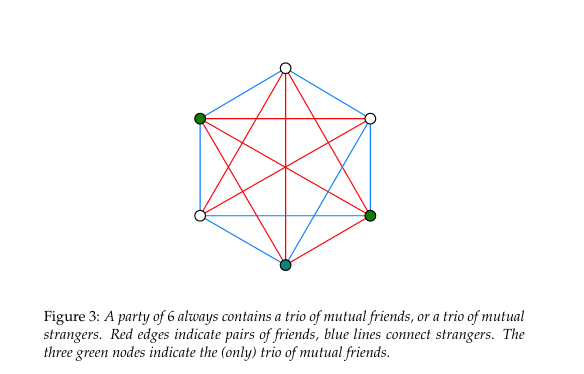
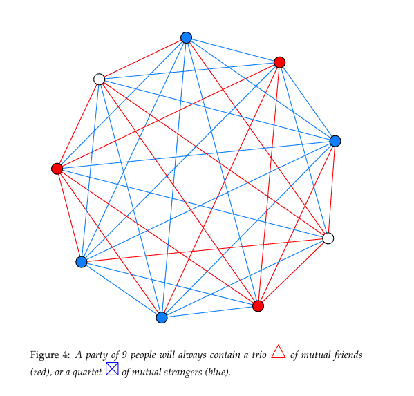

Mathematics is often seen as a difficult subject, with 64% of Americans reporting some level of math anxiety and 13% experiencing severe anxiety (Prodigy Education). Nearly half say this anxiety has impacted their academic or professional paths, and 37% note effects on financial decisions such as budgeting and investing (Prodigy Education). Math anxiety is common, but it does not indicate a lack of ability. Research by Sheila Tobias (1978) and recent studies show that linguistic and psychological barriers, rather than conceptual ones, often hinder progress in advanced mathematics (Tobias 65; Ma 525; Zhang et al.; Ferreira et al.). Recognizing this, educators can help students succeed by addressing communication and presentation challenges. Many people intuitively understand mathematical concepts but struggle with Greek letters, formal notation, and technical jargon. Everyday tasks-such as doubling a recipe, coordinating time zones, finding the fastest route, or estimating if furniture fits through a doorway-use mathematical principles like proportional reasoning and spatial geometry, even if the terminology is unfamiliar. For instance, while "diffeomorphism" may sound complex, its core idea-smoothly transforming an object without tearing it, like stretching pizza dough-is accessible to all learners.
Students who struggle with mathematics should understand that these challenges are common and do not reflect their potential. Confusion or anxiety often arises from learning mathematical language, but with support, these barriers can be overcome. Keeping a math vocabulary journal, defining new terms in your own words with examples, and seeking plain-language explanations or real-life scenarios can improve understanding. These steps help translate formal concepts into familiar ideas. Research consistently shows that mathematics itself is not inaccessible; rather, its language can create unnecessary barriers (Tobias 65; Ferreira et al.).
Math anxiety significantly increases financial vulnerability in retail environments and contributes to broader wealth disparities. Individuals experiencing math anxiety report negative emotions when confronted with numerical information, which in turn triggers avoidance behaviors. As a result, they are less likely to compare prices, analyze interest rates, or evaluate investment options. Over time, such avoidance leads to suboptimal financial decisions and restricts opportunities for wealth accumulation (Peters, 2020).
37% of respondents report that math anxiety impairs their financial decision-making, including activities such as budgeting, investing, and comparing loan terms (Prodigy Education).
46% of Gen Z respondents state that math anxiety affects their financial decisions, including budgeting, understanding bills, investing, and assisting children with math homework (Prodigy Education).
Adults with high levels of math anxiety are more likely to make costly financial errors, including misunderstanding interest rates, overlooking fine print on credit card offers, and avoiding financial products that require numerical evaluation (Lusardi and Tufano 340-345; 337; Ashcraft and Krause 245).
Adults experiencing math anxiety are less likely to compare mortgage rates, seek optimal financial products, understand compound interest, or make informed decisions regarding retirement and loans. This avoidance contributes to overindebtedness and reduced wealth accumulation over time, and is attributable to anxiety rather than a lack of ability (Lusardi and Tufano 350-355).
1 in 5 Americans (20%) reports that math anxiety has resulted in the loss of a career opportunity. Generation Z is most affected, with 62% citing educational or career barriers and 26% reporting lost job opportunities due to poor math skills (Prodigy Education).
47% of adults with math anxiety report setbacks in their academic or professional lives (Prodigy Education).
Math anxiety most frequently begins in middle school, with 34% reporting onset at this stage (Prodigy Education, Weir). As mathematics serves as a gateway to advanced STEM coursework, students experiencing anxiety may avoid upper-level mathematics prior to high school, thereby reducing the STEM talent pipeline and limiting future opportunities (Paechter et al., 2024).
The primary self-reported triggers of math anxiety include fear of failure (53%), lack of understanding (48%), difficulty with calculations (46%), and mismatched teaching methods (45%). Notably, three of these four factors pertain to the presentation of mathematics rather than the subject itself (SWNS). These factors encompass overly technical language, unexplained abstract symbols, rapid instructional pacing, and teaching methods that prioritize rote procedures over meaningful understanding.
In 2024, the median annual wage for STEM occupations was $103,580, more than double the median wage for non-STEM occupations at $48,000. STEM jobs are projected to grow by 8.1% from 2024 to 2034, nearly three times the growth rate of non-STEM occupations at 2.7%. Math anxiety functions as a direct economic barrier, excluding individuals from the fastest-growing and highest-paying employment sector (Bureau of Labor Statistics).
Up to 2 million STEM jobs in the United States may remain unfilled due to the skills gap. Math anxiety is a stronger predictor of STEM avoidance than mathematical ability and independently predicts lower rates of STEM career selection, even after accounting for performance (Ferdinand et al.).
1 in 4 parents cannot assist their children with math homework, and one in ten report feeling anxious when asked to help, perpetuating the intergenerational cycle of math anxiety (Prodigy Education; Malanchini et al.).
Students with math anxiety often avoid math courses early, missing prerequisites for many careers and majors (Finlayson 109). This avoidance limits future opportunities and creates a cycle where reduced exposure increases both anxiety and skill gaps, leading to further avoidance. As a result, even related fields may seem inaccessible, worsening STEM workforce shortages.
Approximately 20% of U.S. high school graduates are prepared for college-level STEM coursework, reflecting a pipeline issue rooted in early avoidance of math (iD Tech).
Ferdinand, Malanchini, and Rimfeld found in 2024 that math anxiety independently predicts lower STEM career choice in emerging adults, even after accounting for actual math ability. This indicates that anxiety itself, not a skill gap, deters individuals from pursuing STEM careers (Ferdinand et al.).
Özdemir found in 2023 that math anxiety reduces self-efficacy, thereby lowering interest in STEM careers. The sequence is as follows: anxiety leads to diminished self-belief, which subsequently reduces interest in math-related fields. Therefore, math anxiety contributes to career avoidance by undermining confidence rather than ability (Özdemir 7-9).
70% of women report experiencing math anxiety, compared to 57% of men (Prodigy Education), and this anxiety has a greater negative impact on women's outcomes (Yu et al.). Stereotypes and societal expectations that frame mathematics as a male domain discourage women from full participation, regardless of skill. Math anxiety also intersects with race, ethnicity, and socioeconomic status. Women of color and those from lower-income backgrounds face additional barriers, such as stereotype threat, limited access to quality instruction, and underrepresentation in advanced courses, all of which intensify anxiety and its long-term effects.
Hottinger's analysis reveals how gender and race shape cultural understandings of who is considered a "mathematician," demonstrating that mathematical identity is constructed through social narratives that systematically exclude women and people of color (Hottinger).
Math anxiety disproportionately affects women's test performance, classroom participation, and long-term confidence, even when achievement matches that of men. These patterns highlight the need for targeted interventions and cultural change to address barriers women face in mathematics (Opesemowo et al., 2025).
Among high-performing students, girls are significantly less likely than equally achieving boys to pursue math-intensive fields, a disparity driven by anxiety rather than ability (Denervaud et al.). Despite their competence, girls often opt out of advanced math pathways due to internalized doubts. Addressing math anxiety could unlock a substantial pool of untapped STEM talent (Samuel et al., 2022, pp. 613-626).
Gender gaps in math achievement appear early in schooling, even when pre-school abilities are similar, showing that school environment and cultural messaging, not innate ability, are the main factors (Denervaud et al.). Teachers, peers, and media shape students' sense of belonging in mathematics, with lasting effects on academic choices and self-concept (The secret language of peers: How peer behaviours signal mindset and influence classroom experiences, 2024).
Career-sorting effects are compounded by gender, as high-performing girls opt out of math-intensive fields at higher rates than boys, primarily due to anxiety rather than ability (Denervaud et al.).
Racial and ethnic minority students face multiple challenges: higher rates of math anxiety, stereotype threat, resource disparities, and underrepresentation in advanced courses (Steele 613; Ma 530). Fewer role models, limited access to quality instruction, and persistent societal biases further reinforce anxiety and reduce participation in higher-level math ("Math-Failure Associations, Attentional Biases, and Avoidance Bias: The Relationship with Math Anxiety and Behaviour in Adolescents" 1001-1011).
Math anxiety not only discourages STEM pursuits but also erodes self-efficacy, further suppressing interest in STEM fields. As women report higher levels of math anxiety, this effect is compounded at each stage (Özdemir 7; see Research section for the full mediation analysis).
The phrase "I am not a math person" has become a culturally accepted identity label, reinforced by prevailing social norms, gender expectations, and classroom experiences (Weir).
Hersh and John-Steiner document the emotional dimensions of mathematical engagement, showing that attitudes toward mathematics—love, hate, anxiety, confidence—are learned rather than innate, and are shaped by social context and instruction quality (Hersh and John-Steiner).
Byrnes's analysis confirms that mathematical competence develops incrementally through skill acquisition, conceptual growth, and linguistic fluency. Students who seem to "lack" ability often simply lack exposure to accessible instruction; their underlying capacity remains untapped (Byrnes 300-315).
Math anxiety has measurable physiological effects, including increased cortisol, elevated heart rate, and working memory impairment, which mimic the body's stress response to genuine physical threats (Ashcraft and Krause 244).
Lower health numeracy among the general adult population leads to poorer medical decision-making and increased healthcare costs (Peters, 2020).
Schwartz examined whether mathematical competence is innate and concluded that it is not - mathematical ability develops through experience, instruction, and practice. This finding is critical: if competence is learned rather than innate, then struggles in mathematics reflect inadequate learning environments (including language barriers) rather than fixed cognitive limitations (Schwartz 230-237).
Math anxiety is self-reinforcing: avoidance leads to skill gaps, which in turn increase anxiety and further avoidance, creating a feedback loop that Ashcraft and Krause documented as the "anxiety-performance cycle" (Ashcraft and Krause 245).
Gold and Simons examine proof and mathematical reasoning, showing that even within professional mathematics, there are ongoing debates about what constitutes a valid mathematical argument, revealing that mathematical communication is more nuanced and context-dependent than the rigid formalism presented to students suggests (Gold and Simons).
Numeracy is essential, with higher proficiency linked to better health, wealth, and decision-making outcomes. Low numeracy increases vulnerability to cognitive biases and emotional reasoning, creating a "hidden tax" in a data-driven society (Peters, 2020).
In a landmark 2012 study, Lyons and Beilock used fMRI scans to demonstrate that for highly math-anxious individuals, the anticipation of performing mathematics activates the brain's pain network, the same regions associated with physical pain. The mathematical tasks themselves did not activate these regions; rather, the fear of mathematical language and symbols did (Lyons and Beilock). This finding indicates that the physiological response is triggered by the presentation of mathematics—specifically, symbols, jargon, and formalism—rather than by the underlying reasoning. The body responds to the language, not the logic.
Math anxiety is intergenerational: Malanchini et al. found that parents' math anxiety is significantly associated with their children's, transmitted through both genetic and environmental pathways - including avoidance behaviors, negative messaging about math, and reduced home numeracy practices (Malanchini et al.).
Math anxiety operates through multiple reinforcing channels - cognitive (working memory disruption), affective (emotional distress), and motivational (avoidance and disengagement) - creating a self-reinforcing cycle where each amplifies the others (Carey et al.).
Souviney's early work on cognitive competence and mathematical development established that children develop mathematical reasoning naturally through everyday experiences, but formal mathematical language must be explicitly taught. The disconnect between informal competence and formal performance is not a deficit - it is a translation gap (Souviney 218-222).
The APA reported in 2023 that math anxiety is an emotional problem, not a cognitive one. People with math anxiety are often fully capable of performing the math required of them - the anxiety itself, not any deficit in ability, is what disrupts performance. When anxiety is reduced or not triggered, anxious individuals perform as well as their non-anxious peers (Weir).
The mediation was statistically significant even after controlling for actual math performance, confirming that anxiety operates on identity and self-perception independently of skill - a finding entirely consistent with the thesis that the barrier is psychological and linguistic, not conceptual (Özdemir 10).
Lyons and Beilock used fMRI scans to demonstrate that for highly math-anxious individuals, the mere anticipation of encountering math - before any calculation occurs - activates the brain's pain network. The mathematical reasoning itself did not trigger pain responses; the prospect of facing mathematical symbols and notation did. This study provides neuroscientific evidence that the barrier is perceptual and emotional, not cognitive - the underlying reasoning is well within the person's capability (Lyons and Beilock).
Rada and Lucietto's 2022 literature review confirmed that unfamiliar or dense notation increases cognitive load, which exacerbates anxiety. When notation does not align with a learner's intuitive understanding, performance drops even when conceptual comprehension is intact (Rada and Lucietto 120-123).
Ashcraft and Krause demonstrated that math anxiety specifically impairs working memory during tasks heavy in symbolic or notational content. The cognitive resources consumed by decoding unfamiliar symbols are diverted from actual problem-solving, causing people to perform below their true ability (Ashcraft and Krause 244-246).
Institutions often see math failure as a competence issue and respond with remedial content and repetitive drills (Hodkowski). However, if language barriers are the root cause, simply adding more math is not effective; we need better translations between mathematical language and intuitive reasoning (Tobias 70).
Hiebert developed a comprehensive theory of how learners develop competence with written mathematical symbols, demonstrating that symbolic fluency is a learned skill distinct from conceptual understanding. Students can possess mathematical reasoning ability while struggling with symbolic representation - a separation that confirms the language barrier thesis (Hiebert 333-350).
Kirshner directly addressed the relationship between linguistic and mathematical competence, arguing that difficulties in mathematics are often rooted in linguistic processing rather than mathematical reasoning. This early work established that language proficiency and mathematical proficiency are separable constructs - you can have one without the other (Kirshner 31-33).
Ortlieb et al.'s analysis shows that each academic discipline, including mathematics, has a specialized discourse community with unique vocabulary, syntax, and argumentation patterns that must be explicitly taught as literacy practices (Ortlieb et al.). Mathematical literacy requires fluency in reading, writing, and communicating within mathematical conventions—skills distinct from computational ability.
Demedts et al. distinguished between state math anxiety (in-the-moment panic) and trait math anxiety (chronic fear), finding that trait anxiety has a stronger effect on complex tasks - and is triggered by the presentation of problems (symbols, notation, formal language), not by the underlying concepts (Demedts et al.).
Castillo et al.'s 2025 systematic review found that formal notation alone is a significant barrier when not coordinated with concrete, intuitive representations. Integrating semiotic representations (symbols, graphs, algebra) with real-world framing is critical for conceptual understanding, yet curricula routinely lead with formalism rather than intuition (Castillo et al.).
Ferreira et al. found in 2025 that math-specific vocabulary is a stronger predictor of early math performance than general language skills. Students who could not parse terminology experienced higher anxiety, which decreased performance - creating a vicious cycle where jargon, not intelligence, determines outcomes (Ferreira et al.).
Tobias argued that much of what is perceived as a math "block" is actually a language barrier: students struggle not with mathematical logic but with notation, vocabulary, and methods of formal argument. She observed that with supportive instruction focusing on interpretation and translation, many students overcome their anxiety entirely (Tobias 65-70).
Wynn and Reyes examine the rhetorical aspects of mathematical communication, arguing that mathematical arguments are persuasive acts embedded in language, not neutral transmissions of truth. How mathematics is argued and presented determines access, making rhetoric a key factor in mathematical literacy (Wynn and Reyes). The specialized vocabulary and proof structures of formal mathematics act as gatekeeping mechanisms, excluding those not initiated into the discourse community.
Pei, Poon, and Suen found in 2025 that mathematical engagement mediates the relationship between anxiety and performance. Students guided to engage with concepts through plain language and real-world framing showed significantly reduced anxiety, demonstrating that how math is presented matters more than what is presented (Pei et al.).
Holenstein et al.'s longitudinal study demonstrated significant transfer effects of mathematical literacy: students who develop strong mathematical literacy - the ability to interpret, communicate, and reason with mathematical ideas in context - show improved performance across domains. Critically, literacy (language-based competence) predicted transfer more strongly than procedural skill, confirming that linguistic fluency is the foundation for mathematical flexibility (Holenstein et al. 810-820).
Abrantes argued for "Mathematical Competence for All," examining the institutional and pedagogical obstacles that prevent universal access. The barriers are not cognitive - they are structural, linguistic, and pedagogical. When mathematics is presented as an accessible language rather than an exclusive code, competence becomes achievable for all learners (Abrantes 130-140).
Hodkowski reported on the ongoing conceptual vs. procedural debate, concluding that conceptual understanding - grasping the "why" - leads to more robust and transferable mathematical thinking than procedural fluency alone. Relying on algorithms and jargon without conceptual context can leave students struggling even when they intuitively understand the ideas (Hodkowski).
Abbott et al. chronicle the "math wars"—decades of contentious debates over curriculum and pedagogy—demonstrating that disagreements about how to teach mathematics often reflect deeper tensions about access, equity, and whose mathematical knowledge counts as legitimate (Abbott et al.).
Nunes, Schliemann, and Carraher's ethnomathematics research further supports this: mathematical reasoning embedded in meaningful, real-world contexts consistently produces higher accuracy and confidence than identical reasoning presented in abstract formal notation (Nunes et al. 40-55).
Sammallahti et al.'s 2023 meta-analysis examined 50 studies with 9,125 participants and found moderate effect sizes for both reducing math anxiety (g = -0.467) and improving math performance (g = 0.502). The most effective interventions combined cognitive support with emotion regulation strategies, and longer interventions targeting students over 12 years old showed the largest effects - demonstrating that anxiety reduction and skill building reinforce each other when addressed together (Sammallahti et al.).
Al-Naim and Mefi's 2023 meta-analysis found that interventions focused on language support, clear explanation of terms, and gradual introduction to notation show consistent effectiveness in reducing math anxiety and improving outcomes (Al-Naim and Mefi 875-880).
Finlayson found that introducing concepts in plain language before formal notation significantly boosts both confidence and performance (Finlayson 110-112).
Castillo et al. found that gamified and active learning strategies that bridge informal reasoning with formal notation reduce intimidation and improve motivation - particularly at the university level, where the density of notation is highest (Castillo et al.).
Malanchini et al. demonstrated in 2022 that math anxiety is transmitted from parent to child through both genetic and environmental pathways. Math-anxious parents engage in fewer home numeracy practices, model avoidance behavior, and communicate negative attitudes toward math - creating an environment in which children absorb anxiety before they ever encounter formal instruction (Malanchini et al.).
This finding has profound implications for the language-barrier thesis: if parents avoid math because of jargon-induced anxiety, their children never develop the informal mathematical vocabulary that would serve as a bridge to formal notation. The linguistic barrier becomes hereditary - not because math ability is absent, but because mathematical language is never modeled at home.
Zhang, Zhao, and Kong conducted a meta-analysis across 84 samples (N = 8,680) and found a significant negative correlation between math anxiety and math performance, with an average effect size of r = −0.32, a moderate but remarkably consistent effect across populations. The relationship was strongest when problems required novel problem-solving skills rather than rote recall, suggesting that anxiety most impairs the kind of creative, conceptual reasoning that people actually possess but cannot access under threat (Zhang et al.).
The effect was strongest among senior high school students and weakest among elementary students, indicating that math anxiety's damage accumulates as notation and jargon become denser in higher grades - further evidence that the barrier scales with linguistic complexity, not conceptual difficulty (Zhang et al.).
Ma's earlier 1999 meta-analysis had found the same pattern: math anxiety correlated more strongly with language-based math tasks (word problems) than with pure calculation, establishing that the linguistic dimension of math anxiety is not a recent discovery but a replicated finding across decades (Ma 525).
Radišić et al. identified both school-level and individual-level factors contributing to math anxiety, finding that instructional approach - particularly the degree of formalism and abstraction introduced early - is a significant predictor. Schools that delay heavy notation and emphasize conceptual understanding show lower anxiety rates, supporting the argument that presentation drives anxiety more than content (Radišić et al. 10-15).
Ding's work on measuring developmental students' math anxiety confirmed that anxiety levels are particularly high among students who have experienced repeated exposure to formal notation without adequate linguistic scaffolding, creating a population of learners who possess mathematical reasoning ability but have been systematically excluded by language barriers (Ding 38-42).
D'Ambrosio's ethnomathematics framework provides a powerful way to understand why mathematical competence is often hidden by formal schooling. D'Ambrosio argues that mathematics is not a culture-free universal code delivered in one official register; rather, it is a set of human practices that develops in every society through counting, measuring, designing, locating, trading, and explaining relationships in culturally meaningful ways (D'Ambrosio 44-47). In this view, the problem is not that some students "lack math," but that schools often treat one culturally specific form of mathematics - the written, standardized, symbolic language of formal institutions - as if it were the only legitimate one.
This is exactly what Nunes, Schliemann, and Carraher demonstrated in their study of Brazilian street vendors. The children could calculate mentally with impressive precision in the marketplace because the task was embedded in a meaningful social practice: selling, negotiating, making change, and estimating profit. Yet when equivalent arithmetic was presented in school form, detached from context and expressed in formal notation, their performance dropped dramatically (Nunes et al. 27-35, 40-54). The children had not lost mathematical ability; the setting had changed, and with it the language, expectations, and epistemic frame.
D'Ambrosio's framework helps explain why math anxiety can be so destructive. If learners have already developed useful mathematical practices through family life, work, community activity, or everyday problem-solving, then the classroom can feel like a place where their knowledge is ignored or invalidated. What appears to be a "lack of ability" may actually be a mismatch between the learner's cultural mathematical experience and the school's formal presentation.
This is also why ethnomathematics has major implications for teaching. Instead of starting with abstract notation and then hoping students attach meaning to it later, educators can begin with familiar practices - shopping, cooking, measuring, building, designing, budgeting, and navigating - and then connect those practices to formal mathematical language. When teachers do this, they are not lowering standards. They are translating between mathematical registers and making visible the competence students already possess.
D'Ambrosio's framework is supported by later ethnomathematics scholarship, which shows that mathematics is always culturally situated and that formal schooling often privileges only one version of it. Rosa and Orey describe ethnomathematics as a way to recognize "mathematical ideas" in diverse cultural activities, including architecture, crafts, measurement, and local problem-solving (Rosa and Orey 11-15). A recent literature review likewise argues that ethnomathematics helps connect mathematics education to local practices, cultural identity, and meaningful real-world applications rather than treating mathematics as detached abstraction (Kabuye Batiibwe 383-405).
Munetsi emphasizes that ethnomathematics reveals how different cultural groups have developed sophisticated mathematical practices that are often invisible to formal education systems (Munetsi). Joseph's comprehensive historical analysis demonstrates that mathematics has deep non-European roots, with significant contributions from African, Asian, and Indigenous American civilizations that are systematically erased in Eurocentric narratives (Joseph). Knijnik argues that ethnomathematics is inherently political, challenging the power structures that determine whose mathematical knowledge is valued and legitimized in educational institutions (Knijnik). However, Rowlands and Carson raise important questions about how ethnomathematics should inform curriculum, cautioning that overly relativistic approaches risk undermining the universal applicability of mathematical reasoning while acknowledging the validity of culturally situated mathematical practices (Rowlands and Carson). This ongoing debate highlights a central challenge: while validating local and cultural mathematical practices can improve student engagement and recognize previously excluded knowledge, educational systems also require common standards to ensure shared understanding and facilitate communication. A balanced approach seeks to honor diverse mathematical heritages within a curriculum that also maintains core principles and procedural rigor, supporting both equity and coherence in mathematics education.
This pattern persists in many contemporary everyday settings.
In many countries, street vendors, market traders, and small business owners perform arithmetic mentally with speed and flexibility - calculating discounts, making change, comparing weights, estimating margins, and managing inventory without paper or calculators. This is the same kind of competence Nunes and colleagues documented in Brazil: the reasoning is real, but it appears in a practical register rather than a classroom one (Nunes et al. 27-35). Ethnomathematics research continues to show that such marketplace reasoning should be understood as authentic mathematical knowledge, not as a weaker substitute for school math (Kabuye Batiibwe 383-405).
Carpenters, masons, electricians, mechanics, and fabricators use geometry, ratios, estimation, scaling, and spatial reasoning every day. A contractor measuring lumber, a mechanic calculating torque, or a tile worker laying out a pattern may be using concepts that correspond to formal mathematics, even if they describe the work as "common sense" or "experience." Rosa and Orey emphasize that ethnomathematics includes these occupational forms of reasoning, where measurement and design are inseparable from practice (Rosa and Orey 11-15). What schools often miss is that this competence is not informal in the sense of being unserious; it is informal only in the sense that it is not written in textbook notation.
Indigenous knowledge systems also contain rich mathematical reasoning in ecological observation, navigation, pattern-making, spatial organization, and resource management. A recent review on Indigenous mathematical knowledge argues that bringing these practices into contemporary education can strengthen equity and sustainability while affirming local ways of knowing (Ghosh and Banerjee).
Sillitoe's examination of local science and indigenous knowledge systems demonstrates that traditional practices embody sophisticated mathematical and scientific reasoning that international development efforts often dismiss or ignore (Sillitoe). Devisch and Nyamnjoh's postcolonial analysis reveals how Western academic frameworks have systematically devalued non-Western ways of knowing, including mathematical practices embedded in African cultural traditions (Devisch and Nyamnjoh). Kanu emphasizes that the curriculum itself is a cultural practice shaped by colonial legacies, and decolonizing mathematics education requires recognizing that indigenous mathematical knowledge is epistemologically valid, not merely "interesting" cultural content (Kanu).
This matters because too often schools treat Indigenous reasoning as cultural background rather than as mathematics itself.
Quilters, weavers, bead artists, and textile designers use symmetry, tessellation, repetition, scaling, and transformation in ways that mirror formal geometry and combinatorics. These practices are mathematically sophisticated, but because they are embedded in art and craft, they are often excluded from what school systems count as mathematics. Ethnomathematics makes visible the mathematical thinking already present in design traditions (Rosa and Orey 11-15).
Present-day people use mathematics constantly in budgeting apps, rideshare pricing, online shopping comparisons, data dashboards, fitness trackers, and social media analytics. These are not trivial uses of math; they require percentages, rates, averages, trade-offs, and numerical judgment. A recent ethnomathematics review highlights the relevance of mathematics to contemporary cultural and technological practices, reinforcing the point that mathematical thinking extends far beyond worksheets and symbolic manipulation (Setiaputra et al. 195-211).
Striphas analyzes how algorithmic culture shapes everyday life, demonstrating that ordinary people navigate complex mathematical systems embedded in digital technologies without recognizing these interactions as mathematical engagement (Striphas). Gillman's work on quantitative literacy emphasizes that functional numeracy in contemporary society requires not advanced calculus but rather the ability to interpret data, evaluate claims, and make informed decisions using basic mathematical reasoning—skills that many mathematically anxious adults already possess in practical contexts but fail to recognize as "real math" (Gillman). Roberts argues for making mathematics relevant to everyone by connecting formal concepts to the mathematical reasoning people already use in daily life, essentially bridging the translation gap between informal competence and formal language (Roberts).
Many adults function fluently in these environments while still claiming they are "bad at math," because they do not recognize informal numeracy as mathematics. (Gal et al.)
Introducing lessons or discussions with real-world examples increases the relatability of mathematical concepts and reduces intimidation. Educators are encouraged to prompt students to develop their own analogies or real-life scenarios, facilitating connections between abstract ideas and everyday experiences and fostering greater ownership of learning.
A derivative in mathematics represents the instantaneous rate of change of a function with respect to a variable, often visualized as the slope of the tangent line to a curve at any given point. It measures how quickly a function is changing at a specific moment, rather than over an interval
Speedometer Reading: The speedometer in your car shows the rate of change of your position with respect to time, updated continuously. You read calculus every time you glance at the dashboard.
Phone Battery Drain: When you notice that the speed at which your phone battery drains increases when you play a game—the drain rate changing over time—you are observing the derivative of battery life. The fact that it changes indicates you are intuitively grasping the second derivative (the acceleration of battery drain).
Stock Ticker Rates: Stock tickers showing how fast a price is rising or falling are displaying derivatives. "The market dropped 2% per hour this morning" is a rate of change—a derivative.
An integral in mathematics represents the accumulation of quantities, such as the area under a curve, total volume, or displacement, by summing infinitely many, infinitely small pieces. It is a foundational concept in calculus that acts as the opposite of differentiation (finding the rate of change).
Area Under a Curve: Definite integrals calculate the net signed area between a function's graph and the x-axis within a specific interval, with areas below the axis counted as negative.
Limit of a Sum (Riemann Sum):An integral is defined as the limit of the sum of the areas of an increasing number of infinitely thin rectangles, often written as
Antiderivative: An indefinite integral, written as represents a family of functions whose derivative is the original function, representing the inverse operation to differentiation
Two Types of Integrals:
Gas Cost Estimation on a Road Trip: Estimating total gas cost on a road trip where prices change along the route is intuitive integration, where you mentally sum small cost chunks over varying prices and distances.
Paint Needed for Irregular Wall: Calculating how much paint you need for an oddly shaped wall—you mentally break the wall into smaller, more regular sections, estimate each, and add them up. That is what integration does formally.
Fitness Tracker Calorie Calculation: A fitness tracker computing total calories burned during a workout where your intensity varies is performing integration over time—summing tiny intervals of varying effort.
Car Odometer: The odometer in your car is an integrator that takes your speed (which changes moment to moment) and accumulates it into total distance traveled.
The Laplace transform is an integral transform that converts a function of time into a complex frequency domain function , simplifying differential equations into algebraic ones (Widder 419; Campbell and Haberman 245). The notation may be intimidating, but the conceptual act of transforming a hard problem in one domain into an easier problem in another domain is something people do intuitively across countless contexts. The mathematical language barriers obscure the conceptual competence already present. It is defined as:
This tool is widely used in engineering and physics to analyze control systems, circuits, and differential equations (Campbell and Haberman 247-250).
While named after Pierre-Simon Laplace, the transform's essential ideas appeared much earlier in Leonhard Euler's work from the 1730s and 1750s (Deakin 264-267). Euler used similar integral transforms to solve differential equations decades before Laplace formalized the method, demonstrating once again how mathematical concepts often exist in practice before receiving their formal names and notation (Deakin 268-269). The transform remained relatively obscure until Oliver Heaviside rediscovered and popularized operational methods in the late 19th century for solving electrical circuit problems (Widder 419-420).
The Laplace transform is computed by evaluating the improper integral, often using tables for common functions (MIT OCW)[1]. Inverse Laplace transforms recover from , typically using partial fraction decomposition and inverse transform tables (Ungar 786-788; Widder 179-180). However, the inversion process can be remarkably intuitive once patterns are recognized, allowing practitioners to work "by inspection" without formal calculations (Ungar 789-791).
Properties (Campbell and Haberman 251-255; Guggenheimer 196-198):
Advantages of Laplace Transform:
| Transforms |
|---|
| (Pribitkin 238-240) |
| (Efthimiou 376-378) |
Control Engineering: Crucial for designing and analyzing automatic control systems, such as cruise control in cars, flight control systems, and industrial process control (Campbell and Haberman 258-265). The transfer function approach enabled by Laplace transforms allows engineers to predict system behavior without solving differential equations repeatedly.
Electrical Circuit Analysis: Simplifies the solution of differential equations governing electrical circuits, particularly in finding steady-state and transient responses (Guggenheimer 196-202). Oliver Heaviside's operational calculus—essentially the Laplace transform in disguise—revolutionized electrical engineering by making circuit analysis algebraic rather than requiring complex differential equation solutions (Widder 420-422).
Mechanical System Modeling: Used to analyze mechanical vibrations, such as in car suspension systems (mass-spring-damper systems) to ensure occupant comfort (Campbell and Haberman 252-255). Systems of coupled differential equations that would be intractable by hand become manageable through Laplace transform methods (Guggenheimer 199-202).
Signal Processing: Used in digital signal processing to analyze filters and system stability. The connection to Fourier analysis through trigonometric series provides powerful tools for understanding frequency content (Efthimiou 376-379).
Integrodifferential Equations: Laplace transforms provide systematic methods for solving equations involving both derivatives and integrals, common in viscoelasticity, population dynamics, and epidemiology (Lunardi 185-195). These equations are notoriously difficult by classical methods but become algebraically tractable through transformation (Lunardi 200-210).
Medical Imaging: Helps in reconstructing clear images in techniques like MRI and CT scans, where integral transforms convert measured data back into spatial representations.
Nuclear Physics: Used to study radioactive decay processes, where exponential decay functions transform cleanly into simple algebraic forms.
Equalizers in Music: Every time you adjust bass and treble on an equalizer, you're applying transform thinking—converting a time-domain signal (the music) into frequency components you can independently control. Engineers who use Laplace transform tables daily often describe themselves as "just looking things up" rather than "doing mathematics," yet they're performing sophisticated mathematical reasoning: recognizing patterns, matching forms, applying linearity properties, and decomposing complex systems into manageable pieces (Ungar 786-791).
A Taylor series is a way of approximating any smooth (infinitely differentiable) function using an infinite sum of polynomial terms based on the function's derivatives at a single point (Banner 551-555). For a function expanded around point , the Taylor series is:
When , this becomes the Maclaurin series. The remarkable fact is that every power series is actually a Taylor series for some function (Meyerson 51-52), creating a fundamental equivalence between polynomial approximations and smooth functions.
The Taylor series represents one of mathematics' most powerful ideas: any sufficiently smooth curve can be approximated locally by polynomials (Eves 40-45). The Mean Value Theorem guarantees that the error in truncating a Taylor series after terms can be bounded and estimated (Spiegel 263-266). This connection between derivatives and polynomial approximations enables both theoretical analysis and practical computation (Widder 126-130).
Taylor series converge to the original function within a specific radius of convergence, but can diverge outside this region or at certain pathological points (Erdős et al. 262-266). The coefficients' behavior determines convergence properties: bounded coefficients ensure convergence within the unit circle (Duffin and Schaeffer 141-145). The deep connection between Taylor series and Laplace transforms provides powerful tools for solving differential equations (Euler 305-307). Integration methods like Romberg integration leverage Taylor series to achieve high-precision numerical results (Rozema 284-288).
Estimated Time Arrival (GPS Navigation): When your GPS estimates your arrival time, it uses your current speed and recent acceleration to project your arrival time (Banner 560-565). You're approximating future behavior from what's happening right now—that's the exact same idea behind a Taylor series.
Suppose you're driving on a highway toward a destination 50 miles away. Your GPS doesn't just divide distance by current speed—it uses a Taylor series approximation of your position over time.
Let be your position along the route at time (in miles from start). At the current time , the GPS knows:
To predict your position at future time , the GPS uses a truncated Taylor series:
Zeroth-order approximation (ignoring all motion):
This assumes you don't move at all—clearly useless.
First-order approximation (constant velocity):
To reach the destination at 50 miles: hours ≈ 40 minutes.
Second-order approximation (accounting for acceleration):
To reach 50 miles:
Solving the quadratic:
The acceleration term changes the estimate by about 1 minute. If the GPS tracked higher-order derivatives (jerk, snap, crackle), it could include third, fourth, and fifth-order terms for even greater precision (Banner 562-565).
Real-world complexity: Modern GPS systems continuously update these calculations, incorporating:
Every time your GPS updates "Arrival: 3:47 PM" to "Arrival: 3:45 PM" as you accelerate onto the highway, it's recalculating the Taylor series with new derivative values. You're witnessing calculus update in real-time, packaged in a simple interface (Banner 570-572).
Recipe Adjustments: If you know how a recipe tastes (function value), how it changes with more salt (first derivative), and how the change itself changes (second derivative), you can predict how it will taste with small tweaks—just like a Taylor series predicts a function's values for small changes (Spiegel 264-266).
Weather Predictions: When weather apps predict tomorrow's temperature, they use current measurements (temperature, pressure, rate of change) to estimate future values (Banner 565-568). This is similar to using a Taylor series: you take what you know now (and how it's changing) to predict what's next. Numerical weather models solve differential equations using Taylor series expansions to step forward in time.
Estimating Expenses: Suppose you know how much you spend each month and how that amount is increasing. You can use that information to estimate your expenses a few months from now—just as a Taylor series uses current value and rates of change to predict future values (Banner 560-562).
Driving a Car: If you're speeding up (accelerating) and want to know where you'll be in 10 seconds, you use your current position, speed, and acceleration—again, this is like the Taylor series, which uses these "derivatives" to estimate your future position (Banner 562-565).
Scientific Computing: Nearly every calculator uses Taylor series to compute transcendental functions like , , and (Eves 45-48). When you press "sin" on a calculator, it evaluates:
terminating after sufficient terms for the desired precision (typically 10-15 terms for double-precision accuracy).
Engineering Approximations: Engineers routinely use first- or second-order Taylor approximations to linearize nonlinear systems, making complex differential equations solvable (Widder 130-135). The small-angle approximation (first term of Taylor series) is fundamental in physics, enabling analytical solutions to pendulum motion, wave equations, and optics.
Assignment Completion Times: Every time you mentally estimate "if I keep going at this rate, I'll finish in about..." you're performing zeroth- and first-order Taylor approximation. When you account for how tired you're getting (second derivative—rate of slowing down), you're including quadratic terms. (Banner 572-574).
The formalism
captures this intuition precisely, but the competence exists independently: people successfully predict futures from present trends without ever seeing the notation (Eves 48-50). The mathematical language provides precision and generality; the conceptual understanding already operates in daily decision-making.
Nature's Design: Fractals appear in Romanesco broccoli, fern leaves, and snowflakes. These natural shapes use simple repeating rules to create huge surface areas, such as in our lungs or tree branches.
Digital Antennas: Modern cell phones use fractal-shaped antennas. Their self-similar, jagged design allows a long wire to fit in a tiny space and tune to multiple frequencies.
Fractal Dimension: Instead of being a whole number, the dimension of a fractal can be a fraction. For example, a smooth circle has dimension 1. A complex, jagged coastline falls between 1 and 2-more intricate than a line, less than a solid area. The more jagged the shape, the higher its fractal dimension.
Pinecones and Pineapples: The arrangement of scales and segments often follows fractal and Fibonacci sequence patterns.
The Mandelbrot Set: A famous mathematical fractal that reveals infinite complexity as you zoom in.
Sierpinski Triangle/Carpet: Simple geometric fractals with repeating triangular or square holes.
Computer Graphics and Animation: Fractals generate natural-looking landscapes, textures, and clouds in movies and video games.
Architecture: Some buildings, such as Hindu temples or Islamic geometric designs, use fractal repetition for aesthetic and structural purposes.
Nervous System: The branching of neurons and dendrites follows a fractal pattern.
Leaf Veins: The pattern of veins in many leaves is fractal, maximizing nutrient and water transport.
Weather Predictions: Weather forecasts rely on complex partial differential equations to model how air pressure, temperature, and moisture interact. When you see a "70% chance of rain," you're looking at the result of a massive calculus problem.
Your Morning Coffee: When you set a hot cup of coffee on a table, Newton's Law of Cooling (a first-order differential equation) dictates how fast it hits room temperature. The hotter the coffee is compared to the room, the faster it loses heat.
Population Growth: Biologists use the Logistic Equation to predict how a population (such as wolves in a park or bacteria in a petri dish) will grow until it reaches the "carrying capacity" of its environment.
Stock Market Volatility: The Black-Scholes Model is a famous partial differential equation used by investors to calculate the fair price of stock options by accounting for time and risk.
An eigenvector is a direction that does not change when a transformation is applied—it just gets stretched or compressed (Schonefeld 316-318). The eigenvalue is how much it stretches. Formally, given a linear transformation represented by matrix , a nonzero vector is an eigenvector with eigenvalue if:
The transformation takes the vector and multiplies it by a scalar factor , preserving its direction (Chu 1-5).
The eigenvalue problem is one of the most fundamental in mathematics, appearing in differential equations, quantum mechanics, structural engineering, and data analysis (Chu 5-10). Finding eigenvalues requires solving the characteristic equation , which reduces the linear algebra problem to finding roots of a polynomial (Tisseur and Meerbergen 235-240). For an matrix, this yields eigenvalues (counting multiplicity), though they may be complex even when is real.
The quadratic eigenvalue problem arises in vibration analysis, acoustic modeling, and fluid-structure interaction, generalizing the standard problem to account for damping and stiffness (Tisseur and Meerbergen 240-250). The inverse eigenvalue problem—constructing a matrix from specified eigenvalues—has applications in control theory, system identification, and molecular structure determination (Chu 10-20). In random matrix theory, eigenvalue distributions exhibit phase transitions and universal behavior with applications to statistics, nuclear physics, and wireless communications (Baik et al. 1643-1650).
Pull a rubber band: In mathematical terms, stretching a rubber band acts as a linear transformation that preserves the orientation of specific, privileged lines (Schonefeld 316-317). The direction along its length does not rotate; it just gets longer. That direction is the eigenvector; how much longer it gets is the eigenvalue.
The Mirror Reflection: The reflection itself maps every point on your body to a point in "mirror space".
Eigenvectors:
Musical Instruments (Resonance): When you pluck a guitar string, it vibrates in specific patterns called "harmonics."
A guitar string fixed at both ends (length ) obeys the wave equation:
where is the displacement at position and time , and is wave speed (tension , mass per length ).
Seeking standing wave solutions of the form and applying boundary conditions (fixed ends) yields the spatial eigenvalue problem:
where .
Eigenfunctions (mode shapes):
These are the only shapes the string can vibrate in without "twisting into chaos"—each is an eigenfunction of the differential operator with eigenvalue .
Eigenvalues (frequencies):
For a guitar A string ( m, fundamental Hz):
When you pluck the string, the initial displacement decomposes into a sum of these eigenfunctions:
The coefficients depend on where you pluck. Plucking at the center excites odd harmonics strongly; plucking near the end emphasizes higher harmonics, creating a brighter timbre (Tisseur and Meerbergen 250-255). The guitar string "knows" its eigenmodes instinctively—physics forces the vibration into these patterns. Every musical instrument (violin, piano, flute, drum) operates on eigenvalue principles: permitted vibration modes determined by geometry and boundary conditions (Chu 25-30).
Google's Original PageRank Algorithm: The system that decides which web pages appear first in search results is fundamentally an eigenvector computation (Bryan and Leise 569-575). The "most important" page is the dominant eigenvector of the web's link graph (Brin and Page 109).
Imagine a simplified web with 4 pages. The link structure forms a matrix where if page links to page ( = number of outlinks from page ), and 0 otherwise.
Suppose:
The hyperlink matrix:
PageRank assumes a "random surfer" who follows links with probability and jumps to a random page with probability . The Google matrix:
where is the matrix of all ones, and pages. The PageRank vector satisfies:
This is an eigenvector equation with eigenvalue (Bryan and Leise 572-575). The eigenvector components represent page importance:
Page 1 receives 38.7% of the "importance," making it the top search result. Pages 2, 4, 3 follow in that order.
The $25 Billion Eigenvector: In 2006, Google's market value was tied to this eigenvector computation running on billions of pages (Bryan and Leise 569). The algorithm's brilliance: reducing the subjective problem of "importance" to an objective eigenvalue problem (Langville and Meyer 135-145). Modern search uses hundreds of factors, but PageRank's eigenvector remains foundational (Langville and Meyer 145-155).
Web-scale computation: For the real web with billions of pages, computing the dominant eigenvector requires iterative methods (power iteration, Arnoldi iteration) that exploit sparsity (Langville and Meyer 150-160). Google updates PageRank periodically, recalculating the eigenvector as the web's link structure evolves—the largest eigenvalue problem solved regularly in practice (Bryan and Leise 575-580).
Facial Recognition (Eigenfaces): Computers see faces not as people, but as huge grids of numbers (pixels).
The Transformation: An algorithm analyzing a database of thousands of faces computes the covariance matrix of pixel values across all images.
Eigenvectors: These are called "Eigenfaces"—ghostly, abstract face-like patterns that represent the most important features (like the width of a nose or the height of a forehead). Each face can be expressed as a weighted sum of these eigenvectors (Baik et al. 1650-1660). "Eigenfaces" are the fundamental patterns that all faces can be decomposed into. The technology on your phone that unlocks when it sees your face is built on eigenvectors.
Eigenvalues: The importance of each feature. A high eigenvalue means that specific "feature" (like eye spacing) varies significantly across faces and is useful for telling two people apart. Low-eigenvalue components represent noise and can be discarded (Baik et al. 1660-1670).
Geographic Networks: Transportation networks, river systems, and migration patterns can be analyzed using eigenvector centrality, identifying the most "central" or influential locations based on connectivity (Straffin 269-272). The dominant eigenvector of an adjacency matrix reveals which cities or nodes are most important to the network's structure (Straffin 272-276).
Social Influence Networks: In social networks, eigenvector centrality measures influence: you're important if you're connected to important people (Jia et al. 367-375). The dynamics of opinion formation, power distribution, and consensus-building can be modeled as eigenvalue problems, with convergence to steady states determined by the dominant eigenvector (Jia et al. 375-390). Twitter's suggestion algorithm, LinkedIn's "People You May Know," and academic citation rankings all use eigenvector centrality variants (Jia et al. 390-395).
Evolutionary Biology: Phylogenetic inertia—the tendency of species to retain ancestral traits—can be quantified using eigenvector methods that decompose evolutionary correlation structures (Diniz-Filho et al. 1247-1255). Eigenvector analysis reveals which traits evolved together and identifies evolutionary constraints (Diniz-Filho et al. 1255-1262).
Structural Engineering: Buildings and bridges have natural vibration modes (eigenvectors) and resonant frequencies (eigenvalues). Engineers design structures to ensure earthquake frequencies don't match resonant frequencies, which would cause catastrophic resonance (Tisseur and Meerbergen 260-270). The Tacoma Narrows Bridge collapse (1940) resulted from wind exciting a torsional eigenmode.
Quantum Mechanics: The Schrödinger equation is an eigenvalue problem where is the Hamiltonian operator, are energy eigenstates (wavefunctions), and are energy eigenvalues (Chu 30-35). Every quantum system—atoms, molecules, semiconductors—is fundamentally described by eigenvalues and eigenfunctions.
Musicians intuitively understand that instruments have "sweet spots" where certain notes resonate—they're finding physical eigenmodes without solving differential equations (Tisseur and Meerbergen 270-275). Social media users who cultivate connections to "influencers" are implicitly maximizing their eigenvector centrality (Jia et al. 380-385).
When you search Google and trust that the top result is probably most relevant, you're relying on eigenvector mathematics you've never seen (Bryan and Leise 580-581). The formalism and characteristic polynomials provide precision, but the conceptual competence—recognizing special directions, resonant patterns, influential positions, and dominant modes—operates continuously in perception, music, social navigation, and spatial reasoning (Schonefeld 318-319).
While computing eigenvectors requires linear algebra sophistication, recognizing eigenvector structure is something people do naturally when identifying the "main" pattern, the "most important" person, or the "resonant" frequency—mathematical competence hiding in plain sight (Chu 35-39).
Game theory is a mathematical framework for analyzing strategic interactions between rational decision-makers, where the outcome for each participant depends on the actions of others (Binmore 25-27). It models scenarios involving conflict or cooperation to identify optimal strategies, commonly used in economics, biology, and social sciences to predict behaviors (Resnik 121-125).
Game theory provides a rigorous mathematical framework, often requiring knowledge of calculus and real analysis, particularly for finding "existence proofs" of solutions such as Nash's theorem (Binmore 28-30). The core goal is to determine the best action for a player when the outcome depends on the actions of others (Resnik 125-128). Interestingly, game theory exhibits uncertainty principles analogous to quantum mechanics, where certain strategic information cannot be simultaneously optimized (Székely and Rizzo 688-695).
Nash Equilibrium: A situation where no player can benefit by changing strategies while others keep theirs unchanged (Binmore 30-32). Formally, a strategy profile is a Nash equilibrium if for every player and every alternative strategy :
where is player 's utility function. It is foundational for predicting stable outcomes in competitive scenarios (Resnik 135-140).
Mathematical Techniques: Range from basic arithmetic for simple models to calculus (derivatives for optimization), linear algebra (eigenvector methods for finding equilibria), and probability for mixed strategies in complex scenarios (Weil 360-363; Binmore 25-34).
Payoff Matrices: Used to visualize and calculate the results of simultaneous games (like the Prisoner's Dilemma) for each player based on their choices (Resnik 130-135). Matrix entries represent utilities for each combination of strategies.
Utility Maximization: Players assign numerical values (utility) to outcomes, acting to maximize their own expected utility (Binmore 26-28). The expected utility for mixed strategies is computed as where is the probability of strategy profile .
Strategic Interdependence: Players' outcomes are interconnected; a player must consider the choices of others to achieve their best result (van Benthem et al. 123-126).
Rationality: Participants are assumed to make decisions that maximize their own rewards or payoffs, though this assumption can be questioned in real-world applications (Rubinstein 91-100; Stone 220-225).
Types of Games:
Prisoner's Dilemma: A classic scenario showing why two completely rational individuals might not cooperate, even if it appears in their best interest to do so (Cunningham 11-15).
Two suspects are arrested and interrogated separately. Each has two strategies:
The payoff matrix shows years in prison (negative utility), with each entry represents (Suspect 1's years, Suspect 2's years):
| Suspect 2: Cooperate | Suspect 2: Defect | |
|---|---|---|
| Suspect 1: Cooperate | (-1, -1) | (-10, 0) |
| Suspect 1: Defect | (0, -10) | (-5, -5) |
From Suspect 1's perspective:
Defecting is a dominant strategy—it's optimal regardless of the opponent's choice (Cunningham 15-18).
By symmetry, Suspect 2 has the same reasoning. Both rationally choose to defect, yielding outcome (-5, -5).
Nash Equilibrium: (Defect, Defect) is the unique Nash equilibrium (Cunningham 18-20). At this point:
Neither player can unilaterally improve by switching strategies.
Mutual cooperation (-1, -1) would be better for both than mutual defection (-5, -5), but rational self-interest prevents this outcome (Cunningham 20-24). This illustrates how individual rationality can lead to collective irrationality—a fundamental insight with implications for environmental policy, arms races, and public goods provision (Rubinstein 100-110).
When the game repeats indefinitely, cooperation can emerge through strategies like "Tit-for-Tat" (start cooperating, then mirror opponent's previous move). The folk theorem shows that with sufficient patience (low discount rate), nearly any outcome between full defection and full cooperation can be sustained as an equilibrium (Resnik 155-165).
Economic Competition: Firms set prices to maximize profits while anticipating competitor responses (Binmore 32-34). Bertrand competition models predict that firms will undercut each other to marginal cost, even though collusion would be more profitable—another prisoner's dilemma (Resnik 145-150).
Computer Science: Used to optimize network operations, design algorithms, and enhance artificial intelligence systems (van Benthem et al. 130-132). Mechanism design uses game theory to create systems where self-interested behavior leads to desired outcomes.
Auctions and Voting: Used for analyzing voter behavior, coalition formation, and international conflict negotiations (Stone 225-235). The revelation principle shows that any social choice outcome achievable with strategic behavior can also be achieved with truthful reporting under an appropriately designed mechanism (Resnik 165-170).
Four-Way Stop Dilemma: Ever been at a four-way stop where everyone is waiting for someone else to move? You're stuck in a "stable" state where no one gains anything by changing their strategy alone. That's high-level economics and math in a suburban intersection—a Nash equilibrium with multiple possible outcomes (Binmore 30-32).
Helping a Coworker: You use this logic every time you decide whether to help a coworker with a project—you're weighing your effort (cost) against the shared success (reward).
You and a coworker are both working on a project that affects both your reputations. Each can choose:
Payoffs represent net benefit (recognition minus effort):
| Coworker: Help | Coworker: Slack | |
|---|---|---|
| You: Help | (3, 3) | (-1, 4) |
| You: Slack | (4, -1) | (0, 0) |
Interpretation:
From your perspective:
Slacking is a dominant strategy for both players.
Nash Equilibrium: (Slack, Slack) with payoff (0, 0) (Binmore 30-32). Neither can improve unilaterally:
But mutual helping (3, 3) is Pareto superior—better for everyone (Cunningham 24-26). This creates workplace tension: rational self-interest suggests slacking, but everyone is worse off than if they'd cooperated.
Real-World Modifications:
Every time you think "I'll help if they help, but I'm not getting taken advantage of," you're computing conditional strategies in an implicit repeated game (van Benthem et al. 126-129).
Last Slice of Pizza: There is one slice of pizza left at a party. Everyone wants it, but no one wants to look greedy. If one person "volunteers" to take it, they get the food but a small social cost (being the "greedy" one). If no one takes it, the pizza goes to waste. You are constantly calculating if your hunger is worth the potential social judgment—weighing utilities in a social coordination game (Rubinstein 95-100).
Yellow Light Game: You're driving toward a yellow light. If you speed up and the other driver at the cross-street also "goes for it," you crash (worst outcome). If you both stop, you lose a little time but are safe. If one stops and the other goes, the "goer" wins time while the "stopper" loses it. This is a "chicken" game with two Nash equilibria (both pure strategy equilibria where one yields) and often leads to mixed strategy play where each player randomizes (Resnik 140-145).
Strategic Thinking: Every time you decide whether to speak up in a meeting based on whether others will, choose a lane in traffic based on what other drivers might do, or hold the door wondering if the person will reciprocate next time, you're performing game-theoretic reasoning (van Benthem et al. 132-134). Parents negotiating bedtime with children, shoppers timing purchases for sales, employees deciding how hard to work when monitoring is imperfect—all demonstrate intuitive understanding of strategic equilibria, dominant strategies, and repeated game dynamics (Rubinstein 130-140). The notation of payoff matrices and Nash equilibrium conditions formalizes thinking that humans already do implicitly in countless social situations. While formal game theory requires mathematical sophistication, strategic competence—anticipating others' responses and optimizing accordingly—operates constantly in daily life, unrecognized as "mathematics" by those who claim to be "bad at math" (Stone 240-244; Rubinstein 140-146).
A heuristic is a practical "rule of thumb," mental shortcut, or experimental method used to solve problems or make decisions quickly, especially when an optimal solution is impossible or impractical to find. It focuses on efficiency and "good enough" results rather than perfection.
Mental Shortcuts: Evaluating a situation by "gut feeling" rather than in-depth analysis (e.g., assuming a higher-priced item is better quality).
Problem Solving/AI: In computing, it is a technique that finds a "good enough" solution when a formal algorithm is too slow.
Learning/Teaching: Methods that encourage students to discover solutions themselves, such as "trial and error" or "learning by doing".
Daily Life: Using a rule of thumb, such as "if I haven't used it in a year, I should throw it away
"Don't grocery shop hungry." "If it sounds too good to be true, it probably is." You use heuristics constantly - they're reliable shortcuts that don't need a formal proof.
The "Half Your Age Plus Seven" Rule: a famous social heuristic for dating. It's not a law of nature, but it's a quick mathematical "shortcut" people use to judge social appropriateness without overthinking it.
Finding Your Keys: You don't search every square inch of your house, starting from the front door (that would be a "Brute Force" algorithm). You use a Heuristic: "I probably left them near where I last sat down." You sacrifice thoroughness for speed.
The "Look for a Tall Building" Strategy: If you're lost in a city, you don't look at every street sign. You use the heuristic of walking toward a landmark to orient yourself.
Shopping by Unit Price: Instead of calculating the complex value of 50 different brands of cereal, you use the "Price per Ounce" heuristic to find the best deal instantly.
The Fourier Transform is a mathematical tool that takes a complex signal or pattern (such as a sound wave, image, or data series) and decomposes it into a sum of simple waves (sines and cosines) of different frequencies (Bracewell 86-88). In other words, it's like discovering what "notes" make up a complicated song, or what "colors" make up a complicated image. The continuous Fourier Transform is defined as:
where is the time-domain signal and is the frequency-domain representation (Berry 227-230). The inverse transform reconstructs the original signal: (Berry 230-232). This bidirectional relationship—the Fourier Transform Identity Theorem—guarantees that information is perfectly preserved in both representations (Berry 227).
The Fourier Transform satisfies remarkable inequalities that constrain how "spread out" a function can be simultaneously in time and frequency domains (Beckner 159-165). These uncertainty principles, formalized through weighted norm inequalities, have profound implications from quantum mechanics to signal processing (Beckner 175-180; Muckenhoupt 729-735). Mean convergence theorems ensure that Fourier representations converge to the original function under broad conditions (McShane 205-208). The transform extends beyond real and complex numbers to quaternions and higher algebraic structures, enabling analysis of multidimensional rotations and color image processing (Gao 9851-9860).
Music and Sound: When you play a chord on a piano, the sound you hear is made up of many notes (frequencies) at once. The Fourier Transform tells you exactly which notes (frequencies) and how loud each one is (Alm and Walker 457-460). Equalizers on audio equipment (bass and treble sliders) work by adjusting the strength of different frequency components, as determined by the Fourier Transform.
Timbre/Sound Quality: The unique sound (timbre) of an instrument is defined by its fundamental frequency (the base note) and its overtones, which the Fourier Transform can identify (Alm and Walker 471-476). Music theorists use harmonic spaces—mathematical structures built on Fourier analysis—to understand chord progressions and tonal relationships (Callender 277-290).
Pitch Detection: Algorithms use the Fast Fourier Transform (FFT) to convert digital audio signals from the time domain (amplitude over time) to the frequency domain to determine which notes are being played (Bailey and Swarztrauber 389-395).
Piano Chords: When a chord is played, it produces a composite sound wave made of multiple notes, overtones, and harmonics. A Fourier Transform analyzes this complex wave, generating a spectrum that displays individual frequencies as peaks (Alm and Walker 457-465).
When you play a single note, say middle A at 440 Hz, the sound wave can be approximated as:
When you play a chord—say A-major with notes A (440 Hz), C# (554 Hz), and E (659 Hz)—the sound wave is the sum:
where are the amplitudes (loudness) of each note. The Fourier Transform decomposes this composite wave:
producing a frequency spectrum with three distinct peaks at 440 Hz, 554 Hz, and 659 Hz, with heights proportional to (Alm and Walker 461-465). This decomposition reveals exactly which notes are present and their relative volumes—information that exists in the composite waveform but is invisible in the time domain.
Real instruments are far more complex. A piano string doesn't produce a pure sine wave; it generates overtones (harmonics) at integer multiples of the fundamental frequency: 440 Hz, 880 Hz, 1320 Hz, etc. (Alm and Walker 465-470). The Fourier Transform reveals this entire harmonic structure:
where the coefficients decrease with . The unique pattern of these overtones—the relative strengths of the harmonics—defines the instrument's timbre (Alm and Walker 471-473). A violin playing the same note has a different pattern of values, which is why it sounds distinct from a piano despite playing the same fundamental frequency.
Signal Processing: The Fourier Transform converts a function (such as a sound wave) from the time domain to the frequency domain, revealing the frequencies present and their amplitudes (Bracewell 88-90). The Fast Fourier Transform (FFT) algorithm, developed in the 1960s, made this computation efficient enough for real-time applications, revolutionizing digital signal processing (Bailey and Swarztrauber 390-392).
Periodic Functions: Any repeating function can be written as a sum of sines and cosines—a core idea behind the Fourier Transform (Bracewell 86-87). This Fourier series representation converts complex periodic behavior into simple harmonic components, each with its own frequency and amplitude (Morrison 716-720).
Image Compression (JPEG): Your camera or phone uses a variant of the Fourier Transform (the Discrete Cosine Transform) to break images into patterns of different frequencies, making them easier to compress and store efficiently (Bailey and Swarztrauber 398-400). High-frequency components (fine details) can be discarded with minimal perceptual loss, achieving 10:1 or higher compression ratios.
Spectroscopy and Medical Imaging: Fourier Transform Infrared Spectroscopy (FTIR) identifies chemical compounds by analyzing how molecules absorb infrared light at different frequencies (Griffiths 297-300). MRI and CT scans use the Fourier Transform to reconstruct images of your body from the raw data they collect—the spatial structure of tissue is encoded in frequency information that must be transformed back into recognizable images (Griffiths 300-302).
Wave Equations and Physics: The Fourier Transform provides elegant solutions to the wave equation, which governs everything from vibrating strings to electromagnetic radiation (Torchinsky 599-605). By transforming the wave equation from the time-space domain to the frequency domain, complex partial differential equations become algebraic expressions that can be solved directly (Torchinsky 606-609).
Quantum Computing: Quantum algorithms achieve exponential speedups over classical computation by exploiting the Quantum Fourier Transform, which operates on quantum superpositions to extract periodicity information (Jozsa 323-330). Shor's famous algorithm for factoring large numbers—threatening current cryptographic systems—relies fundamentally on this quantum version of Fourier analysis (Jozsa 331-335).
Metamaterials and Physical Systems: Recent advances enable mechanical systems that physically implement Fourier Transforms through programmable metamaterial structures, creating analog computers that process signals through material deformation rather than digital calculation (Lin et al. 1-6). These "mechanical Fourier Transforms" demonstrate that the mathematical concept has direct physical embodiments.
Seismology: Scientists use the Fourier Transform to analyze earthquake waves and determine which frequencies are present, helping them understand the earthquake's characteristics (Bracewell 92-93).
Prism Analogy: Just as a prism splits white light into its component colors, the Fourier Transform splits a signal into its component frequencies (Bracewell 86). This analogy captures the essence: white light is a composite wave containing all visible frequencies, and the prism acts as an optical Fourier analyzer.
Cell Phone Signals: When you talk on the phone, your voice is converted into signals made of many frequencies. The Fourier Transform helps separate, process, and decode these signals, enabling multiple conversations to share the same transmission medium through frequency-division multiplexing (Bailey and Swarztrauber 395-398).
Common Frequency Thinking: Every time you recognize a voice on the phone, identify an instrument in a song, or notice that bass travels through walls better than treble, you're demonstrating intuitive understanding of frequency decomposition—the core concept of the Fourier Transform (Alm and Walker 475-476). You know that complex sounds can be broken into simpler components, that different frequencies behave differently, and that the "same information" can be represented in time or frequency domains. Musicians develop profound intuition about harmonic relationships without ever seeing (Callender 315-325). Audio engineers adjust parametric equalizers by ear, manipulating frequency-domain representations through tactile interfaces (Alm and Walker 473-475). The mathematical formalism captures and generalizes this intuitive knowledge, but the competence precedes and exists independently of the notation.
Euclidean geometry[2] is the study of flat surfaces, points, lines, angles, and shapes. It is based on the axioms and postulates established by the ancient Greek mathematician Euclid. His notable work, The Elements[3], systematically organized geometric concepts into a cohesive framework using five postulates and fundamental definitions (Meserve 372-374). Commonly referred to as plane geometry, this branch illustrates the two-dimensional realm and also includes aspects of three-dimensional space. In Euclidean geometry, parallel lines never meet, and the sum of the interior angles in a triangle equals (Mader 43).
Key aspects include:
Mathematics educators face a persistent challenge: how to teach Euclidean geometry in a way that maintains its logical rigor while remaining accessible (Allendoerfer 165-167). The axiomatic approach, while mathematically elegant, often alienates students who can demonstrate geometric competence through construction, measurement, and spatial reasoning (Allendoerfer 168-169). This pedagogical tension mirrors the document's central theme—students may possess geometric understanding that formal axioms fail to capture or validate.
Measuring and Leveling: Every time you measure a room with a tape measure, check that a picture frame is level, or tile a floor, you are performing Euclidean geometry.
Triangle Angles and Shortest Distance: Knowing that a triangle's angles add up to or that the shortest distance between two points is a straight line—these are Euclid's axioms, formalized over two thousand years ago, and you internalized them without a textbook (Posamentier et al. 222-224).
City Grids and Straight Shelves: Road intersections meeting at angles, the rectangular grid of city blocks, the way you eyeball whether a shelf is straight—all Euclidean geometry.
Using a Ruler: The formal term may sound academic, but the practice is familiar to anyone who has used a ruler.
Calculating Area and Volume: You are using Euclidean geometry every time you calculate how much paint you need for a wall (area) or how much water fits in a pool (volume).
Carpenter's Pythagorean Theorem: A carpenter who checks that a corner is square by measuring 3 feet along one edge, 4 feet along the other, and confirming the diagonal is 5 feet is using the Pythagorean theorem—whether or not they know its name. Framing a roof requires calculating angles, slopes, and load distribution. Cutting crown molding requires understanding compound miters—angles formed by two planes. These are problems in Euclidean geometry and trigonometry, performed daily by tradespeople who would never describe their work in those terms.
Origami as Euclidean Construction: When you fold paper to create origami, you're performing Euclidean constructions through a different medium (Geretschläger 357-360). Every fold creates a line, and the intersections of folds create points—the same fundamental elements as compass-and-straightedge constructions. Remarkably, origami can solve certain geometric problems that are impossible with classical tools alone, such as trisecting an angle (Geretschläger 365-368). Someone who masters complex origami demonstrates profound geometric intuition without ever encountering formal proofs.
Consider folding a traditional paper crane (orizuru), which requires approximately 20-25 distinct folds.
Starting with a square sheet with corners at coordinates , , , and :
Diagonal Folds - Fold corner to opposite corner, creating the two main diagonals:
These lines bisect the square at angles, meeting at the center point . This construction divides the square into four congruent right isosceles triangles, each with legs of length and angles of (Geretschläger 358-360).
Edge Midpoint Folds - Folding each edge to the opposite edge creates perpendicular bisectors:
These four fold lines (two diagonals + two edge bisectors) create the "preliminary fold" pattern, dividing the square into 8 congruent triangular regions. The intersection points form a regular octagon inscribed within the square (Geretschläger 361-363).
The Bird Base Construction - Creating the bird base requires collapsing the preliminary fold and then performing "petal folds." A petal fold brings a corner point to a central axis while simultaneously bisecting two angles:
For the top flap, if the corner is at and must align with the central vertical axis, the fold line satisfies:
where . This creates an angle bisector dividing the original angle into two angles (Geretschläger 365-366).
Geometric Transformations - Each fold is mathematically a reflection across the fold line. If a fold line is , a point reflects to:
The paper crane ultimately creates a three-dimensional structure from these planar reflections. The final crane has specific proportions: if the square has side length , the crane's wingspan is approximately , and its body length is approximately (Geretschläger 368-370).
Someone folding a paper crane performs dozens of angle bisections, creates precise and angles through repeated halving, constructs perpendiculars and parallels, and maintains symmetry—all without calculating a single trigonometric function or measuring an angle with a protractor (Geretschläger 370-371). The geometric competence is complete and rigorous; only the formal vocabulary is absent.
Non-Euclidean geometry[4] is a branch of mathematics that defines space using different rules than classical Euclidean (flat) geometry, primarily by rejecting Euclid's parallel postulate (Busemann 19; Halsted 123). It describes curved spaces—either spherical (positive curvature) or hyperbolic (negative curvature)—where parallel lines can intersect or diverge, and the angles of a triangle do not sum to (Busemann 21-23). While Euclidean geometry assumes a flat, two-dimensional plane, non-Euclidean geometry addresses the reality of curved spaces in physics and geography (Bussey 445).
Spherical (Elliptic) Geometry: Models a positively curved surface, like a sphere (Leisenring 315). "Straight" lines are great circles, meaning parallel lines do not exist and all lines eventually intersect. The sum of angles in a triangle is always greater than (Busemann 22; Leisenring 317-318).
Hyperbolic Geometry: Models a negatively curved, saddle-shaped surface (Busemann 23-25). Through a point not on a given line, there are at least two distinct parallel lines, and often infinitely many, that never intersect. The sum of angles in a triangle is less than (Leisenring 319-320). Visualizing hyperbolic space challenges human intuition, as we evolved in approximately Euclidean environments (Banchoff).
Key Differences: In Non-Euclidean spaces, parallel lines can intersect (spherical) or curve away from each other (hyperbolic), and shapes cannot be scaled up or down without changing their angle measurements (Miller 371-372). Area formulas behave fundamentally differently: in hyperbolic geometry, area can be directly calculated from angles alone, without measuring sides (Leisenring 315-320).
General Relativity: Einstein used non-Euclidean geometry (specifically Riemannian geometry) to describe how gravity curves spacetime (Einstein 145-160). His field equations show that massive objects create curvature in four-dimensional spacetime, and what we experience as "gravity" is actually objects following geodesics (straight lines) through this curved space. The mathematical framework developed by Gauss, Riemann, and others in the 19th century—initially pursued as pure abstraction—became the essential language for describing physical reality in the 20th century (Busemann 32-33).
Navigation: Airplanes and ships navigate using spherical geometry to find the shortest path (great circle route) on Earth (Bussey 455-457). Pilots understand intuitively that the shortest route from New York to Tokyo curves north over Alaska, even though it appears curved on flat maps—they're applying non-Euclidean geometry without the formalism.
Technology: Elliptic Curve Cryptography (ECC) is a crucial, widely used encryption technique in modern security that relies on this geometry. The algebraic structure of curves in non-Euclidean spaces provides the mathematical foundation for protecting digital communications.
Art and Culture: Non-Euclidean geometry profoundly influenced early 20th-century art, inspiring Cubism's multiple perspectives and abstract art's break from representational reality (Henderson 205-208). The 1884 novella Flatland by Edwin Abbott popularized non-Euclidean concepts, using geometric allegory to explore social hierarchy and dimensional thinking (Henderson 455-460). The book demonstrates how geometric ideas can be communicated through narrative and analogy, reaching audiences who would never engage with formal mathematics (Henderson 465-470). Artists and writers grasped the conceptual implications—that reality might have more dimensions than we directly perceive, that geometry is a choice not a given—without mastering the technical mathematics (Henderson 208-210).
The Fourth Dimension: Non-Euclidean geometry opened conceptual space for thinking about dimensions beyond the three we experience (Henderson 205-206; Banchoff). While we cannot visualize four-dimensional space directly, we can reason about it mathematically and understand its properties through analogy—just as a two-dimensional being could reason about three dimensions without experiencing them. This capacity to work with concepts beyond direct experience demonstrates a sophisticated form of mathematical thinking that exists independently of computational facility.
An ansatz is an educated guess or initial, trial assumption for the solution to a mathematical or physical problem, used to make solving complex equations more manageable. It serves as a starting point—often based on intuition or symmetry—which is later verified or refined to find the precise solution
You do this every time you estimate a tip, guess how long a drive will take, or eyeball whether furniture will fit in a room
The "Rule of Thumb" for Cooking: When you make a soup without a recipe, your Ansatz is your "base" (like onion, carrot, and celery). You assume this will work, and you "solve" the rest of the meal by adjusting the seasoning as you go.
Diagnosing Car Trouble: When your car won't start, and you think, "It's probably the battery," you have made an Ansatz. You test that specific assumption first. If the lights come on, your "guess" was mathematically consistent with the evidence
Investing: If you assume the housing market will grow by every year, that is your Ansatz. You build your entire financial model on top of that starting assumption.
Genus is a topological invariant that counts the number of "holes" in a surface. More specifically, it measures the maximum number of non-intersecting simple closed curves that can be drawn on the surface without separating it into disconnected pieces (Munkres 341-343). This concept arises from topology, a branch of mathematics focused on properties preserved through continuous deformation—stretching, bending, and twisting—but not tearing or gluing (Armstrong 5-10).
The genus provides a complete classification of closed orientable surfaces, indicating that every such surface is topologically equivalent to a sphere with handles attached (Munkres 344-346). A remarkable aspect of the genus is that it is a topological invariant—it remains unchanged under continuous deformation (Armstrong 15-18). For example, a coffee mug can be continuously transformed into a donut by gradually morphing the handle into a ring shape, without tearing or creating new holes. Both the mug and the donut have a genus of 1, making them topologically equivalent despite their vastly different everyday functions (Munkres 341).
This counterintuitive equivalence illustrates how topology defines "sameness" differently from Euclidean geometry: in topology, shape and size are irrelevant; instead, fundamental structural properties like connectivity and the number of holes are what matter (Armstrong 10-12).
Mathematically, for a closed orientable surface, the genus relates to the surface's Euler characteristic through the formula:
where the Euler characteristic can be computed for any polyhedron as (vertices minus edges plus faces) (Armstrong 78-82). A sphere has , giving . A torus (donut shape) has , giving . A double torus (two-holed donut) has , giving (Munkres 346-348).
Most people intuitively understand topological equivalence without the formalism. You recognize that a bowl is fundamentally different from a mug with a handle precisely because of that one hole—one has genus 0, the other genus 1. You understand that no amount of reshaping will turn one into the other without breaking or gluing. This is topological thinking: recognizing structural invariants that persist through transformation (Weeks 3-8).
The "Coffee Cup and Donut" Joke: The famous topology joke—"A topologist is someone who can't tell the difference between a coffee cup and a donut"—captures a profound mathematical truth (Weeks 3). Both objects have genus 1, making them homeomorphic (topologically equivalent). The cup's handle contains one hole; the donut's central opening is one hole. Through continuous deformation, one can be transformed into the other (Munkres 341-343). What seems like mathematical whimsy actually demonstrates how topology abstracts away irrelevant features to reveal essential structure. The joke works because it violates everyday categorization—we would never confuse these objects functionally—yet it highlights a valid mathematical perspective where function is irrelevant and only fundamental structure matters (Weeks 5-7).
Everyday Object Classification: You already perform topological classification constantly without mathematical language. A bowl () cannot be reshaped into a mug () without creating a hole—say, by pulling up a handle from the side and poking through it. A typical pair of eyeglasses (without lenses) has , one hole for each lens opening. A button with four holes has . A wedding ring has ; two interlocked wedding rings form a more complex topological structure with genus 2 but are topologically distinct from a double-torus because the rings can be separated by continuous deformation through the fourth dimension (Armstrong 145-150). You understand intuitively that linked rings are "different" from fused rings—that's topological insight without the language.
Food and Cooking: A typical piece of Swiss cheese has genus equal to its number of holes—potentially quite high depending on the specific block. A bagel, like a donut, has . A strainer or colander might have genus 50 or higher. When a cook cuts a bagel "properly" (horizontally through the middle), they're bisecting it along a closed curve that doesn't separate the bagel—a topologically significant operation that preserves the genus in each half only because each half is now an open surface (Weeks 45-50). If instead you cut the bagel vertically through the hole, you separate it into two genus-0 pieces. Different cutting strategies produce topologically different results, something home cooks implicitly understand: "Don't cut through the hole if you want two bagel halves."
Manufacturing and Engineering: When engineers design 3D-printed parts, genus becomes practically significant. Adding holes () reduces material use and weight while potentially maintaining structural strength, but it dramatically complicates the mathematical description and the printer's toolpath calculation (Weeks 183-187). The printer must track which regions are solid, which are void, and how these regions connect. A simple beam might have , but a truss structure with triangular holes might have or more. The computational complexity of calculating printer paths, stress distributions, and material properties all scale with genus (LaValle 203-210). Engineers who optimize these designs are performing applied topology, often using CAD software that automates the topological calculations while the engineer thinks in terms of "adding lightening holes" or "creating a lattice structure" (LaValle 210-215).
Molecular Chemistry: In chemistry, molecular topology uses genus to classify complex molecules. A simple chain molecule has . A cyclic molecule (like benzene) has . Catenanes—molecules with interlocked rings—and rotaxanes—molecules with rings threaded onto axles—represent sophisticated topological structures (Frisch and Wasserman 1-5). These molecules cannot be separated into their components without breaking chemical bonds, precisely because they are topologically linked (Frisch and Wasserman 8-12). Chemists synthesizing these molecules must think topologically, asking not "what's the shape?" but "how are these components connected?" The 2016 Nobel Prize in Chemistry was awarded partly for work on molecular machines built from these topologically complex structures (Sauvage 351-355).
DNA Topology: DNA's double helix structure creates profound topological challenges. When DNA replicates, the strands must unwind and separate, but because they're twisted around each other hundreds of times in a cell nucleus, this creates severe topological constraints (Bates and Maxwell 1-5). Enzymes called topoisomerases temporarily break DNA strands, allow them to pass through each other, then reseal them—essentially performing topological surgery to change the linking number of the two strands (Bates and Maxwell 15-20). Understanding DNA topology is crucial for comprehending replication, transcription, and how certain antibiotics work (they target bacterial topoisomerases) (Bates and Maxwell 25-30). Biologists studying DNA supercoiling are performing sophisticated topological analysis, often visualizing the process through physical models before translating to mathematical formalism.
Knot Theory and Surgery: The genus concept extends naturally to knot theory, where knots are classified by their genus among other invariants (Adams 45-50). The unknot (a simple loop) has genus 0. A trefoil knot has genus 1. Complex knots can have high genus values. Surgeons tying sutures understand knot stability empirically—certain knots won't slip under tension—which reflects topological properties (Adams 1-5). The mathematical field of knot theory emerged partly from Lord Kelvin's failed theory that atoms were knotted vortices in ether, but the mathematics survived the physical theory's collapse (Adams 8-12). Modern applications include DNA knotting during replication and protein folding, where the three-dimensional path a protein takes determines its function (Adams 203-210).
Network and Graph Topology: In computer networks and graph theory, genus measures how many "handles" must be added to a plane to allow a graph to be drawn without edge crossings (Wilson 187-192). A planar graph (drawable without crossings on a flat surface) has genus 0. A graph requiring a torus has genus 1. The complete graph and the complete bipartite graph are the smallest non-planar graphs, both having genus 1 (Wilson 193-197). Network engineers designing circuit boards must consider genus: components and connections that can be laid out on a simple board (genus 0) are cheaper and easier to manufacture than those requiring multi-layer boards (topologically equivalent to higher genus) (Wilson 198-202).
Cosmology and the Shape of the Universe: Cosmologists investigate the topological structure of the universe itself. Is space simply connected (genus 0, like a sphere) or multiply connected (potentially higher genus)? (Weeks 223-230). The cosmic microwave background radiation provides clues: if the universe has non-trivial topology (genus ), we might see matching patterns in opposite directions as light wraps around the topological structure (Weeks 230-235). Current evidence suggests the universe is either infinite and flat or extremely large compared to the observable universe, but small closed topologies with genus 1 (a three-dimensional torus) cannot be ruled out (Weeks 235-240). Understanding the universe's genus would profoundly affect our conception of reality's fundamental structure.
Intuitive Topological Understanding: Children demonstrate topological thinking early. A toddler who can't draw a recognizable square might successfully distinguish between shapes with holes and shapes without holes—a topological distinction that precedes Euclidean shape recognition (Piaget and Inhelder 45-50). When children play with nesting toys or shape sorters, they're exploring topological equivalence: this object fits through this hole because it's topologically compatible. The developmental psychologist Jean Piaget argued that topological intuitions (connectedness, enclosure, continuity) develop before Euclidean intuitions (straightness, angles, distances) (Piaget and Inhelder 50-55). This suggests genus-based thinking might be cognitively fundamental, not advanced.
The Competence-Language Gap: People navigate topological concepts constantly—recognizing that pants have genus 3 (two leg holes plus one waist hole), understanding that a shirt must be pulled over the head or buttoned because its genus constrains how you can put it on, realizing that untangling headphones requires understanding how the cord is knotted—all without invoking Euler characteristics or homeomorphisms (Weeks 8-12). A person untangling jewelry chains demonstrates sophisticated topological reasoning: they visualize how loops connect, identify where chains are genuinely knotted versus merely tangled, and perform specific manipulations to reduce topological complexity. This is expert-level topology applied in real-time, lacking only the formal vocabulary to describe what's being done. The mathematical competence exists; the technical language that would let them communicate with professional topologists does not.
Number theory is the branch of pure mathematics devoted to the study of integers and their properties—divisibility, prime factorization, congruences, and the solutions to equations involving whole numbers (Hardy and Wright 1-5). Often called "the queen of mathematics" by Carl Friedrich Gauss, number theory has historically been pursued for its intrinsic beauty and logical elegance rather than practical application (Hardy and Wright v-vi). Yet paradoxically, in the late 20th century, number theory became the foundation of modern cryptography and digital security, transforming one of the most "pure" mathematical disciplines into one of the most practically consequential (Koblitz 1-3). Despite its reputation for abstraction, number theory permeates daily life in ways most people never recognize.
At its core, number theory investigates fundamental questions about integers: Which numbers are prime? How can we factor a given integer into primes? What patterns emerge in the distribution of primes? When does a Diophantine equation (an equation requiring integer solutions) have solutions? (Hardy and Wright 1-10). These questions, simple to state yet often extraordinarily difficult to answer, have occupied mathematicians for millennia.
The irony is instructive: mathematical knowledge developed for purely aesthetic reasons centuries ago[5]—Fermat's Little Theorem (1640), Euler's Theorem (1736), Gauss's modular arithmetic (1801)—became essential tools for 21st-century digital infrastructure (Koblitz 3-8). This demonstrates both the unpredictability of mathematical application and the value of pursuing abstract knowledge without demanding immediate utility. Number theory's journey from "pure" to "applied" mathematics illustrates how mathematical structures, once understood, persist as tools waiting for problems they can solve (Koblitz 8-10).
Modular Arithmetic: One of number theory's most powerful tools is modular arithmetic, formalized by Gauss in his 1801 Disquisitiones Arithmeticae (Gauss 1-5; Dudley 1-3). In modular arithmetic, numbers "wrap around" upon reaching a certain value called the modulus. Two integers and are congruent modulo (written ) if they differ by a multiple of —equivalently, if they leave the same remainder when divided by (Dudley 3-5). Formally:
where means " divides " (Dudley 4). For example, because , which is divisible by 12. Both 17 and 5 leave remainder 5 when divided by 12.
Modular arithmetic behaves algebraically: congruences can be added, subtracted, and multiplied while preserving congruence (Dudley 5-8). If and , then:
This algebraic structure makes modular arithmetic extraordinarily useful for solving problems about remainders, cyclical patterns, and divisibility (Dudley 8-10).
Prime Numbers and Unique Factorization: Central to number theory is the Fundamental Theorem of Arithmetic: every integer greater than 1 can be expressed uniquely as a product of prime numbers (Hardy and Wright 2-3). For example, . This unique prime factorization is so foundational that it's easy to overlook its significance—without it, arithmetic as we know it would collapse (Hardy and Wright 3-4). The theorem guarantees that primes are the "atoms" of number theory: all composite numbers are built from primes in exactly one way.
Primes themselves exhibit mysterious patterns. The Prime Number Theorem, proved independently by Hadamard and de la Vallée Poussin in 1896, describes the asymptotic distribution of primes: the number of primes less than is approximately (Derbyshire 70-75). Yet despite this regularity in the large-scale distribution, the primes appear randomly scattered when examined locally—no simple formula generates all primes, and predicting the next prime remains computationally challenging for large numbers (Derbyshire 75-80).
This asymmetry—multiplication is easy, factorization is hard—became the cornerstone of modern cryptography (Koblitz 1-5). Multiplying two 300-digit primes takes milliseconds on a standard computer. Factoring their product back into those primes could take longer than the age of the universe with current classical algorithms (Koblitz 5-8). This computational asymmetry, a fundamental property of number theory, protects every secure online transaction.
Calculating Days/Weeks/Years: Every time you check whether a year is a leap year (divisibility by 4, with exceptions for century years), you're applying divisibility rules from elementary number theory. The competence-language gap is particularly stark in number theory. A child who can determine "If today is Tuesday, what day will it be 100 days from now?" is performing modular arithmetic: , so it will be Thursday (Dudley 3). The child may solve this by counting by sevens ("7, 14, 21... 98 is 14 weeks, so 2 days after Tuesday") without ever encountering the formal notation. The mathematical reasoning is complete and correct; only the symbolic language is absent. This pattern repeats throughout number theory: people demonstrate numerical competence—recognizing patterns, applying divisibility shortcuts, estimating prime factorizations—without the formal vocabulary that would let them discuss these concepts with mathematicians.
Calculating time on a 12-hour clock: You perform modular arithmetic by saying, "It's 10am, and the meeting is in 5 hours." → , but on a clock, that is 3 o'clock. You just computed .
Time zones: "It is 8pm here, and Tokyo is 14 hours ahead" requires modular arithmetic to land on 10am the next day.
Dividing Items Fairly: When you calculate whether you can evenly divide 30 items among 7 people (quotient 4, remainder 2), you're performing division with remainder—the fundamental operation underlying modular arithmetic. "I have 14 cookies for 4 people, how many are left over?"—is a modular arithmetic problem remaining.
Prime Numbers and Security: Prime numbers, the backbone of number theory, secure every online transaction you make (Lefton 54; Petras 689). Your credit card encryption relies on the difficulty of factoring large prime numbers—number theory protects your bank account every day (Rivest et al. 120; Boyer and Moore 181). What makes this remarkable is that the mathematical principles date back millennia, yet their application to modern cryptography emerged only in the 1970s (Luciano and Prichett 2-3).
Online Shopping (RSA Encryption): Every time you enter your credit card on a website, your computer uses Number Theory (Zimmermann 110). It relies on the fact that it is easy to multiply two massive Prime Numbers together, but mathematically "impossible" for a hacker to figure out what those primes were just by looking at the result—the asymmetry between multiplication and factorization is the foundation of modern cryptography (Boyer and Moore 182; Meijer 103).
The journey from ancient cryptography to modern public-key systems illustrates how mathematical concepts accumulate power over time. Caesar used simple letter-shifting ciphers 2,000 years ago—pure modular arithmetic (Luciano and Prichett 3-5). During WWII, the Enigma machine relied on permutation groups, a concept from abstract algebra (Sinkov and Feil 1-15). By 1976, the RSA algorithm united number theory, modular arithmetic, and computational complexity into a system that revolutionized digital security (Luciano and Prichett 12-14; Holden 157-175). The same mathematical structures—just applied with increasing sophistication.
The security of online shopping relies on the Integer Factorization Problem (Lefton 55-56). Here is the mathematical process:
Note: This works because of Euler's Theorem, which states that when the keys are generated this way (Boyer and Moore 185-187). The mathematical proof of RSA's correctness has been rigorously verified, even formalized in automated proof systems (Boyer and Moore 181). As one mathematician demonstrated, the elegance of RSA can even be expressed poetically: "To encode, just use the public key: Compute M to the e, mod n" (Treat 255).
Barcodes and ISBNs: The last digit on a barcode or a book's ISBN is a Check Digit. It is calculated using a specific number theory formula to ensure that if a scanner misreads a number, the "math" won't add up, and the system will flag an error (Sinkov and Feil 25-30).
Elliptic Curve Encryption: Every time you visit an "https" website or use a messaging app, your device uses Elliptic-Curve Diffie-Hellman (a form of number theory) to agree on a secret key with the server (Zimmermann 112-113; DeArmond 1). You are using prime numbers to build a "digital wall" around your private data.
Elliptic Curve Cryptography (ECC) relies on the algebraic structure of elliptic curves over finite fields, providing the same security as RSA with much smaller key sizes (DeArmond 2-5; Havil 205-210). While RSA might require a 2048-bit key for strong security, ECC achieves equivalent security with just 224 bits—making it ideal for smartphones and IoT devices where computational power is limited (Zimmermann 113). The mathematical foundation involves points on curves defined by equations like , where operations are performed modulo a prime number (Havil 206-208).
The Privacy Dimension: The mathematics of cryptography isn't just about security—it's fundamentally about privacy and individual rights (Froomkin 709-712; Feldman and Haber 197-200). When you use encryption, you're exercising number theory to protect your constitutional right to private communication (Froomkin 715-720). The "always-on" digital era makes this mathematical protection more crucial than ever: every text message, medical record, and financial transaction depends on the computational hardness of certain number-theoretic problems (Feldman and Haber 205-210; Petras 690-695).
The Quantum Threat: However, a major disruption looms. Quantum computers, when sufficiently developed, will be able to factor large numbers exponentially faster than classical computers using Shor's algorithm (Grobman 54-58; Clark et al. 25). This would break RSA and current elliptic curve systems, rendering decades of encrypted data vulnerable (Grobman 59-62). Researchers are now developing "post-quantum cryptography"—new mathematical structures resistant to quantum attacks, such as lattice-based cryptography and hash-based signatures (Clark et al. 25-26). The race is on to deploy these systems before quantum computers become powerful enough to threaten current encryption.
Home Cooking and Ratios: Any home cook who doubles a recipe, converts cups to tablespoons, or adjusts a recipe designed for 4 people to serve 7 is performing proportional reasoning and ratio arithmetic—the same operations formalized in number theory and algebra. The cook who eyeballs "a little more flour" because the dough "doesn't feel right" is performing real-time estimation and feedback-based adjustment—an informal version of iterative approximation.
The Competence-Language Gap in Cryptography: Every person who uses online banking, sends encrypted messages, or makes secure purchases demonstrates implicit trust in number-theoretic principles. They understand the function of encryption ("this keeps my data safe") and make sophisticated decisions about when to use it, even if they've never seen Euler's totient function or studied modular arithmetic (Petras 700-705). The mathematical competence exists in recognizing the need for security, choosing appropriate tools, and verifying secure connections (the lock icon in the browser). The formal language—prime factorization, discrete logarithms, elliptic curve point multiplication—describes the mechanism but isn't necessary for effective use. As Lefton notes in teaching cryptography to students: the concepts become accessible when presented through familiar problems before introducing the intimidating notation (Lefton 54-60). This pedagogical finding supports the broader thesis: mathematical literacy can exist independently of mathematical language fluency.
Group theory is the branch of mathematics that studies symmetry and structure by analyzing groups—sets of elements combined with an operation (like multiplication or addition) that satisfy axioms of closure, associativity, identity, and invertibility. It provides a rigorous framework for identifying, classifying, and managing structural symmetries in mathematics, physics, and chemistry.
Groups are considered the foundation of abstract algebra because they isolate the core properties of algebraic operations, allowing mathematicians to study structural relationships in a generalized way. A group consists of a set of elements and a binary operation () that combine two elements () to form another element (). Group theory formalizes symmetries, such as rotations and reflections of geometric shapes or permutations of roots in polynomial equations.
The Four Group Axioms:
Types of Groups:
In simple terms: A "group" in abstract algebra is a set of actions you can perform and reverse, following specific rules: every action has an opposite, combining actions produces another valid action, and there is a "do nothing" action.
Phone Screen Rotations: Every way you can rotate your phone screen and have it still display correctly forms a mathematical group—the set of rotations (, , , ) with composition.
Musical Transposition: Shifting a melody up or down by a fixed number of semitones is a group operation on the twelve-tone chromatic scale.
Symmetry in Nature and Design: The symmetry of a snowflake, the repeating pattern of wallpaper, and the rotational symmetry of a car wheel are all described by group theory.
Rubik's Cube Moves: Every sequence of moves on a Rubik's Cube—and the fact that each move can be undone—is group theory in your hands. Speedcubers are, without necessarily knowing it, navigating a group with 43 quintillion elements (Turner and Gold 617; Milewski and Frohardt 397). The Rubik's Cube group is a concrete manifestation of abstract algebra, where the formal language of group theory describes something you can literally hold and manipulate (Hecker and Banerji 211).
The Generators (The Actions)
The group is generated by the set , representing the 90-degree clockwise turns of the six faces. Any sequence of moves is a word created from these letters (Turner and Gold 618).
The Group Axioms Closure: If you perform move and then move , the result ( ) is just another single, albeit more complex, element of the group.
Identity ( ): This is the "do nothing" move. If you perform a sequence that returns the cube to its original state (like ), you have performed the identity.
Inverses: Every move has an opposite. The inverse of (clockwise) is (counter-clockwise). For a sequence like , the inverse is .
Associativity: is the same as . The order of operations matters, but the grouping doesn't.
Calculating the Size ( ) The "43 quintillion" number comes from the Product Rule of combinatorics, constrained by the laws of the cube's mechanics (Turner and Gold 620):
Corners: ways to arrange them; ways to orient them (the 8th is forced).
Edges: ways to arrange them; ways to orient them (the 12th is forced).
The "": You cannot swap just two pieces or flip a single edge without taking the cube apart; only even permutations are reachable (Turner and Gold 621; Hecker and Banerji 213).
Commutators and Conjugates
Speedcubing "algorithms" are built on two specific structures:
Commutators ( ): Used to swap a few specific pieces while leaving the rest of the cube untouched.
Conjugates ( ): A "setup move" ( ), an operation ( ), and "undoing the setup" ().
God's Number: Solving Rubik's Cube in 20 Moves[6]
The Superflip
Optimal 20-move sequence: (Rokicki et al. 647)
Notation: = Up, Down, Left, Right, Front, Back (90° clockwise); (prime) = counter-clockwise; = 180°.
Speedcuber version: , rotate cube (), repeat total.
The Superflip demonstrates how complex mathematical objects can be described in plain language ("all edges flipped") yet require sophisticated group-theoretic proof to establish minimal solution length. This position is maximally distant from the solved state in the Cayley graph (van Grol 12).
Solving Algorithms
Representation theory is the study of how abstract mathematical objects—such as groups, symmetries, and algebraic structures—can be expressed as concrete operations, often through matrices or transformations. This approach helps to visualize and work with these concepts more easily. It’s like translating a complicated idea into a more familiar language, such as pictures, actions, or numbers, enabling better understanding and manipulation.
As a branch of mathematics, representation theory simplifies the study of abstract algebraic structures like groups, Lie algebras[9], and associative algebras by representing their elements as linear transformations (i.e., matrices) that act on vector spaces. This effectively reduces complex, often nonlinear symmetry problems to more manageable linear algebra problems. In essence, representation theory makes abstract objects more concrete by describing their elements using matrices and performing operations through matrix addition and multiplication. This transformation allows mathematicians to convert complex issues in abstract algebra into problems that are easier to understand in linear algebra.
Major Branches:
Traffic signs, map icons, and UI symbols allow us to quickly understand complex situations by substituting a simplified representation that retains essential features. This approach—using a manageable model that behaves similarly—is the fundamental concept behind representation theory.
Symmetries in Nature and Art: For example, the ways in which a snowflake can be rotated or reflected while maintaining its appearance form a symmetry group. Representation theory enables us to "act out" these symmetries through concrete operations, such as flipping or rotating an image on a computer.
Matrices as Representations: Many symmetries can be described using matrices that operate on vectors. This connection allows us to study intricate symmetry operations using the principles of linear algebra.
Molecules in Chemistry: The possible vibrations or rotations of a molecule, known as its symmetries, can be mathematically represented. This representation aids chemists in predicting the physical properties of molecules.
Quantum Mechanics: In quantum physics, the symmetries of particles and systems are represented by operators in Hilbert spaces. Representation theory effectively organizes and simplifies these complex behaviors.
Dance Routines or Choreography: Consider a series of dance moves as an abstract sequence. Representation theory acts as a way to describe each move with specific instructions for the dancers, making the routine more concrete.
Computer Graphics: Transformations such as rotating, scaling, or reflecting a 3D model can be represented by matrices. The abstract symmetries of shapes become actionable through these concrete representations.
Music: Chord progressions and musical transformations, such as changing the key of a piece, can be understood using group theory. Representation theory translates these abstract operations into actual notes and sounds.
At its core, Galois Theory[10] intertwines the realms of algebra, focusing on polynomials and equations, with the study of symmetry found in group theory. This powerful framework not only enhances our understanding of equation structures and their solvability but also reveals the intricate patterns connecting their solutions. By identifying which "fields" or sets of numbers are interconnected, Galois Theory explores how the roots of a polynomial can be rearranged (or permuted) while preserving the essential algebraic relationships among them.
This theory is named after the brilliant Évariste Galois, a French mathematician who, despite his untimely passing at the tender age of 20, made contributions that were so innovative they took years for the mathematical community to fully recognize. His legacy laid the groundwork for the evolution of modern abstract algebra, inspiring generations to explore the beauty of mathematics.
The Fundamental Theorem of Galois Theory establishes a one-to-one correspondence between:
Permutations and Solvability: Galois Theory proved that certain polynomial equations can't be solved with a simple formula (like the Quadratic Formula) because their "symmetry group" is too complex.
Unsolvable Rubik's Cube: If you peel the stickers off a Rubik's Cube and put them back at random, there is a high probability that the cube is now "unsolvable."
The "Unsolvable" Note: Just as Galois proved some equations are unsolvable because their symmetries are too messy, music has "unsolvable" scales. For example, you cannot create a perfectly symmetrical scale using only whole steps that hits every note in an octave-the math (the Galois Group of the tuning system) simply doesn't allow it.
Sudoku: While Sudoku appears to be simply a logic puzzle, it is deeply connected to group theory, Latin squares, and combinatorial mathematics (Cook et al. 13; Delahaye 80). The 288 solutions for Sudoku, or valid grids, can be analyzed via symmetry-breaking (Galois action) and group theory, with underlying finite field structures providing mathematical constraints (Arcos et al. 111; Lindgren 21). What appears as "just a game" reveals sophisticated algebraic structure when examined mathematically.
A completed Sudoku is a Latin square where each subgrid (block) also contains the numbers 1–9 (Keedwell 425). The construction often relies on shifting rows, which, if done according to certain mathematical rules ( ), forms a valid Latin square. This demonstrates how combinatorial constraints create structured solution spaces (Delahaye 82).
Sudoku solutions can be analyzed through a "hidden" group structure, where the solution space can collapse based on symmetry-breaking. The 288 solutions for are generated via permutation, which is the foundational concept of Galois theory (Arcos et al. 112-115). Mini-Sudokus provide an accessible entry point for understanding how group-theoretic constraints determine puzzle solvability without requiring advanced mathematical notation (Arcos et al. 120).
The mathematical sophistication underlying Sudoku—involving group operations, Latin squares, and permutation theory—is completely hidden from casual players who solve puzzles using purely logical reasoning. This exemplifies how mathematical competence (solving the puzzle) can be entirely separate from mathematical language (understanding the group-theoretic structure). As Cook et al. observe, "the mathematics is there whether or not the solver is aware of it" (15).
Circle of Fifths: In music, the Circle of Fifths is a map of these relationships. Moving from C to G to D is a mathematical "rotation" through a group. Galois Theory tells us which shapes are "constructible" using only a straightedge and compass.
Symmetric Shifts: If you take a melody in the key of C Major and move every note up seven semitones to G Major, the relationships between the notes stay exactly the same. The song sounds the same, just higher. This "shift" is a symmetry operation.
A Kaleidoscope: When you rotate it, the pattern stays symmetric - that's a symmetry group acting on the image. Galois Theory asks the same question about equations: which symmetries relate the solutions to each other? It's why we can prove certain equations have no "nice" solution formula
Digital Clock: In your daily life, you use the "logic" of these symbols whenever you use a Digital Clock. You are navigating a Cyclic Group where numbers like 13 "wrap around" back to 1. This is the simplest type of Galois structure.
The Symmetry of the Cut: If you want to cut a pizza into 8 equal slices, you are essentially solving the equation on a complex plane. Each cut represents a "root." You can easily divide a pizza into 4, 5, or 6 equal parts using simple geometric rules. However, it is mathematically impossible to perfectly divide a pizza into 7 or 9 equal slices using only those basic tools.
Scratched Discs: If a CD has a scratch, some data is missing. Because the data was stored using the symmetry of a Galois Field, the player can "solve" the missing pieces by looking at the remaining symmetrical patterns. It's like being able to see half a butterfly and knowing exactly what the other wing looks like.
Real analysis uses the "epsilon-delta" definition to express limits rigorously - the idea that you can get as close as you want to a target value. The epsilon-delta (-) definition of a limit is the formal way to prove that a function approaches a value as approaches . While early calculus uses "approaches" or "tends to," this definition provides a precise, irrefutable mathematical structure for "closeness".
We say if for every , there exists a such that for all , if , then .
The "Challenge" Game
Think of this definition as a challenge between two people:
Your thermostat: you want the room at , and no matter how precise your comfort demand - within half a degree, a tenth of a degree, a hundredth - you can always adjust the dial to meet that window. That precision "challenge and response" game is an epsilon-delta game.
Tuning a guitar: you adjust the peg until the pitch is "close enough" to the target note, and you can always get closer by making finer adjustments.
GPS Navigation: When you say "we are almost there" on a road trip and the GPS keeps counting down - 2 miles, 1 mile, 0.5 miles, 0.1 miles - you are watching a limit converge in real time. The destination is the limit; you approach it, but the odometer gets arbitrarily close.
Zooming In on a Picture: As you zoom in on a digital image, you see pixels, but in the real world, surfaces are continuous. Real analysis helps describe that ideal of infinite detail-no matter how far you zoom in, there's always more in between.
Smooth Driving: If you want your car ride to be gentle, you want the speed and acceleration to change smoothly-not suddenly. Real analysis provides the tools for understanding what "smooth change" means (continuity and differentiability). The mathematics behind a smooth ride is epsilon-delta analysis in action.
The Formal Definition of a Limit: A function approaches limit as approaches (written ) if:
For every (epsilon, representing how close you want to be to the target), there exists a (delta, representing how close you need to be to the input) such that whenever , we have .
In plain language: No matter how tight a "tolerance window" () you demand around the target value , I can always find a corresponding "input window" () around that guarantees the output stays within your tolerance.
The Challenge-Response Game: Think of epsilon-delta as a game between you and the function:
If the function can always respond successfully no matter how small you make , the limit exists.
Continuity (No Sudden Jumps): A function is continuous at point if . In driving terms: your velocity is continuous if there are no instantaneous jumps from 30 mph to 60 mph - the speedometer reading changes smoothly.
When you press the gas pedal, a well-designed car's velocity function is continuous. The car doesn't teleport from one speed to another; it passes through every intermediate speed value. This is continuity.
Differentiability (No Sharp Corners): A function is differentiable at point if its derivative exists at that point:
In driving terms: your velocity has a well-defined derivative (acceleration) at every moment. There are no "sharp corners" where the acceleration is undefined or infinite.
When you smoothly press the gas pedal, your car's velocity function is not only continuous but differentiable - the acceleration exists at every moment. A "jerky" ride happens when velocity changes aren't differentiable (sudden changes in acceleration).
Highway Merging: Suppose you're merging onto a highway and your velocity follows the function:
The function is differentiable everywhere in , meaning your acceleration changes smoothly from 30 mph/s to 0, creating a comfortable ride. If the acceleration function had a discontinuity (a jump), passengers would feel a jolt.
Why Epsilon-Delta Matters for Engineering: Engineers designing cruise control systems, antilock brakes, and automatic transmissions use epsilon-delta concepts to ensure that:
When a car manufacturer advertises "smooth acceleration," they're promising that velocity is not just continuous but also differentiable with bounded derivatives—pure real analysis translated into mechanical engineering.
The Practical Translation: Every time you judge a car as having a "smooth ride" versus "jerky," you're intuitively detecting whether the velocity and acceleration functions are continuous and differentiable. You're performing real analysis without the Greek letters.
Measuring and Approximating: When you weigh something on a scale or measure a piece of wood, you're dealing with real numbers and approximations. Real analysis explains what it means for those approximations to approach the "true" value.
In topology, a knot is a closed loop in 3D space that cannot be untangled to a simple circle without cutting it. Two knots are considered equivalent (the same knot) if one can be continuously deformed into the other without cutting the string. The simplest knot is the unknot (just a circle). The simplest non-trivial knot is the trefoil (overhand knot). How do you prove two knots are different? You can't just look at them - they might be the same knot twisted differently. You need a mathematical test.
Knot Invariants (Mathematical Fingerprints): A knot invariant is a number or polynomial that stays the same no matter how you twist or deform the knot. If two knots have different invariants, they must be different knots.
Unknot:
Trefoil knot:
Figure-eight knot:
If two knots have different Jones polynomials, they are definitely different knots (though the converse isn't always true).
Headphone Tangles: It feels like a prank, but "spontaneous knotting" is a mathematical certainty. If a string is long enough and agitated (like in your pocket), it will form a knot. Researchers use Jones Polynomials (a knot theory tool) to study why certain cords tangle more than others.
Drug Design (Chemotherapy): Many cancer drugs are "Topoisomerase inhibitors" (McVie 1145; Wang 106). Since cancer cells divide rapidly, they need topoisomerases to untangle their DNA constantly. By "breaking" the math of the cell's untangling process, the drug causes the cancer cell's DNA to become a tangled mess, preventing it from replicating. This therapeutic strategy exploits the fact that cancer cells, with their accelerated replication rates, are more vulnerable to topoisomerase disruption than normal cells (McVie 1146).
Surgical Sutures: Doctors use knot theory to determine which surgical knots are the most secure under tension. Some knots stay tight when pulled (stable), while others slip (unstable)—mathematically, they are different "topological invariants."
DNA: Your DNA is essentially a very long, thin string that constantly gets tangled and "knotted" as it replicates (Wang 94; Osheroff and Wang 232). Your body uses enzymes called topoisomerases to "snip" and untangle these biological knots—effectively performing high-level topology every second to keep you alive. The mathematics of DNA untangling is knot theory in its most literal biological application. These enzymes are "enzymes that change the shape of DNA" without altering its chemical sequence (Austin and Fisher 147), solving computational problems in topology that would require sophisticated algorithms if done artificially.
Human DNA is about 2 meters long but packed into a nucleus only 6 micrometers in diameter—roughly 300,000 times smaller. It's like fitting 40 km of thread into a tennis ball. During cell division, DNA must:
Without topoisomerases, the DNA would become a hopelessly knotted mess, and the cell would die (Wang 95; Austin and Fisher 148). This problem occurs in all living organisms—from bacteria to plants (Chiatante et al. 1045) to humans—making topoisomerases universally essential enzymes.
Linking Number (Measuring DNA Entanglement): When two closed loops of DNA are intertwined, their linking number counts how many times one loop passes through the other (Wang 96). For a DNA double helix:
where:
Relaxed DNA has . When DNA is underwound (negative supercoiling), it's easier to separate the strands for replication. When overwound (positive supercoiling), it becomes too tightly packed. Cells carefully regulate this balance (Wang 97-98). Remarkably, DNA supercoiling can actually facilitate knot removal: tightly supercoiled DNA forces knots to become more compact, making them easier for topoisomerases to recognize and untangle (Witz et al. 3608-3610).
Topoisomerases are enzymes that temporarily cut one or both DNA strands, allow the strands to pass through the break, then reseal the cut (Wang 99; Austin and Fisher 149). There are two main types:
Type I Topoisomerase:
Type II Topoisomerase:
These enzymes are solving knot theory problems in real time (Osheroff and Wang 232). They're computing topological invariants and performing controlled strand passage to achieve target linking numbers—a feat of molecular computation that operates at the intersection of chemistry, topology, and information processing. The mechanism involves recognizing topological complexity, temporarily creating a controlled break in the DNA backbone, passing another segment through the gap with remarkable precision, and resealing the break without errors (Vologodskii et al. 3047).
Every living cell performs advanced knot theory continuously. Your body contains trillions of cells, each running topological algorithms thousands of times per day during DNA replication and transcription. While the formal mathematical description involves linking numbers, writhe, and topological invariants, the biological "understanding" is encoded in protein structures that evolved over billions of years. Topoisomerases demonstrate perfect competence at solving knot-theoretic problems without symbolic notation—they respond to topological complexity through molecular recognition, not calculation. This biological example provides perhaps the most dramatic illustration of the document's thesis: sophisticated mathematical operations can be executed flawlessly by systems (biological or cognitive) that have no access to formal mathematical language.
While we think in 3D, computer programs, like the video games you play or the augmented reality (AR) filters on your phone, often use 4D quaternions to calculate how objects rotate smoothly without glitching.
Clifford algebras are associative algebraic structures that extend the real numbers, complex numbers, and quaternions to higher dimensions, acting as a unified language for geometry and physics (Lee 760; Shale and Stinespring 365). They generalize the exterior (Grassmann) algebra by allowing vectors to square to a scalar, linking algebraic multiplication directly to geometric, rotation-based transformations. Clifford algebras are often called Geometric Algebra when used to represent geometric objects and operations directly. The mathematical framework, formalized in the 1940s-1960s, provides a unified algebraic structure for representing geometric transformations that would otherwise require separate mathematical languages (Lee 761; Lounesto and Latvamaa 533).
Key Concepts and Features
Quaternions[11] are a four-dimensional number system ( ) discovered by William Rowan Hamilton in 1843, extending complex numbers to higher dimensions (Hamilton 1; Bannon 43). Hamilton's breakthrough came on October 16, 1843, during a walk along the Royal Canal in Dublin when he realized that by sacrificing commutativity (the order of multiplication), he could extend complex numbers from 2D to a 4D system that elegantly represents 3D rotations (Bannon 44-47). The discovery was so significant that Hamilton carved the fundamental equations into the stone of Brougham Bridge: (Bannon 48).
They are non-commutative ( , but ), providing an efficient mathematical framework for representing 3D rotations, widely used in computer graphics, robotics, and navigation (Dirac 261; Niven 654). What makes quaternions remarkable is that this seemingly abstract mathematical structure—born from pure theoretical investigation—turned out to be precisely what modern technology needs for smooth rotation calculations (Alderson 735).
Core Characteristics
SpaceX and NASA: Spacecraft don't have a "ground," so they rotate in every direction. The onboard computers use quaternions to calculate the rocket's attitude (orientation), so it doesn't spin out of control during docking. The same non-commutative property that confused students in the 1800s ("Why doesn't ?") is what makes quaternions avoid "gimbal lock"—a catastrophic failure mode in traditional rotation systems.
CGI and Animation: When you see a character like Thanos or a transformer move fluidly in a movie, animators use quaternions to "interpolate" the movement (Lounesto and Latvamaa 536). Without them, the joints of the characters would jitter or snap unnaturally. The mathematical framework from 1843 enables smooth motion in 2026 blockbusters.
Robotics: Applied in kinematic calculations for robot arm movement, where the order of rotations matters—rotating around X then Y produces a different result than Y then X, exactly the non-commutative behavior encoded in quaternions (Niven 658).
Physics: Used in quantum mechanics to describe particle spin and in special relativity for Lorentz transformations (Dirac 261-270). Dirac's application of quaternions to spacetime transformations revealed that the abstract algebra Hamilton carved into a bridge in 1843 encodes the symmetries of Einstein's universe. Dirac showed that quaternions provide a natural framework for Lorentz transformations in special relativity, connecting rotations in 3D space to the structure of spacetime itself (Dirac 261-265). The fact that quaternions—discovered through abstract algebraic reasoning—perfectly encode the symmetries of Einstein's universe reveals the deep connection between pure mathematics and physical reality.
Smartphone To-Phone AirDrop: When you point one phone at another to share a file, the Inertial Measurement Unit (IMU) uses quaternions to track exactly where your phone is pointing in space. Millions of people use Hamilton's 1843 discovery dozens of times per day without knowing it exists.
The Competence Gap: Every person who plays a 3D video game, uses a smartphone's orientation sensor, or watches a CGI movie demonstrates fluency with quaternion-based transformations through their intuitive understanding of 3D rotation. They can predict how objects will rotate, judge whether orientations are correct, and manipulate 3D spaces with precision. Yet if shown the equation and asked to explain quaternion rotation, most would claim they "don't understand the math." The mathematics is operating correctly in their interactions; only the symbolic representation is unfamiliar. This perfectly illustrates the document's central thesis: mathematical competence exists independently of mathematical language.
This is just the math of "changing your mind based on new evidence." If you think it's going to rain, but then you see a patch of blue sky, you subconsciously update your probability. That's a complex statistical theorem happening in your head.
Bayesian inference is a method of statistical reasoning where you update your belief in a hypothesis as new evidence or data becomes available. Unlike traditional (frequentist) statistics, which treats probability as the long-run frequency of repeatable events, the Bayesian approach treats it as a "degree of belief" in a specific outcome or parameter.
The Core Logic: Bayes' Theorem At the heart of this method is Bayes' Theorem, which provides a formal mathematical bridge to update your initial views with new data. The relationship is often summarized as:
Key Differences from Frequentist Statistics
| Feature | Frequentist Approach | Bayesian Approach |
|---|---|---|
| Probability Definition | Long-run frequency of events. | Subjective degree of belief or certainty. |
| Parameters | Fixed, unknown values. | Random variables with a probability distribution. |
| Prior Knowledge | Not formally used in the calculation. | Explicitly combined with new data. |
| Goal | Find a single "best" point estimate. | Find a full distribution of possible values. |
Machine Learning: Many AI algorithms use Bayesian inference to update their predictions as they see more data.
Medical Testing: If a doctor knows that only 1 in 1,000 people has a rare disease, and you test positive, the doctor combines the rarity (prior probability) with the test result (new evidence) to estimate your actual chance of having the disease.
Medical Diagnosis: Updating the probability that a patient has a disease after they receive a positive or negative test result.
Autonomous Vehicles: Helping drones and self-driving cars constantly update their position and environment estimates based on noisy sensor data.
A/B Testing in Marketing: Dynamically monitoring which version of a website is performing better and stopping the test early if one variant clearly wins.
Guessing Who's at the Door: If you expect a package (prior), and you hear a knock (evidence), you're more likely to think it's the delivery person. If it's late at night, your prior belief might be different.
Spam Filters: Email programs use Bayesian inference to decide if a message is spam: they start with a prior guess, then update it as they see certain words or patterns in the email.
Learning from Experience: When learning a new skill, you start with assumptions about what works. As you gather feedback, you update your approach, just as in Bayesian inference.
Differential geometry studies how curved surfaces bend and what "straight lines" look like on them. The mathematical framework, while expressed through Christoffel symbols and covariant derivatives, describes phenomena everyone experiences intuitively (Jamski 227; Bliss 1). At the heart of this study lies the concept of a geodesic—a remarkable curve that parallel-transports its own tangent vector. To put it simply, a geodesic represents the shortest path between two points on a curved surface, acting as a splendid generalization of the "straight line" in curved spaces (Liu 1; Villanueva 1). Imagine walking along a geodesic; if you continue straight ahead without veering left or right in relation to the surface, you are following this elegant path.
On a flat plane, geodesics align with familiar straight lines, while on a sphere, like our beautiful Earth, they become segments of great circles whose centers coincide with that of the sphere (Jamski 228; Strong and Strong 43). This vibrant interplay of geometry and intuition enriches our understanding of the world around us!
A curve on a curved surface is a geodesic if its geodesic curvature ( ) is zero everywhere. This means the acceleration vector of the curve is everywhere normal (orthogonal) to the tangent plane of the surface, representing the "straightest" possible path, defined by satisfying the geodesic differential equations (Baek 1; Rumble 105).
Key conditions that define a geodesic:
Zero Geodesic Curvature ( $\kappa_g = 0 $ ): The curve does not bend within the tangent plane of the surface (Jia 2).
Normal Acceleration: The acceleration vector, (for a unit-speed curve ), is parallel to the surface normal vector at every point (Villanueva 2)
Locally Shortest Path: The curve locally minimizes the distance (length) between points on the surface (Bliss 3; Rumble 107)
Geodesic Equations: A curve on a curved surface is a geodesic if it satisfies (Jia 3; Liu 2):
where are the Christoffel symbols, which encode how the surface curves.
The equation says: the curve has zero acceleration when you account for the curvature of the space.
In plain language: A geodesic is a path where, if you're moving along it, you feel no "sideways" force pushing you off course. On a curved surface, this doesn't mean the path looks straight from the outside—it curves with the surface.
In short, a curve is a geodesic if it is locally "straight" on the surface, ensuring the acceleration has no component tangent to the surface (Baek 2; Rumble 106). While the formal differential equations appear forbidding, the underlying concept—finding the shortest natural path on a curved surface—is something navigators, hikers, and even animals understand without symbolic notation.
Great Circle Flights: When you fly from New York to London, the plane does not follow a straight line on a flat map—it arcs north over the Atlantic along a curved "great circle" route, which is the actual shortest path on a sphere (Jamski 228-231). That curve is called a geodesic, the central object of differential geometry. Pilots and navigators have used this principle for centuries, long before the formal mathematics was developed (Strong and Strong 44).
GPS and Curved Earth: Your GPS solves differential geometry every time it gives you directions on a round Earth—it must account for curvature to compute accurate distances and routes (Wood 637). On an ellipsoid (Earth's actual shape, slightly flattened at the poles), geodesic calculations become even more complex, involving what Wood calls "vertex latitudes"—points where the geodesic reaches its maximum northern or southern extent (Wood 640-642).
Map Distortion: You intuitively understand that flat maps distort reality—that Greenland is not actually the size of Africa, even though it appears that way on a Mercator projection. That distortion is precisely what differential geometry quantifies. The inability to flatten a curved surface without distortion is a fundamental theorem in differential geometry (Rumble 112; Bliss 5).
Water Flow and Geodesics: The way water flows downhill, following the contours of terrain, traces geodesics on a curved surface. You have watched differential geometry happen every time it rains (Wheeler 2-3).
Car Tires: The tread of a tire is designed using these principles. To maintain a consistent grip as the tire deforms under load and turns, engineers model it as a shifting geometric surface.
CGI & Face Filters: When an Instagram filter maps a 3D mask onto your moving face, it uses differential geometry. It calculates the Gaussian Curvature of your cheeks and nose to make sure the digital mask stretches and "flows" realistically as you talk.
General Relativity (Gravity): Einstein used differential geometry to show that gravity isn't a "pull," but a curve in the fabric of space (Bliss 1; Liu 3). The Einstein Field Equations use these symbols to describe how the sun "curves" the space around it, keeping the Earth in orbit. The same mathematical framework that describes the shortest path on a sphere describes the motion of planets and light itself.
Educational Value: Strong and Strong demonstrate that physical models of geodesics—such as string stretched on globe surfaces—help students grasp the size and scale of Earth far more effectively than equations alone (43-45). Students who struggle with the formal calculus of variations can still understand and predict geodesic paths through hands-on manipulation, again illustrating the separation between conceptual understanding and symbolic fluency.
A set of directions that are perfectly perpendicular to each other and each exactly one unit long
A Graph: The x, y and z axes on any 3D graph you've seen since middle school. "Orthonormal" just means the axes are at right angles and evenly scaled. Every map grid is orthonormal
Floor Tiles: The edges of square tiles on a floor are orthonormal-the sides meet at right angles, and each side is the same length.
Chessboard/Grid Paper: The lines on graph paper or a chessboard form an orthonormal grid-horizontal and vertical lines intersect at , and the squares are all the same size.
An equation with x raised to powers (like ) that can't be simplified further
You've solved "what number times itself equals 9?" - that's a polynomial ()
The symbol , which simply means "this is true for every single case."
You use it in plain speech all the time: "Every restaurant in this city charges too much." "All my friends have seen that movie." The symbol is just a shorthand for "for all" - the idea is completely ordinary.
"Every student in the class passed the exam." ( students in the class, the student passed the exam.)
"All birds have feathers." ( birds, the bird has feathers.)
Chaos theory studies systems that are highly sensitive to initial conditions, meaning tiny changes at the start can lead to vastly different outcomes.
The Butterfly Effect: The famous idea that a butterfly flapping its wings in Brazil could set off a tornado in Texas. It's a metaphor for how small actions can have huge, unpredictable consequences in complex systems.
Tiny Changes, Big Outcomes: A tiny change in your morning routine—leaving two minutes late—can cascade into a completely different day: a different train, a different conversation, a different outcome. The system isn't random; it's just so sensitive that small differences explode into large ones. That is chaos in the technical sense: deterministic, yet practically unpredictable.
Weather Forecasting: The ultimate example. Because the atmosphere is chaotic, a tiny error in measuring today's temperature can lead to a completely wrong forecast ten days from now.
Heart Rhythms: A healthy heart is actually slightly chaotic. Doctors use chaos theory to study heart rate variability; if your heartbeat becomes too regular and predictable, it can actually be a sign of impending heart failure.
Dominoes with Twists: Lining up dominoes, but with each one set at a slightly different angle. A tiny nudge in the starting domino can lead to a totally different final outcome.
Double Pendulum: A pendulum attached to the end of another pendulum moves in a way that is extremely sensitive to its starting position, classic chaos.
Population Models: The logistic map (a simple equation for population growth) can show chaotic behavior for certain values.
Traffic Jams: One driver tapping the brakes can trigger a ripple effect, causing a traffic jam miles back.
Stock Market Fluctuations: Small, seemingly insignificant trades or pieces of news can trigger big changes in stock prices.
Billiards or Pool: After the break, the exact arrangement of balls depends sensitively on tiny differences in the angle or force of the cue.
Spilled Drinks: The exact pattern a dropped glass of water makes on the floor is unpredictable and depends on countless tiny factors.
A stochastic process is a mathematical model describing a system that evolves over time with inherent randomness—a collection of random variables indexed by time (Ross 45-48). Unlike deterministic systems where the future is completely determined by present conditions, stochastic processes incorporate uncertainty at every step: given the current state, multiple future states are possible, each with an associated probability (Karlin and Taylor 1-5)[12]. The word "stochastic" derives from the Greek stokhastikos, meaning "able to guess" or "proceeding by conjecture," reflecting the fundamental role of probability in predicting these systems' behavior (Ross 45).
When randomness becomes continuous (Brownian motion rather than discrete coin flips), ordinary calculus fails—functions that are continuous everywhere but differentiable nowhere cannot be handled with standard derivatives and integrals (Øksendal 1-5). This necessitated the development of stochastic calculus in the 1940s-1960s, particularly Kiyoshi Itô's theory of stochastic integration (Itô 1-10). The Itô integral and Itô's lemma became the foundation for modern quantitative finance: the Black-Scholes option pricing formula, which won its creators the 1997 Nobel Prize in Economics, is derived using stochastic calculus applied to geometric Brownian motion (Black and Scholes 637-654).
Formally, a stochastic process is a family of random variables where represents time (either discrete or continuous) and represents the state of the system at time (Karlin and Taylor 2-3). The state space can be discrete (like the number of customers in a queue) or continuous (like the price of a stock). Each realization of the process—one particular pathway through time—is called a sample path or trajectory (Ross 48-50).
Key Types of Stochastic Processes:
Markov Chains and the Memoryless Property: A Markov chain is a stochastic process where the future depends only on the present state, not on the sequence of events that preceded it—the Markov property or "memorylessness" (Karlin and Taylor 30-35). Mathematically, for a discrete-time Markov chain:
The system has "no memory" of how it arrived at state ; only the current state matters for predicting the next state (Ross 180-185). This property dramatically simplifies analysis: instead of tracking the entire history, we only need to know where we are now.
Random Walks: The simplest non-trivial stochastic process, a random walk describes a path consisting of a succession of random steps (Feller 342-345). In one dimension, at each time step, the walker moves either left or right (or up or down) with certain probabilities. The position after steps is:
where each is a random step. Random walks model diffusion, stock prices, gambling outcomes, and countless other phenomena (Feller 345-350).
Brownian Motion (Wiener Process): Named after botanist Robert Brown's 1827 observation of pollen grains jiggling randomly in water, Brownian motion is the continuous-time analog of a random walk (Einstein 1-10; Wiener 131-140). A standard Brownian motion satisfies:
Einstein's 1905 theory of Brownian motion provided crucial evidence for the atomic theory of matter: the visible random jiggling of pollen resulted from invisible collisions with water molecules (Einstein 12-15). The same mathematics now underpins modern financial modeling, where stock prices are often modeled as "geometric Brownian motion" (Black and Scholes 637-641).
Poisson Processes: A Poisson process models random events occurring continuously over time at a constant average rate (Ross 290-295). Examples include phone calls arriving at a call center, radioactive decay events, or customers entering a store. The number of events in time interval follows a Poisson distribution:
The time between events follows an exponential distribution with mean , and crucially, these inter-arrival times are memoryless: if you've been waiting 5 minutes for a bus, your remaining wait time has the same distribution as when you first arrived (Ross 295-300). This counterintuitive property—that "waiting doesn't help"—is unique to the exponential distribution and reflects the Markov property at the continuous-time level.
Despite the mathematical sophistication, everyone reasons stochastically in daily life. When you leave extra time for a commute "in case traffic is bad," you're accounting for the stochastic nature of travel time. When you bring an umbrella because there's a 30% chance of rain, you're making decisions under uncertainty. When you check multiple times whether your alarm is set, you're responding to low-probability events with high consequences—basic risk assessment from a stochastic perspective (Kahneman and Tversky 1124-1131). The formal mathematics codifies what people already understand intuitively: the world contains genuine randomness, and optimal decisions require thinking probabilistically about uncertain futures.
Everyone engages in stochastic reasoning constantly. When you decide whether to bring a jacket ("it might rain"), you're evaluating a stochastic outcome. When you leave early to catch a flight, accounting for possible traffic delays, you're responding to the random nature of travel time. When you diversify investments rather than putting everything in one stock, you're applying portfolio theory, which is built on stochastic processes (Markowitz 77-91). The formal mathematics—Markov chains, Poisson processes, Brownian motion, stochastic calculus—provides precision and enables quantitative predictions, but the core insight that "the future is uncertain and should be modeled probabilistically" is universally understood. People who have never heard of Kolmogorov's axioms or Itô's lemma make sophisticated stochastic decisions daily. They understand that randomness is real, that some things are predictable on average but uncertain in individual cases, and that optimal strategies must account for this uncertainty. The mathematical language lets specialists communicate precisely and derive optimal policies, but the underlying concepts—randomness, probability, risk—are part of common sense. This exemplifies the document's central thesis: mathematical competence exists independently of mathematical language, and the absence of formal vocabulary should not be mistaken for absence of understanding.
The Stock Market and Financial Modeling: Stock prices are the canonical example of stochastic processes in popular consciousness (Black and Scholes 637-641). The "efficient market hypothesis" posits that stock price changes are essentially random walks because all available information is already incorporated into current prices—past movements don't predict future movements (Fama 383-417). This means technical analysis ("chartism") shouldn't work, though its persistence suggests either market inefficiency or human pattern-seeking overreach. Options and derivatives pricing requires sophisticated stochastic modeling: the Black-Scholes model treats stock prices as geometric Brownian motion and derives the "fair price" for an option by solving a partial differential equation from stochastic calculus (Black and Scholes 640-650). Every transaction in trillion-dollar derivatives markets relies on this mathematics, yet traders speak of "volatility" and "drift" without necessarily invoking Itô's lemma or the Wiener process—demonstrating, once again, that practical competence can exist without formal language fluency.
Queueing Theory and Wait Times: When you stand in line at Starbucks or wait on hold for customer service, you're experiencing a queueing system—a stochastic process where arrivals and service times are both random (Gross and Harris 1-10). The simplest model, the M/M/1 queue (Markovian arrivals, Markovian service, 1 server), assumes customers arrive according to a Poisson process with rate and service times are exponentially distributed with rate (Ross 469-475). The average number of customers in the system at steady state is:
This formula reveals a dramatic insight: as arrival rate approaches service rate , the queue length explodes to infinity (Ross 475-478). A coffee shop at 80% capacity () has an average of 4 customers in line, but at 95% capacity (), the average swells to 19 customers. This nonlinear relationship explains why wait times can suddenly become intolerable with small increases in demand—a stochastic effect everyone has experienced, though few know the mathematical formula describing it.
Sports Analytics and Live Betting: The "live odds" displayed during sports games update continuously based on the current score, time remaining, and game situation (Kovalchik 1-8). These odds are generated by stochastic models that simulate thousands of possible game trajectories given the current state. A basketball team leading by 10 points with 2 minutes remaining might have an 95% win probability, computed by modeling the remaining time as a stochastic process (Poisson-distributed scoring events) and determining what fraction of simulations result in victory (Stern 1-5). As each basket is scored or minute passes, the model updates—Bayesian updating applied to a stochastic process. Bettors who understand that a 70% win probability means the underdog wins 3 times out of 10 demonstrate probabilistic sophistication, even if they've never seen the equations generating those percentages.
Weather Forecasting and Atmospheric Dynamics: Weather prediction is fundamentally a stochastic problem (Lorenz 130-141). While governed by deterministic equations (fluid dynamics and thermodynamics), the atmosphere exhibits chaos: tiny measurement errors grow exponentially, making long-range deterministic forecasts impossible (Lorenz 133-136). Modern weather prediction uses ensemble forecasting: running dozens of simulations with slightly different initial conditions, producing a probability distribution of outcomes rather than a single prediction (Buizza et al. 1-15). When the forecast says "70% chance of rain," it means 70% of ensemble members produced rain—a stochastic statement about uncertainty. People who check weather forecasts and adjust plans accordingly demonstrate sophisticated reasoning about stochastic systems, making risk-sensitive decisions under uncertainty without requiring knowledge of the Navier-Stokes equations or Lorenz attractors underlying the forecasts.
Molecular Diffusion and Random Walks: Einstein's 1905 paper on Brownian motion showed that visible random jiggling of microscopic particles results from countless invisible molecular collisions (Einstein 1-15). A single molecule in air undergoes a three-dimensional random walk, colliding with other molecules billions of times per second, with each collision changing its direction randomly. Over time, this randomness produces predictable diffusion: the mean squared displacement grows linearly with time, , where is the diffusion coefficient (Einstein 10-12). This connects microscopic randomness to macroscopic determinism—how perfume spreads across a room, how ink disperses in water, how heat conducts through materials. Every time you smell coffee brewing across the room, you're experiencing a stochastic process (molecular random walks) producing a deterministic outcome (predictable diffusion). The mathematics formalizes what our senses confirm: randomness at small scales creates regularity at large scales.
Telecommunications and Network Traffic: Internet data transmission is fundamentally stochastic (Paxson and Floyd 131-150). Packets arrive at routers according to approximately Poisson processes during normal traffic, while bursts of correlated arrivals create congestion. Engineers design network infrastructure using queueing theory to ensure routers can handle peak loads without excessive delays (Kleinrock 1-10). When you experience buffering while streaming video, you're on the wrong end of a queueing system where arrival rate temporarily exceeded service capacity. The mathematics of stochastic processes determines how much bandwidth and buffer capacity networks need, yet most users understand intuitively that "network congestion" means "too many people using it at once"—a stochastic concept expressed in plain language.
Epidemiology and Disease Spread: Disease transmission is inherently stochastic: who infects whom, when infections occur, and whether outbreaks take hold all involve randomness (Allen 1-10). The simplest epidemic model, the SIR model (Susceptible-Infected-Recovered), can be formulated deterministically or stochastically (Kermack and McKendrick 700-721). The deterministic version uses differential equations and predicts smooth exponential growth; the stochastic version uses branching processes and allows for random extinction even when the deterministic model predicts an outbreak (Allen 15-20). Early in the COVID-19 pandemic, whether local clusters sparked widespread transmission or died out randomly reflected stochastic effects. Public health officials speaking of "flattening the curve" were describing efforts to reduce the expected value of a stochastic process—though they communicated this to the public without invoking branching processes or reproduction numbers explicitly, demonstrating how stochastic concepts can be conveyed through metaphor and visual representations (Biggerstaff et al. 1-8).
Machine Learning and Neural Network Training: Training deep neural networks involves stochastic gradient descent: rather than computing the true gradient using all data (expensive and slow), algorithms estimate the gradient using randomly sampled mini-batches (Bottou 177-187). Each update step is noisy, making the training trajectory a stochastic process. Paradoxically, this randomness often helps—it prevents the algorithm from getting stuck in poor local minima and can improve generalization (Hardt et al. 1-10). Dropout, another key technique, randomly deactivates neurons during training, introducing additional stochasticity that acts as regularization (Srivastava et al. 1929-1958). Every modern AI system—from ChatGPT to image recognition to self-driving cars—relies on algorithms whose behavior is fundamentally stochastic. Engineers who tune learning rates and batch sizes are controlling stochastic processes, making empirical judgments about convergence and stability, often understanding the practical dynamics better than the theoretical guarantees that remain active areas of research.
Markov chains are systems where what happens next depends only on where you are now, not on the path you took to get there. This is called the "memoryless" property. In a Markov chain, you move from one state to another with certain fixed probabilities.
Markov chains are tools for modeling systems that evolve step by step, with each step depending only on the present, not the past. They are the mathematics behind many predictions, simulations, and algorithms in science, engineering, and everyday life.
Web Surfing: Clicking links from page to page: the next page you visit depends only on your current page, not on how you arrived there. Google's PageRank algorithm uses a Markov chain to rank pages.
DNA Sequencing: Predicting the next base (A, T, C, G) in a DNA sequence based on the current base can use Markov chains.
Shopping Habits: If you're at the grocery store, the likelihood that you'll next visit the dairy aisle depends only on where you are now, not your full shopping history.
Smartphone Text Prediction: When your phone suggests the next word you're likely to type, it isn't reading your mind; it's using a Markov model. It looks at the word you just typed and calculates the most statistically likely word to follow it.
Wandering in a Forest: Imagine moving from one clearing to another in a forest, choosing your next step based only on the options from where you currently stand, not on your prior path.
Board Games: Any game determined entirely by dice, like Snakes and Ladders, is a Markov Chain. Your next position depends solely on where you are now and the roll of the dice-it doesn't matter if you were winning or losing ten turns ago
Economic Models: Analysts use Markov chains to model shifts between "Normal Growth," "Mild Recession," and "Severe Recession
A manifold is a mathematical space that looks like standard Euclidean space (flat space) when you zoom in on any point, even though its global shape might be much more complex. The best way to visualize a manifold is to think of an ant crawling on a giant sphere (like Earth).
Key Mathematical Concepts
The Earth: Standing on it, the ground looks flat - but zoom out and it's a sphere. Every point on a manifold has a "locally flat" neighborhood. You've been living on a manifold your entire life
Clothing and Fabric: A T-shirt or a tablecloth is a 2D manifold: it bends and curves around your body or a table, but any tiny part of it seems flat.
A Garden Hose: Up close, it's a 2D surface you can crawl around on. From a distance, it appears to be a 1D line.
Roller Coasters: The track twists and turns in 3D space, but at each small segment, it feels like you're on a straight or gently curved path-locally flat
Ergodicity is a property in mathematics where the time average of a system—the average behavior of a single point over a long time—is equal to its ensemble average—the average behavior of all possible states at a single moment. It implies a system is "well-mixed," meaning it cannot be broken down into smaller, independent parts
When the average behavior over time equals the average across all possibilities at one snapshot in time
Time Average = Ensemble Average: Over a long period, a single system visits all parts of its state space in proportion to their probability.
Applications: It is foundational to ergodic theory, statistical mechanics, and stochastic processes. For example, instead of observing 1,000 systems for one minute, you can observe one system for 1,000 minutes to understand its behavior.
The Coin Flip (Ergodic): If 100 people flip a coin once, about 50 will get heads. If one person flips a coin 100 times, they will also get heads about 50 times. Because the "group average" and "individual average" match, coin flipping is ergodic
Russian Roulette (Non-Ergodic): If 6 people play Russian Roulette once, 5 of them win $1 million. The "group average" is a positive $833,333. However, if you play 6 times in a row, you are mathematically certain to die. Your "time average" (death) does not match the "group average" (wealth), rendering the system non-ergodic.
In an ergodic system, the average of a group at one point in time is the same as the average of one person over a long period. Russian Roulette is non-ergodic because "death" is an absorbing state that stops the process.
Ensemble Average (The Group View)
If 6 people play a single round simultaneously, the expected value () for the group is:
Prize =
The average wealth of the group is:
Result: The "average" person in this group is a millionaire.
Time Average (The Individual View)
The Ergodicity Gap
The Stock Market (Non-Ergodic): A market might grow by 10% "on average." But if you go bankrupt (hit an "absorption barrier") during a crash, you cannot benefit from the later growth. Your individual "time average" is ruined, even if the "group average" continues to rise.
Emergency Funds: Keeping a pile of cash for an emergency is a "non-optimal" strategy in terms of expected value (the money earns no interest). However, it is an ergodicity strategy because it prevents you from "hitting zero" and being kicked out of the game entirely
A Deck of Cards: Shuffling a deck of cards enough times eventually gives you the same statistical picture as having every possible arrangement laid out at once.
The number of ways to arrange a 52-card deck is .
To understand why this number is so large and why a repeat is virtually impossible, we look at the Fundamental Counting Principle (or rule of product) states that if there are ways to do one thing and ways to do another, there are ways to do both. It calculates the total number of outcomes for multiple independent choices by multiplying the number of options for each decision, which is crucial for large-scale combinations where diagrams are impractical.
Key Aspects of the Fundamental Counting Principle Definition:
To calculate the number of ways to arrange a 52-card deck, we follow the given steps:
Calculate the total permutations When you build a deck card by card, the number of choices for each slot decreases by one:
For the first card, you have 52 choices.
For the second card, you have 51 choices remaining.
For the third card, you have 50 choices, and so on.
The total number of unique arrangements is the product of these choices:
This value, known as 52 factorial, is exactly:
Compare to human history To see if humans could have repeated a shuffle by chance, we can estimate the total number of shuffles ever performed. Even using extremely generous assumptions:
Total Humans Ever:
Age of the Universe:
Scenario: Every human who ever lived shuffles a deck once per second since the Big Bang.
The total number of shuffles would be:
Determine the probability of a match We now compare the "total shuffles in history" to the "total possible arrangements":
This means that even in this impossible scenario, we would have covered only of the possible combinations. The probability of any two shuffles matching is effectively zero.
The math proves that a deck of cards has (approximately ) possible arrangements. Because this number is roughly times larger than the most aggressive estimate of all shuffles in human history, it is statistically certain that every thorough shuffle produces a unique result.
A rigorous framework for assigning "size" to sets - lengths, areas, volumes, and probabilities
Measure theory is a branch of mathematical analysis that generalizes intuitive concepts of length, area, and volume to abstract sets, providing a rigorous foundation for modern integration (Lebesgue integration) and probability theory. It formalizes how to assign a "size" (measure) to subsets, overcoming limitations of Riemann integration and enabling advanced analysis in spaces other than the real line
"What's the chance of rain today?" You just assigned a measure (a probability) to a set of outcomes. Measure theory is the formal machinery underneath all of probability and statistics - it's what makes those numbers mean something.
Probability (The 100% Measure): In probability, μ is replaced by P. A probability is just a "measure" where the size of the entire universe is exactly 1. When you say there is a "50% chance," you are saying the "measure" of that outcome is 0.5 out of 1.
Digital Files and Data: Every time you see a file size (MB or GB), you are seeing a measure of a set of bits. Measure theory helps computer scientists define how to measure "information" in a way that remains consistent even if the data is compressed or scrambled.
Measuring a "Cloud": If you try to measure the volume of a cloud, it's hard because the edges are blurry and there are holes inside. Measure theory provides the language to define exactly how much "space" a fuzzy, non-solid object occupies
The "size" of the set of all real numbers is a strictly larger infinity than the infinity of counting numbers
Different Sizes of Infinity: You already sense that some infinities feel bigger than others. There are infinitely many whole numbers, but also infinitely many numbers between 0 and 1 alone. Cantor proved these are different sizes of infinity, and the continuum (all real numbers) is the larger one. Not all infinities are equal
Digital vs. Analog: A digital clock has a "countable" number of states (seconds). An old-school sliding-hand clock represents the Continuum; between any two points in time, there is an infinite "smear" of other moments
Between Any Two Points: Draw a line between any two dots. No matter how close they are, there are infinitely many other points between them. That's the continuum in action!
Passwords and Security: Some cryptographic systems rely on the fact that, in theory, there are uncountably many possible "keys" or values in a real-valued space, making brute-force attacks impractical.
Measuring Anything: Any time you measure length, weight, temperature, or time, you're conceptually picking one value from an uncountably infinite set of possibilities, even though practical measurement is limited by device precision.
Maps and Locations: On a map, a location can be given by a pair of real numbers (latitude and longitude). Theoretically, there are uncountably many points on Earth, far more than you could ever list or count.
Computer Precision: Computers can't actually handle the Continuum. They have to "discretize" or round numbers off because their memory is finite. Every time you see "pixelation" on a screen, you're seeing where the computer failed to replicate the smooth infinity of the real world
Approximation theory is about finding the best way to use simple, practical tools to get close to complex truths. It's essential in science, engineering, and everyday life, whenever the exact answer is too hard, but a good estimate is good enough. The study of how closely functions can be represented by simpler ones, and how much error that introduces
Rounding Numbers: When you round to for simplicity, you're using an approximation.
Maps and Models: A subway map doesn't show every street, but it gives a useful approximation of how to get from A to B. Similarly, a globe or a flat map is an approximation of the Earth's true shape.
Estimating in Daily Life: If you mentally calculate a tip at a restaurant by rounding your bill, you're approximating the answer for convenience.
JPEG Images and MP3 Audio: When you save a photo as a JPEG or a song as an MP3, the computer stores an approximation of the original data, close enough that the difference is hard to notice.
Speed vs. Accuracy Tradeoff: When you solve a math problem quickly in your head using rough numbers, you're accepting a less precise answer for the sake of speed-classic approximation.
The branch of abstract algebra studying rings - algebraic structures with two operations (addition and multiplication) that interact via distribution
Ring theory explores all the different sets where you can add and multiply, even if you can't always divide. It's a foundation for much of modern mathematics, including number theory, algebraic geometry, and cryptography.
Think of a ring as a mathematical playground where you can add and multiply, and both operations work together in a predictable way.
Barcodes and Checksums: Many error-detection systems (like UPC barcodes and ISBNs for books) use modular arithmetic to catch mistakes, relying on "ring" properties to ensure codes are valid.
Computer Graphics and Animation: Transformations (such as rotation or shape combination) use matrices, which form a ring under addition and multiplication. This is foundational in rendering, animation, and game engines.
Digital Signal Processing: When audio or images are processed-like filtering noise from a song or sharpening a photo-algorithms often use polynomials and modular arithmetic, both central objects in ring theory.
Lego Bricks: Just as you can stack Legos in different combinations (addition and multiplication), ring theory studies how elements combine under two operations.
A deep area of number theory that studies the behavior of arithmetic objects - particularly ideal class groups and Selmer groups - across infinite towers of number fields, using tools from p-adic analysis
Cryptography: Modern encryption methods (like RSA and elliptic curve cryptography) rely on deep properties of numbers, prime fields, and algebraic structures. While Iwasawa Theory itself isn't used directly in most cryptographic algorithms, it's foundational in understanding the structure of number fields and elliptic curves-which are critical for secure communication (online banking, messaging, etc.).
Error-Correcting Codes: Some advanced coding theory uses concepts from number theory and algebraic geometry, areas influenced by Iwasawa Theory. This helps ensure reliable data transmission (cell phones, satellite communications, QR codes).
Computer Security: The mathematical backbone for protocols that keep your passwords and transactions safe often relies on the arithmetic of large numbers and properties studied in advanced number theory.
Research and Education: While not "everyday" for most, researchers and students in mathematics, computer science, and physics encounter foundational ideas from Iwasawa Theory when studying advanced algebra and number theory.
The generalization of linear algebra. If you know about vectors and vector spaces (where you can add vectors and multiply by numbers), module theory asks: what if you can multiply by things more general than just numbers-like integers, polynomials, or other rings?
Module theory is like "linear algebra for more complicated scalars." It lets mathematicians study structures where you can add elements and scale them, but the rules for scaling come from rings (not just numbers)-making it a powerful and flexible tool in modern algebra
Organizing a budget spreadsheet where each row is a category, and you scale entries by different tax rates or multipliers, is module thinking: you have a structured collection of objects acted on by a ring of scalars. Module theory is what happens when linear algebra is freed from the constraint that every nonzero number must have a reciprocal
Building Instructions (LEGO analogy): Think of modules as LEGO sets. You can put LEGO pieces together in different ways (add elements), and you can build multiples of a shape (multiply by a ring element, like stacking two of the same). But sometimes, limits on the pieces you have (the ring) change what you can build.
Music (Transposing and Scaling): Imagine musical notes as vectors. In regular vector spaces, you can play a note at any pitch (multiply by any real number). In a module, you might only be allowed to transpose by whole steps or certain keys (the ring restricts the "scaling" you can do).
Clock Arithmetic: If you only care about hours on a clock , and you can "add" hours or "multiply" by whole numbers, the set of possible times forms a module over the integers (the ring).
Abelian Groups: Every abelian (commutative) group is a module over the integers. For example, the integers themselves, or the group of days in a week .
Vector Spaces: A vector space is just a module where the ring is a field (like the real numbers). Module theory studies what happens when the "scalars" come from more general rings.
Solutions to Equations: The set of all solutions to certain linear equations with integer coefficients forms a module, not necessarily a vector space.
A diffeomorphism is a smooth, bijective (invertible) mapping between two differentiable manifolds such that both the function and its inverse are smooth (infinitely differentiable). It acts as a "smooth equivalence" or isomorphism, allowing shapes to be deformed without tearing, gluing, or creating sharp corners
Modeling Clay: If you mold a ball of clay into a donut shape (a torus) without ripping or gluing, and you can smoothly reshape it back, the process is a diffeomorphism (though a ball and a donut are not diffeomorphic, but a coffee mug and a donut are!).
Pizza Dough: Stretching pizza dough is a diffeomorphism: you pull and reshape it without tearing or punching holes, and you could theoretically push it back to its original shape. That smooth, reversible deformation is exactly what the formal term describes.
Rubber Sheet Geometry: Imagine drawing a grid on a rubber sheet, then stretching or squishing it in various ways so that the lines stay smooth and don't cross or break. Every point moves to a new location, but you can always reverse the process.
Maps and Cartography: When mapping a small area of the Earth (a patch of the globe) onto a flat map, as long as the transformation is smooth and reversible (without folds or tears), it's a local diffeomorphism.
Animation Morphing: In computer animation, "morphing" one shape into another smoothly and back again is a visual example.
Graph theory studies networks of connections. In math, a "graph" is not a plot or chart-it's a collection of points (called vertices or nodes) connected by lines (called edges). Graph theory explores how things are linked together, how you can move through networks, and what patterns or structures emerge.
Graph theory is the mathematics of connections and networks. It is everywhere in daily life and technology, from social media and transportation to biology and project management. It helps us understand and optimize the many webs of relationships that connect the world.
Directed Acyclic Graph (DAG)
Internet and Webpages: Each webpage is a node; hyperlinks are edges. Search engines use graph theory to rank and find pages.
Google Maps Routing: Finding the fastest path through a web of roads with varying traffic is a weighted graph problem, solved by algorithms like Dijkstra's algorithm billions of times per day (Dijkstra 269).
Network Route Planning: Airline route planning, subway maps, internet packet routing, LinkedIn's "2nd degree connections," and even the spread of a virus through a population are all modeled by graph theory.
Family Trees: Family members are nodes, relationships (parent, child) are edges. Graph theory helps visualize and analyze ancestry.
Google PageRank: The original Google Search algorithm treated the entire internet as a giant graph. A page's "importance" (rank) was determined by how many other important nodes (websites) were pointing to it
Shortest Path Algorithms: Dijkstra's algorithm finds the shortest route between two nodes.
Network Flow: Figuring out the most efficient way to send goods through a network.
Coloring Problems: Assigning colors to nodes so that no two connected nodes share the same color
The Polynesian "star compass" system is, structurally, a graph: islands are vertices, and the star-path routes connecting them are edges. Navigators memorized which routes connected which islands and in what sequence - they were traversing a mental graph, solving shortest-path and connectivity problems through oral tradition rather than Dijkstra's algorithm (Gladwin 135).
Trade networks in pre-colonial Africa and the Inca road system (Qhapaq Ñan) were graph structures: settlements were nodes, trade routes were edges, and the flow of goods followed paths through the network. Administrators optimized these routes for speed and resource distribution - graph theory applied at the scale of an empire, without the formal vocabulary.
Social Networks: Each person is a node, and a friendship or "follow" is an edge. Graph theory helps analyze how people are connected, how information spreads, or who is most "central" in a group.
Project Planning (Workflow): Tasks are nodes; dependencies ("do A before B") are edges. This helps schedule or optimize large projects.
The Graph Structure (Planning a Math Degree):
Nodes (Vertices): Each course is a node: Calculus I, Linear Algebra, Differential Equations, etc.
Directed Edges: A directed edge from node to node (written ) means "A is a prerequisite for B" or "A must be completed before B."
For example: Calculus I Calculus II Calculus III represents the sequence where each course requires completion of the previous one.
In-degree: The number of edges pointing into a node (how many prerequisites a course has). A course with in-degree 0 has no prerequisites and can be taken immediately.
Out-degree: The number of edges leaving a node (how many courses require this one as a prerequisite). A capstone course might have out-degree 0.
Acyclic Property (No Impossible Loops): The graph must be acyclic—it cannot contain any cycles. If there were a path Calculus I Linear Algebra Discrete Math Calculus I, it would be mathematically impossible to complete your degree because each course would be waiting on itself. A cycle in a prerequisite graph represents a logical impossibility.
Topological Sorting (Finding a Valid Course Order): A topological sort of a DAG is a linear ordering of all vertices such that for every directed edge , vertex comes before in the ordering. In plain language: it's a valid order in which you can take all your courses while respecting all prerequisites. There may be multiple valid topological orderings (multiple ways to schedule your degree), but at least one must exist if the graph is a DAG.
Kahn's Algorithm (one method for topological sorting):
Consider a simplified math major with these prerequisites:
One valid topological ordering: Calculus I Calculus II Linear Algebra Calculus III Differential Equations Abstract Algebra Real Analysis
Another valid ordering: Calculus I Linear Algebra Calculus II Abstract Algebra Calculus III Differential Equations Real Analysis
Both satisfy all prerequisites, demonstrating that multiple valid degree plans can exist.
Critical Path (Longest Path to Graduation): The longest path through the graph determines the minimum number of semesters needed to graduate. In the example above, the critical path is Calculus I Calculus II Calculus III Real Analysis (4 semesters minimum, assuming Real Analysis also needs Linear Algebra completed). You can take other courses in parallel, but this path determines your graduation timeline.
When your college advisor says "you can't take Real Analysis yet," they're enforcing the edge constraints in the prerequisite graph. When you plan your schedule, you're computing a topological sort. When you ask "what's the fastest I can graduate?" you're finding the critical path. This is pure graph theory in action, whether or not the formal terminology is used.
Combinatorics is the branch of mathematics that studies counting, arranging, and combining objects. It answers questions like "How many ways can I choose or arrange these things?" It's about figuring out all the possible patterns, groupings, or orders that can be made from a set of items.
Every time you think "how many possible ways could this play out?" you are asking a combinatorics question.
Choosing an Outfit: "I have 4 shirts and 3 pants - how many outfits can I make?" (.) That is the multiplication principle, the foundational rule of combinatorics.
Menu Choices: At a restaurant, when you choose a main course, side, and drink, combinatorics tells you how many possible meal combinations you can make. Choosing 3 toppings from a menu of 10 at a pizza shop is "n choose k" (technically written as - the fundamental operation of combinatorial analysis.
Seating Arrangements: Planning a seating arrangement at a dinner party - how many ways can 8 guests sit around a table? - is a permutation problem.
Password Creation: When you create a password, combinatorics tells you how many possible combinations there are with letters, numbers, and symbols. A password with 8 characters chosen from 62 possible characters (uppercase, lowercase, digits) involves trillion combinations. Password security is combinatorics.
Here is the combinatorial breakdown for these password requirements, assuming a standard 26-letter alphabet.
Basic (Lowercase only, min 6 characters)
At Least One Capital Letter
When a "at least one" requirement is added, the easiest math is Total Combinations minus Illegal Combinations (those with zero capitals).
At Least One Capital AND One Number
Now we subtract all "illegal" sets using the Principle of Inclusion-Exclusion.
Pool: 26 lowercase + 26 uppercase + 10 numbers = 62 total.
This requires a nested summation to ensure at least one capital ( ) and at least one number ( ) are present:
This multinomial approach counts all valid permutations of ( ) capitals, ( ) numbers, and the remaining lowercase letters.
At Least One Capital, One Number AND One Special Character
This requires a full Inclusion-Exclusion for three sets.
Note: The summation continues as long as ().
| Requirement | Simplified Summation Form | Total Combinations |
|---|---|---|
| Lowercase Only | ||
| At least 1 Cap | ||
| At least 1 Cap + 1 Num | ||
| At least 1 Cap + 1 Num + 1 Spec |
Lottery Odds: The math behind "What are my chances of winning the lottery?" is combinatorics, the study of how many possible ticket combinations exist.
Standard Jackpot Formula:
For a lottery where you choose numbers from a pool of , the total number of possible combinations is calculated using the Binomial Coefficient (often called " choose "):
The odds are in .
Odds for Arithmetic Patterns:
The math for a specific sequence, such as the arithmetic progression , is identical to any other combination:
The odds of hitting are identical to hitting . Both are in .
The Hypergeometric Distribution:
To find the odds of matching some but not all numbers (e.g., getting out of correct), use the Hypergeometric Distribution formula:
| Event | Odds (1 in X) |
|---|---|
| Winning Mega Millions Jackpot | |
| Winning Powerball Jackpot | |
| Winning a standard 6/49 Lottery | |
| Being Struck by Lightning (Lifetime) | |
| Making a Hole-in-One (Amateur) | (per par-3 hole) |
| Being Injured by a Toilet (Annually) | |
| Being Bitten by a Shark | (per beach visit) |
| Being Killed by a Shark (Lifetime) | |
| An Average Person Winning an Olympic Medal (Lifetime) | |
| Being Killed by a Vending Machine (Annually) |
The Catalan numbers: 1, 2, 5, 14, 42, 132, 429, 1430, 4862, 16796, 58786, 208012, 742900, 2674440, 9694845, ..., named after Eugéne Charles Catalan (1814--1894), arise in a number of problems in combinatorics.
Set theory is the fundamental branch of mathematics that studies well-defined collections of distinct objects, known as elements, which form the basis for constructing most mathematical structures. Pioneered by Georg Cantor in the 1870s, it formalizes concepts like cardinality, infinity, union, and intersection, acting as the foundational language for modern mathematics
Set theory is about grouping things together and analyzing their relationships. It's everywhere in daily life-organizing lists, sorting objects, making choices-and is a foundation for all higher mathematics.
To avoid paradoxes, modern mathematics often uses Zermelo-Fraenkel set theory with the Axiom of Choice (ZFC), which provides a rigorous, axiomatic basis for constructing mathematical objects
Digital Shopping Filters: When you shop on Amazon and filter for "Shoes" AND "Size 10" AND "Under $50," you are performing an intersection of sets. You are asking the database to find the tiny group of items that belong to all three categories simultaneously.
Venn Diagrams: Every time you use a Venn diagram to see where two ideas overlap, you are using the visual language of set theory to find a "subset".
Sorting and Organizing: Your music playlists, shopping lists, or the books on your shelf are all sets-collections you've grouped together for a reason.
Classifying Objects: Sorting socks by color, grouping fruits by type, or separating recyclables from trash are all examples of forming sets.
Database Queries: When searching a database ("Show me all customers who bought X but not Y"), you're using set operations like union, intersection, and difference.
Invitation Lists: Making a wedding or party guest list is creating a set; finding who's invited to both your party and your friend's is finding the intersection of two sets.
The study of conditions under which order must inevitably appear in large enough structures, no matter how you arrange things. Ramsey Theory proves that complete disorder is impossible at scale; large enough systems always contain unavoidable patterns — that "complete disorder is impossible", if a structure (such as a graph or set of numbers) is sufficiently large, a specific, ordered sub-structure will inevitably appear — the "order in chaos."
The Theorem on Friends and Strangers: This is the most famous everyday example. In a finite gathering of people there is a group of mutual friends, or a group of mutual strangers (not friends). is the least number with this property (Klop). Finite Ramsey's Theorem for two colors is also more casually known as the Theorem on Friends and Strangers when applied to the social context of parties
Existence of Order: It guarantees that for any two desired pattern sizes ( and ), there exists a specific population size large enough that a pattern must appear. No matter how you arrange the "friendship" or "stranger" links (the bicoloring), you cannot avoid having a group of friends or strangers.
The "Least Number" Property: The definition of as the least number means that for any number smaller than , it is possible to find at least one arrangement (a coloring) where neither pattern exists.
While the "party" version is a popular way to explain it, the exact theorem is a pillar of combinatorics. In graph theory terms:
Common Values and Limits (Klop):
: It states that at any party with at least six people, you are mathematically guaranteed to find either a group of three people who all know each other or three people who are all total strangers.
"A party of 6 always contains a trio of mutual friends, or a trio of mutual strangers. Red edges indicate pairs of friends, blue lines connect strangers. The three green nodes indicate the (only) trio of mutual friends."


This is one of the simplest yet most powerful ideas in mathematics. If you have more items than containers, at least one container must hold more than one item. Formally: if items are placed into containers, and , then at least one container must contain more than one item.
Also known as Dirichlet's box principle or Dirichlet's drawer principle, named after German mathematician Peter Gustav Lejeune Dirichlet (1805-1859)
Despite its simplicity, the pigeonhole principle is a fundamental tool in combinatorics and is closely related to Ramsey Theory—both guarantee that certain patterns must appear when a structure is large enough
The Basic Principle: If you try to put 11 pigeons into 10 pigeonholes, at least one pigeonhole must contain at least 2 pigeons. More generally, if you have pigeons and holes where , at least one hole must contain at least pigeons (the ceiling function rounds up to the nearest integer).
The Strong Pigeonhole Principle: If items are distributed among containers, then at least one container must hold at least items. For example, if you distribute 100 items into 7 containers, at least one container must hold at least items.
Birthday Matching: In any group of 367 people, at least two must share the same birthday (ignoring leap years). There are only 366 possible birthdays (including February 29), so by the pigeonhole principle, with 367 people, at least one birthday must be shared. More surprisingly, in a group of just 23 people, there's a better than 50% chance that two people share a birthday—though this requires probability theory beyond the basic pigeonhole principle.
Class Scheduling: If a school offers 7 class periods per day and a student is enrolled in 8 classes, at least one period must have a scheduling conflict—it's mathematically impossible to avoid.
Sock Drawer: If you have 10 pairs of socks in 5 different colors (2 pairs per color) and you randomly grab 6 socks in the dark, you are guaranteed to have at least one matching pair. With 5 colors and 6 socks, at least one color must appear twice.
Hair Counting: No two people in New York City (population ~8 million) who have hair can have the exact same number of hairs on their head. The average human head has about 100,000 hairs, and even accounting for variation, nobody has more than 200,000 hairs. By the pigeonhole principle (with 8 million people and fewer than 200,000 possible hair counts), thousands of people must share the same hair count.
Tournament Results: In any tournament with players where each plays every other player once, at least two players must win the same number of games. The possible win totals range from 0 to wins (n possibilities), but if one player wins all games (n-1 wins), no one can win 0 games. This reduces the available outcomes, forcing a match.
Hashing and Collisions: In computer science, hash functions map large data sets into smaller address spaces. The pigeonhole principle guarantees that hash collisions (different inputs producing the same output) are inevitable when the input space exceeds the output space—a fundamental consideration in database design and cryptography.
The pigeonhole principle proves that coincidences and patterns are sometimes unavoidable mathematical necessities rather than unlikely events. It's a tool for proving existence without construction—you can prove something must exist without finding or identifying it.
Topology is the branch of mathematics that studies the properties of shapes and spaces that are preserved under stretching, bending, or twisting-but not tearing or gluing. In topology, a coffee mug and a donut (torus) are "the same" because each has one hole; you can deform one into the other without cutting or attaching anything new.
Donut and Coffee Mug Equivalence: You intuitively understand that a donut and a coffee mug with one handle are "the same shape"—you could mold one into the other without cutting. That equivalence is the central insight of topology.
Untangling Headphone Cords: When you untangle headphone cords, you are solving a topology problem—you are trying to determine whether the tangle can be undone by smooth manipulation without cutting the wire.
Rubber Sheet Geometry: Imagine a world where everything is made of infinitely flexible rubber. You can stretch, squish, and bend objects into new shapes, but you can't tear or fuse them. Topology cares about features that survive this kind of transformation-like the number of holes.
Knots and Loops: Tying shoelaces, braiding hair, or untangling cables: the study of knots is a branch of topology, which asks if one knot can be turned into another without cutting.
Networks: Whether a subway system is connected, or whether you can travel from one station to another, is a topological question. The exact distances don't matter-only the connections.
Maps and Regions: The famous "four color theorem" (any map can be colored using at most four colors so that no adjacent regions share a color) is a topological result.
Soap Bubbles and Films: The shapes that soap films form are often determined by topological constraints-how many loops or surfaces are involved.
Homeomorphism: Two objects are homeomorphic if you can deform one into the other without cutting or gluing (like a donut and a mug with a handle).
Connectedness: Whether a space is all in "one piece" or split into disconnected parts.
Compactness: A technical property related to whether something can be "covered" by a finite collection of patches.
The London Tube map is a topological map: it preserves the connections between stations (which station connects to which) but intentionally distorts the distances and shapes. The useful information is topological, not geometric (Garland 18).
An asymptote is a line that a curve gets closer and closer to, but never actually touches (at least not within the region you're looking at). It's like chasing something you can get infinitely close to, but never quite reach.
Zeno's Paradox: if you always walk half the remaining distance to a wall, you get closer and closer but never arrive. The wall is the asymptote.
The law of diminishing returns in economics is asymptotic: each additional unit of effort yields less and less additional output, approaching but never reaching a maximum (Pindyck and Rubinfeld 195).
Learning curves are asymptotic: your skill improves rapidly at first, then more and more slowly as you approach mastery, never quite reaching "perfection" (Pindyck and Rubinfeld 193).
Approaching the Speed Limit: Imagine a car that accelerates quickly at first, but as it nears the speed limit, it slows its acceleration, getting closer and closer but never quite hitting the exact limit. The speed limit is the asymptote.
Filling a Glass: If you try to fill a glass by pouring half of the remaining empty space each time, you'll get closer and closer to full, but never perfectly fill it. The "full" line is an asymptote for the amount of water in the glass.
Debt Repayment: If you pay off half your debt each month, you'll always have some tiny amount left-your debt approaches zero asymptotically.
Technology Improvements: Think about how the quality of digital cameras or computer processors improves every year, but there's a limit (like the laws of physics) they can only approach, never reach. That limit acts as an asymptote.
Optimization is the process of finding the "best" solution to a problem, usually by maximizing or minimizing a quantity (such as cost, time, distance, or efficiency), subject to given rules or constraints. It's about making the most of what you have or achieving a goal in the most effective way possible. Every time you make a decision that involves trade-offs - "I cannot have everything, so what is the best combination given my constraints?" - you are optimizing.
Planning a Route: When you use a GPS to find the fastest or shortest path to your destination, you are solving an optimization problem.
Engineering Design: Designing a bridge to use the least material while supporting the required weight.
Packing a Suitcase: Trying to fit as much as possible into your suitcase without going over the weight limit is an optimization challenge.
Budgeting: Figuring out how to spend your money to get the most value while staying within your budget is optimization.
Work Schedules: Creating a work schedule that covers all shifts with the fewest employees or the least amount of overtime is an optimization problem.
Diet and Nutrition: Planning meals to get the right balance of nutrients while minimizing calories or cost is another example.
Mathematical vocabulary and notation should be taught as a language, using deliberate scaffolding, practice, and patience similar to learning a foreign language (Sfard 95).
Introduce concepts using plain language and real-world examples before gradually adding formal notation, rather than expecting students to absorb notation implicitly (Finlayson 112). When mathematics is introduced in ways that feel disconnected from real-life applications, lack visual support, or are delivered without adapting to students' backgrounds, anxiety is more likely to arise. By clarifying which elements of presentation and framing contribute most to anxiety, researchers and educators can more effectively target interventions.
Teachers should provide tools and supports to help students acquire and use mathematical language confidently. Example scaffolding tools include vocabulary journals for recording new terms and analogies, sentence frames that guide students in explaining mathematical ideas in their own words, and translation exercises that ask students to restate formal notation or definitions in everyday language. These concrete supports help make mathematical language accessible and reduce intimidation. Sample templates teachers can adapt directly for the classroom can look like:
Sample Math Vocabulary Journal Entry:
Term: _________________________________________________________
Definition (in your own words): _________________________________________________________
Example sentence: _________________________________________________________
Real-life analogy or visual: _________________________________________________________
Symbol(s) used: _________________________________________________________
Reflection: Where have you seen/used this before? _________________________________________________________
Sample Sentence Frames:
"The term ___________________- means ___________________. For example, ___________________."
"I can use ___________________- to solve this problem because ___________________."
"In my own words, ___________________means ___________________."
"An everyday example of ___________________- is ___________________."
Sample Translation Exercise Prompt: "Restate the following equation or definition in everyday language. Provide a real-world example that shows what it means."
These templates can be copied or adapted for immediate use, giving students consistent structures for engaging with new mathematical language.
Teachers can model step-by-step analysis of complex symbols, provide word banks for problem solving, and encourage students to build glossaries linking symbols and terms to familiar examples. These strategies help students become fluent in mathematical language and reduce intimidation from new vocabulary.
Introduce examples of genuine mathematical disagreements or ambiguous problems, and invite students to discuss what makes an argument convincing or sufficient. For instance, teachers might present two different proofs for the same theorem—one formal and one intuitive—and ask students to evaluate the reasoning in each. By explicitly acknowledging that even experts sometimes debate the validity of arguments, educators can help students see that mathematics is a lively, evolving discipline, and that questioning, interpreting, and refining arguments is central to the field. This approach can demystify mathematics and help students feel more connected to the process of mathematical thinking.
Research indicates that effective interventions include introducing new concepts through plain language before formal notation, integrating visual representations and real-world contexts, and explicitly teaching mathematical vocabulary as part of literacy. Meta-analyses support approaches that combine cognitive support with emotion regulation strategies and gradual exposure to formal notation, showing that these methods reduce math anxiety and improve performance. Incorporating active learning and connecting concepts to students' experiences have also been shown to increase engagement and equitable access.
Curricula should explicitly connect intuitive, everyday reasoning to formal mathematical representation, showing students that the concepts they use informally are the same as those behind formal terms (Castillo et al.).
Jargon should be a shorthand for those familiar with it, not a barrier for newcomers (Pimm 76). Communicators should take responsibility for clarity. If a mathematical concept can be explained with a real-world analogy, it should be introduced that way before presenting the formal definition.
Active learning, gamification, and collaborative problem-solving reduce intimidation related to notation, as documented by Castillo et al.'s systematic review. Interventions should include emotional regulation strategies such as mindfulness, reframing, and anxiety-reduction techniques, alongside content instruction, since the barrier is both emotional and linguistic (Weir).
70% of Americans believe math education should focus more on real-world applications, further confirming that the public itself recognizes the disconnect between formal math instruction and the intuitive mathematical reasoning they already use (SWNS). Normalize confusion with mathematical language. Make it clear that difficulty with notation is common, expected, and not a reflection of intelligence (Al-Naim and Mefi 880).
While teachers and institutions are essential in addressing the language barrier in mathematics, students also have agency. By actively applying strategies to connect informal understanding with mathematical language, students can help shift prevailing narratives.
Stop using the phrase "I am not a math person." Adopt a mindset that recognizes mathematical ability is shaped by experience, language, and opportunity, not innate talent. Research shows that the real barriers are linguistic and emotional, not cognitive (Tobias 68). When you face a challenge, remember it is a normal part of learning a new language, not a sign of inability.
Challenge gendered and racialized narratives about who "belongs" in mathematics. Recognize that these are social constructs that can be changed. Support peers who question their place in math, and seek out role models and stories that reflect diversity in mathematical achievement (Prodigy Education).
When learning new concepts, ask for explanations in plain language and real-world terms. Request analogies or everyday examples to clarify abstract ideas. If a term or notation is confusing, treat it like an unfamiliar word in a foreign language - ask for a translation or use context to understand it.
Teach new concepts to a peer in your own words. This reinforces your understanding and helps identify where language or notation may be the real obstacle.
Use analogies from your experiences to reframe abstract ideas, and share them in class or study groups. Encourage others to do the same to build a culture that values personal connections to math.
Join or form study groups focused on translating formal problems into everyday scenarios before addressing them symbolically. Practice restating formal mathematical problems in plain language as a group.
Maintain a personal "math vocabulary" notebook. For each new symbol or term, record its definition and a concrete example or analogy from your life. Review and update it regularly to build fluency.
These steps empower students to take ownership of learning mathematical language, transforming confusion into curiosity and encouraging active engagement.
The evidence is consistent and robust: from Sheila Tobias's foundational work in 1978 to recent peer-reviewed studies, and from neuroimaging of math-anxious individuals to research on Brazilian street children, the findings converge. Most individuals who perceive themselves as "bad at math" do not lack mathematical ability; rather, they lack fluency in the language of mathematics. Everyday activities such as reading a clock, planning an outfit, navigating social networks, understanding flight paths, or recognizing the similarity between a donut and a coffee mug all demonstrate engagement with mathematical concepts. The distinction lies in vocabulary, not in conceptual understanding (D'Ambrosio 44; Nunes et al. 28). Language barriers can be addressed, whereas cognitive deficits present greater challenges. Effective teaching strategies exist for language acquisition, vocabulary scaffolding, and bridging informal and formal mathematical understanding. The central issue is whether institutions will shift from viewing math anxiety as a deficit in ability to recognizing it as a consequence of exclusion by jargon. The high prevalence of math anxiety reflects shortcomings in instructional approaches rather than individual failure. Recognizing existing mathematical competence is the first step toward building confidence and overcoming future challenges.
As an educator, you play a vital role in addressing this issue. Before your next lesson or syllabus update, review how you use mathematical language in your classroom and materials. Consider introducing terms with real-world examples and clarifying jargon before students encounter it. Aim to make one intentional change in your presentation, such as sharing an analogy, clarifying terminology, or encouraging students to identify unclear language. These actions help make mathematics accessible to all students.
Quick-Start Checklist for Educators:
Select one key concept from your next lesson and introduce it first with a real-world example students can relate to, before showing the formal notation.
Prepare clear definitions for new terms and add them to your materials with plain-language explanations.
Ask students to restate a formal definition or new symbol in their own words during class discussion, or have them keep a vocabulary journal for new math terms.
To deepen your practice, seek ongoing professional development and community. Explore texts like Overcoming Math Anxiety by Sheila Tobias and Thinking as Communicating by Anna Sfard for further insight. Join professional organizations or online communities to exchange ideas, share resources, and access learning opportunities. Engaging with these resources supports your growth and enhances your students' mathematical confidence and success.
As a student, you have more power over your mathematical journey than you may realize. The research is detailed: your struggles with math are far more likely to stem from its language than from its logic. You have already demonstrated mathematical reasoning in countless everyday situations - you were never told the formal names for what you were doing. That means the path forward is not about becoming a different kind of thinker; it is about building fluency in a language you have already been speaking your entire life informally. The next time you encounter a term or symbol that feels impenetrable, resist the impulse to conclude that you are "not a math person." Instead, treat it the way you would treat an unfamiliar word in any other language: ask what it means, find an analogy, write it down in your own words, and practice using it until it feels familiar. You are not starting from zero. You are translating from a language you already know into one you are still learning.
Quick-Start Checklist for Students:
Start a math vocabulary notebook. Each time you encounter a new term or symbol, write down its formal definition, then rewrite it in your own words with a real-life example. Review it before each class or study session.
When a concept feels confusing, ask yourself: "Do I not understand the idea, or do I not understand the notation?" If you can explain the concept using everyday language but struggle with the symbols, the barrier is linguistic - and that is fixable.
Teach one concept you have learned to someone else - a friend, a family member, a study partner - using only plain language and real-world examples. If you can explain it without jargon, you understand it. The formal notation is just the shorthand you have not memorized yet.
Before giving up on a problem, try restating it in everyday language. Replace symbols with words, replace abstractions with concrete scenarios. "Find the derivative" becomes "how fast is this changing right now?" "Evaluate the integral" becomes "What is the total if I add up all the tiny pieces?" Often, the problem becomes solvable the moment the language barrier is removed.
Replace "I'm not a math person" with "I'm still learning the language." This is not a feel-good platitude - it is what the research literally says. Math anxiety is a language barrier, not a cognitive limit. You have the ability. You are acquiring the vocabulary. Those are two very different challenges, and the second one has a proven solution: practice, exposure, and translation.
To continue building your confidence, seek out resources that present mathematics in plain language. Books like Overcoming Math Anxiety by Sheila Tobias and Mathematics Elsewhere by Marcia Ascher can help reframe your relationship with the subject. Online platforms like Khan Academy, 3Blue1Brown, and Numberphile present mathematical ideas visually and conversationally, making formal concepts accessible without assuming prior fluency in notation. Study groups where members practice "translating" formal problems into everyday language before solving them can be especially effective - they build both mathematical and linguistic fluency simultaneously. Remember: every mathematician in history started exactly where you are now, facing unfamiliar symbols and learning, one term at a time, how to read them. The only difference between you and someone who is "good at math" is the number of terms they have translated so far. You are not behind. You are in progress.
Abbott, Martin, et al. Winning the Math Wars: No Teacher Left Behind. University of Washington Press, 2010. JSTOR, http://www.jstor.org/stable/j.ctvcwnf7z. Accessed 15 Apr. 2026.
Al-Naim, Fatima, and Wael Mefi. "A Meta-Analysis of the Effectiveness of Interventions to Reduce Math Anxiety." Cypriot Journal of Educational Sciences, vol. 18, no. 3, 2023, pp. 869-885. Accessed 12 Apr. 2026.
Sammallahti, E., et al. "A Meta-Analysis of Math Anxiety Interventions". Journal of Numerical Cognition, Vol. 9, no. 2, July 2023, p. Article e8401, doi:10.5964/jnc.8401. Accessed 12 Apr. 2026.
Ding, Yanqing. "Measuring Developmental Students' Mathematics Anxiety." Research and Teaching in Developmental Education, vol. 33, no. 1, 2016, pp. 31–47. JSTOR, http://www.jstor.org/stable/44290244. Accessed 12 Apr. 2026.
Holenstein, Mathias, et al. "Transfer Effects of Mathematical Literacy: An Integrative Longitudinal Study." European Journal of Psychology of Education, vol. 36, no. 3, 2021, pp. 799–825. JSTOR, https://www.jstor.org/stable/48770850. Accessed 13 Apr. 2026.
Byrnes, James P. "The Development of Mathematical Competence." Cognitive Development for Academic Achievement: Building Skills and Motivation, Guilford Press, 2021, pp. 294–325. JSTOR, http://www.jstor.org/stable/10.1521/jj.41115689.15. Accessed 13 Apr. 2026.
Souviney, Randall J. "Cognitive Competence and Mathematical Development." Journal for Research in Mathematics Education, vol. 11, no. 3, 1980, pp. 215–24. JSTOR, https://doi.org/10.2307/748942. Accessed 13 Apr. 2026.
Abrantes, Paulo. "Mathematical Competence for All: Options, Implications and Obstacles." Educational Studies in Mathematics, vol. 47, no. 2, 2001, pp. 125–43. JSTOR, http://www.jstor.org/stable/3483325. Accessed 12 Apr. 2026.
Hiebert, James. "A Theory of Developing Competence with Written Mathematical Symbols." Educational Studies in Mathematics, vol. 19, no. 3, 1988, pp. 333–55. JSTOR, http://www.jstor.org/stable/3482522. Accessed 13 Apr. 2026.
Kirshner, Dave. "Linguistic and Mathematical Competence." For the Learning of Mathematics, vol. 5, no. 2, 1985, pp. 31–33. JSTOR, http://www.jstor.org/stable/40247778. Accessed 13 Apr. 2026.
Schwartz, Robert. "Is Mathematical Competence Innate?" Philosophy of Science, vol. 62, no. 2, 1995, pp. 227–40. JSTOR, http://www.jstor.org/stable/188432. Accessed 13 Apr. 2026.
Radišić, Jelena, et al. "Math Anxiety—Contributing School and Individual Level Factors." European Journal of Psychology of Education, vol. 30, no. 1, 2015, pp. 1–20. JSTOR, http://www.jstor.org/stable/43551168. Accessed 12 Apr. 2026.
Kim, Yanghee, et al. "An Embodied Agent Helps Anxious Students in Mathematics Learning." Educational Technology Research and Development, vol. 65, no. 1, 2017, pp. 219–35. JSTOR, http://www.jstor.org/stable/45018537. Accessed 12 Apr. 2026.
Ascher, Marcia. Mathematics Elsewhere: An Exploration of Ideas Across Cultures. Princeton University Press, 2002. JSTOR, https://doi.org/10.2307/j.ctv39x5q7. Accessed 9 Apr. 2026.
Ashcraft, Mark H., and Elizabeth P. Krause. "Working Memory, Math Performance, and Math Anxiety." Psychonomic Bulletin & Review, vol. 14, no. 2, 2007, pp. 243-248.
Brin, Sergey, and Lawrence Page. "The Anatomy of a Large-Scale Hypertextual Web Search Engine." Computer Networks and ISDN Systems, vol. 30, no. 1-7, 1998, pp. 107-117.
Bureau of Labor Statistics, U.S. Department of Labor. "Numbers, Research, and Discovery: STEM Employment Projected to Take Off!" The Economics Daily, December 9, 2025, <www.bls.gov/opub/ted/2025/numbers-research-and-discovery-stem-employment-projected-to-take-off.htm>. Accessed 9 Apr. 2026.
Carey, Emma, et al. "Math Anxiety: Past Research, Promising Interventions, and a New Interpretation Framework." Frontiers in Psychology, vol. 10, 2019, article 2077, doi:10.3389/fpsyg.2019.02077. Accessed 12 Apr. 2026.
Castillo, Darwin, et al. "Didactic Strategies for Conceptual Understanding and Motivation in University Mathematics: A Systematic Review." Frontiers in Education, vol. 10, 2025, doi:10.3389/feduc.2025.1536470. Accessed 12 Apr. 2026.
D'Ambrosio, Ubiratan. "Ethnomathematics and Its Place in the History and Pedagogy of Mathematics." For the Learning of Mathematics, vol. 5, no. 1, 1985, pp. 44-48.
Demedts, Febe, et al. "Unraveling the Role of Math Anxiety in Students' Math Performance." Frontiers in Psychology, vol. 13, 2022, article 979113, doi:10.3389/fpsyg.2022.979113. Accessed 12 Apr. 2026.
Denervaud, Stéphanie, et al. "Gender Differences in the Intention to Study Math Increase with Math Performance." Nature Communications, vol. 14, no. 1, 2023, article 5225, doi:10.1038/s41467-023-40951-6. Accessed 9 Apr. 2026.
Devisch, René, and Francis B. Nyamnjoh, editors. The Postcolonial Turn: Re-Imagining Anthropology and Africa. Langaa RPCIG, 2011. JSTOR, https://doi.org/10.2307/j.ctvk3gm9f. Accessed 15 Apr. 2026.
Dijkstra, E. W. "A Note on Two Problems in Connexion with Graphs." Numerische Mathematik, vol. 1, 1959, pp. 269-271.
D'Ambrosio, Ubiratan. Ethnomathematics: Link Between Traditions and Modernity. Sense Publishers, 2006.
Eglash, Ron. African Fractals: Modern Computing and Indigenous Design. Rutgers UP, 1999.
Ferdinand, Rebecca, Margherita Malanchini, and Kaili Rimfeld. "Mathematics Interest, Self-Efficacy, and Anxiety Predict STEM Career Choice in Emerging Adulthood." npj Science of Learning, vol. 9, article 66, 2024, doi:10.1038/s41539-024-00275-1. Accessed 9 Apr. 2026.
Ferreira, Roberto A., et al. "The Interplay of Vocabulary, Working Memory, and Math Anxiety in Predicting Early Math Performance." Journal of Intelligence, vol. 13, no. 10, 2025, article 125, doi:10.3390/jintelligence13100125. Accessed 9 Apr. 2026.
Finlayson, Maureen. "Addressing Math Anxiety in the Classroom." Journal of Curriculum and Teaching, vol. 3, no. 2, 2014, pp. 108-115.
Gal, Iddo, et al. "Numeracy, adult education, and vulnerable adults: a critical view of a neglected field." ZDM – Mathematics Education, vol. 52, 2020. https://doi.org/10.1007/s11858-020-01155-9
Garland, Ken. Mr Beck's Underground Map. Capital Transport Publishing, 1994.
Ghosh, Chaitali, and Trisha Banerjee. "Integrating Indigenous Mathematical Knowledge into Contemporary Education: Relevance, Pedagogical Implications, and Sustainable Perspectives." EPRA International Journal of Multidisciplinary Research, Apr. 2026, https://eprajournals.com/IJMR/article/19532. Accessed 9 Apr. 2026.
Gillman, Rick, editor. Current Practices in Quantitative Literacy. 1st ed., vol. 70, Mathematical Association of America, 2006. JSTOR, http://www.jstor.org/stable/10.4169/j.ctt5hh8mt. Accessed 15 Apr. 2026.
Gladwin, Thomas. East Is a Big Bird: Navigation and Logic on Puluwat Atoll. Harvard UP, 1970.
Gold, Bonnie, and Roger A. Simons, editors. Proof and Other Dilemmas. 1st ed., Mathematical Association of America, 2008. JSTOR, http://www.jstor.org/stable/10.4169/j.ctt13x0n9d. Accessed 15 Apr. 2026.
Hodkowski, Nicola. "When Teaching Students Math, Concepts Matter More Than Process." EdSurge, June 5, 2024, <www.edsurge.com/news/2024-06-05-when-teaching-students-math-concepts-matter-more-than-process>. Accessed 12 Apr. 2026.
iD Tech. "STEM Education Statistics." iD Tech, 2025, <www.idtech.com/blog/stem-education-statistics>. Accessed 12 Apr. 2026.
Kabuye Batiibwe, Marjorie Sarah. "The Role of Ethnomathematics in Mathematics Education: A Literature Review." Asian Journal for Mathematics Education, 2024, pp. 383-405, https://journals.sagepub.com/doi/pdf/10.1177/27527263241300400. Accessed 12 Apr. 2026.
Joseph, George Gheverghese. The Crest of the Peacock: Non-European Roots of Mathematics (Third Edition). STU-Student edition, Princeton University Press, 2011. JSTOR, http://www.jstor.org/stable/j.ctt7sdsb. Accessed 15 Apr. 2026.
Kanu, Yatta, editor. Curriculum as Cultural Practice: Postcolonial Imaginations. University of Toronto Press, 2006. JSTOR, https://doi.org/10.3138/9781442686267. Accessed 15 Apr. 2026.
Lu, Peter J., and Paul J. Steinhardt. "Decagonal and Quasi-Crystalline Tilings in Medieval Islamic Architecture." Science, vol. 315, no. 5815, 2007, pp. 1106-1110, doi:10.1126/science.1135491. Accessed 12 Apr. 2026.
Lusardi, Annamaria, and Peter Tufano. "Debt Literacy, Financial Experiences, and Overindebtedness." Journal of Pension Economics and Finance, vol. 14, no. 4, 2015, pp. 332-368.
Lyons, Ian M., and Sian L. Beilock. "When Math Hurts: Math Anxiety Predicts Pain Network Activation in Anticipation of Doing Math." PLoS ONE, vol. 7, no. 10, 2012, e48076, doi:10.1371/journal.pone.0048076. Accessed 12 Apr. 2026.
Ma, Xin. "A Meta-Analysis of the Relationship between Anxiety toward Mathematics and Achievement in Mathematics." Journal for Research in Mathematics Education, vol. 30, no. 5, 1999, pp. 520–40. JSTOR, https://doi.org/10.2307/749772. Accessed 12 Apr. 2026.
Malanchini, Margherita, et al. "Math Anxiety in Parents and Children: Links and Mechanisms." Frontiers in Psychology, vol. 13, 2022, article 885152, doi:10.3389/fpsyg.2022.885152. Accessed 12 Apr. 2026.
"Math-Failure Associations, Attentional Biases, and Avoidance Bias: The Relationship with Math Anxiety and Behaviour in Adolescents." Cognitive Therapy and Research, vol. 45, no. 5, 2021, pp. 1001-1011. https://doi.org/10.1007/s10608-023-10390-9
Millroy, Wendy L. "Exploring the Nature of Street Mathematics." Street Mathematics and School Mathematicsby Terezinha Nunes et al. Journal for Research in Mathematics Education, vol. 25, no. 3, 1994, pp. 304–09. JSTOR, https://doi.org/10.2307/749340. Accessed 15 Apr. 2026.
Nunes, Terezinha, Analucia Dias Schliemann, and David William Carraher. Street Mathematics and School Mathematics. Cambridge UP, 1993.
Oppenheim, Alan V., and Ronald W. Schafer. Discrete-Time Signal Processing. 3rd ed., Pearson, 2010.
Opesemowo, Oluwaseyi Aina Gbolade, et al. "Improving Mathematics Performance Through After-School Interventions: A Gender-Based Analysis of Low-Achieving Students." Educ. Sci. 2025, 2025. https://doi.org/10.3390/educsci15121587
Paechter, Manuela, et al. "From Early Interest to Career Persistence: Understanding and Supporting STEM Pathways." Educ. Sci. 2024, 2024. https://doi.org/10.3390/educsci14070767
Pei, Yiru, Kin Keung Poon, and Anthony Suen. "Influence of Mathematics Anxiety on Mathematics Performance: Mediating Effects of Mathematical Engagement." Mathematics Education Research Journal, Springer, 2025, doi:10.1007/s13394-025-00536-1. Accessed 12 Apr. 2026.
Peters, Ellen. Innumeracy in the Wild: Misunderstanding and Misusing Numbers. Oxford University Press, 2020.
Pimm, David. Speaking Mathematically: Communication in Mathematics Classrooms. Routledge & Kegan Paul, 1987.
Pindyck, Robert S., and Daniel L. Rubinfeld. Microeconomics. 9th ed., Pearson, 2018.
Prodigy Education. "64% of Americans Struggle With Math Anxiety." Prodigy Education, March 16, 2025, <www.prodigygame.com/main-en/blog/math-anxiety-in-america>.
Rada, Emily, and Anne M. Lucietto. "Math Anxiety - A Literature Review on Confounding Factors." Journal of Research in Science, Mathematics and Technology Education, vol. 5, no. 2, 2022, pp. 117-129, doi:10.31756/jrsmte.12040. Accessed 12 Apr. 2026.
Rivest, Ronald L., Adi Shamir, and Leonard Adleman. "A Method for Obtaining Digital Signatures and Public-Key Cryptosystems." Communications of the ACM, vol. 21, no. 2, 1978, pp. 120-126.
Rosa, M., Orey, D.C. (2016). State of the Art in Ethnomathematics. In: Current and Future Perspectives of Ethnomathematics as a Program. ICME-13 Topical Surveys. Springer, Cham. https://doi.org/10.1007/978-3-319-30120-4_3
Samuel, Tashana S., et al. ""I Can Math, Too!": Reducing Math Anxiety in STEM-Related Courses Using a Combined Mindfulness and Growth Mindset Approach (MAGMA) in the Classroom." Community College Journal of Research and Practice, vol. 47, no. 10, 2022, pp. 613-626. https://doi.org/10.1080/10668926.2022.2050843
Setiaputra, Felix Indra, et al. "A Systematic Review of Ethnomathematics Research (2019-2023): Cultural Integration in Mathematics Teaching and Learning." Jurnal Pendidikan MIPA, vol. 26, no. 1, 2025, pp. 195-211, https://jpmipa.fkip.unila.ac.id/index.php/jpmipa/article/view/213. Accessed 12 Apr. 2026.
Sfard, Anna. Thinking as Communicating: Human Development, the Growth of Discourses, and Mathematizing. Cambridge: Cambridge University Press, 2008. Print. Learning in Doing: Social, Cognitive and Computational Perspectives.
Steele, Claude M. "A Threat in the Air: How Stereotypes Shape Intellectual Identity and Performance." American Psychologist, vol. 52, no. 6, 1997, pp. 613-629.
SWNS. "How 'Math Anxiety' Makes Life Harder for Two-Thirds of Americans." StudyFinds, Mar. 2025, https://studyfinds.org/how-math-anxiety-makes-life-harder-for-two-thirds-of-americans/. Accessed 12 Apr. 2026.
Tobias, Sheila. "Math Anxiety." Science, vol. 237, no. 4822, 1987, pp. 1556-1556. JSTOR, http://www.jstor.org/stable/1699763. Accessed 13 Apr. 2026.
Weir, Kirsten. "How to Solve for Math Anxiety? Studying the Causes, Consequences, and Prevention Methods Needed." Monitor on Psychology, vol. 54, no. 7, American Psychological Association, Oct. 2023, <www.apa.org/monitor/2023/10/preventing-math-anxiety>.
Yu, Wentao, et al. "Math Anxiety Is More Closely Associated with Math Performance in Female Than Male Students." Current Psychology, Springer, 2023, doi:10.1007/s12144-023-04349-y.
Zhang, Jijun, Nan Zhao, and Qi-Ping Kong. "The Relationship Between Math Anxiety and Math Performance: A Meta-Analytic Investigation." Frontiers in Psychology, vol. 10, 2019, article 1613, doi:10.3389/fpsyg.2019.01613. Accessed 12 Apr. 2026.
Özdemir, Metin. "Gender and Grade Differences in Mathematics Anxiety: The Mediating Role of Mathematics Self-Efficacy and STEM Career Interest." International Journal of STEM Education, vol. 10, no. 1, 2023, pp. 1-15, doi:10.1186/s40594-023-00441-8. Accessed 12 Apr. 2026.
Barrow, Melissa A. "Even Math Requires Learning Academic Language." The Phi Delta Kappan, vol. 95, no. 6, 2014, pp. 35-38. JSTOR, http://www.jstor.org/stable/24374510. Accessed 13 Apr. 2026.
"The secret language of peers: How peer behaviours signal mindset and influence classroom experiences." Psychology of Education Review, 2024. https://doi.org/10.1080/02667363.2024.12590930
Fortescue, Chelsea M. "Using Oral and Written Language to Increase Understanding of Math Concepts." Language Arts, vol. 71, no. 8, 1994, pp. 576-80. JSTOR, http://www.jstor.org/stable/41962011. Accessed 13 Apr. 2026.
Greenberg, Jan. "More, All Gone, Empty, Full: Math Talk Every Day in Every Way." YC Young Children, vol. 67, no. 3, 2012, pp. 62-64. JSTOR, http://www.jstor.org/stable/42731176. Accessed 13 Apr. 2026.
Ross, Philip E. "Math without Words." Scientific American, vol. 292, no. 6, 2005, pp. 28-30. JSTOR, http://www.jstor.org/stable/26061022. Accessed 13 Apr. 2026.
Faye Bruun, et al. "The Language of Mathematics." Teaching Children Mathematics, vol. 21, no. 9, 2015, pp. 530-36. JSTOR, https://doi.org/10.5951/teacchilmath.21.9.0530. Accessed 13 Apr. 2026.
Knight, Lester N., and Charles H. Hargis. "Math Language Ability: Its Relationship to Reading in Math." Language Arts, vol. 54, no. 4, 1977, pp. 423-28. JSTOR, http://www.jstor.org/stable/41404547. Accessed 13 Apr. 2026.
Knijnik, Gelsa. "Ethnomathematics: Culture and Politics of Knowledge in Mathematics Education." For the Learning of Mathematics, vol. 22, no. 1, 2002, pp. 11–14. JSTOR, http://www.jstor.org/stable/40248378. Accessed 15 Apr. 2026.
Munro, John. "Language Abilities and Maths Performance." The Reading Teacher, vol. 32, no. 8, 1979, pp. 900-15. JSTOR, http://www.jstor.org/stable/20194911. Accessed 13 Apr. 2026.
Munetsi, Cribert. "Ethnomathematics." The Mathematics Teacher, vol. 88, no. 1, 1995, pp. 74–74. JSTOR, http://www.jstor.org/stable/27969197. Accessed 15 Apr. 2026.
Klop, Jan Willem. "Ramsey Theory: An Aha! Insight." 2023, https://janwillemklop.com/wp-content/uploads/2023/08/ramsey-aha-insight.pdf. Accessed 16 Apr. 2026.
Ortlieb, Evan, et al., editors. Disciplinary Literacies: Unpacking Research, Theory, and Practice. Guilford Press, 2024. JSTOR, http://www.jstor.org/stable/10.1521/jj.41115529. Accessed 15 Apr. 2026.
Roberts, Gareth Ffowc. Count Us In: How to Make Maths Real for All of Us. 1st ed., University of Wales Press, 2016. JSTOR, https://doi.org/10.2307/jj.14491657. Accessed 15 Apr. 2026.
Rowlands, Stuart, and Robert Carson. "Where Would Formal, Academic Mathematics Stand in a Curriculum Informed by Ethnomathematics? A Critical Review of Ethnomathematics." Educational Studies in Mathematics, vol. 50, no. 1, 2002, pp. 79–102. JSTOR, http://www.jstor.org/stable/3483053. Accessed 15 Apr. 2026.
Sillitoe, Paul, editor. Local Science Vs Global Science: Approaches to Indigenous Knowledge in International Development. 1st ed., vol. 4, Berghahn Books, 2009. JSTOR, https://doi.org/10.2307/j.ctt9qdfbm. Accessed 15 Apr. 2026.
Striphas, Ted. Algorithmic Culture Before the Internet. Columbia University Press, 2023. JSTOR, http://www.jstor.org/stable/10.7312/stri20668. Accessed 15 Apr. 2026.
Wynn, James, and G. Mitchell Reyes, editors. Arguing with Numbers: The Intersections of Rhetoric and Mathematics. vol. 16, Penn State University Press, 2021. JSTOR, https://doi.org/10.5325/j.ctv1mvw8dg. Accessed 15 Apr. 2026.
Hersh, Reuben, and Vera John-Steiner. Loving and Hating Mathematics: Challenging the Myths of Mathematical Life. Princeton University Press, 2011. JSTOR, http://www.jstor.org/stable/j.ctt7s8zx. Accessed 15 Apr. 2026.
Hottinger, Sara N. Inventing the Mathematician: Gender, Race, and Our Cultural Understanding of Mathematics. State University of New York Press, 2016. JSTOR, http://www.jstor.org/stable/jj.18255257. Accessed 15 Apr. 2026.
Rokicki, Tomas, et al. "The Diameter of the Rubik's Cube Group Is Twenty." SIAM Review, vol. 56, no. 4, 2014, pp. 645–70. JSTOR, http://www.jstor.org/stable/24244333. Accessed 18 Apr. 2026.
Jones, Michael A., Brittany C. Shelton, and Miriam E. Weaverdyck. "On God's Number(s) for Rubik's Slide." The College Mathematics Journal, vol. 45, no. 4, 2014, pp. 267–75. JSTOR, https://doi.org/10.4169/college.math.j.45.4.267. Accessed 18 Apr. 2026.
van Grol, Rik. "The Quest for God's Number." Math Horizons, vol. 18, no. 2, 2010, pp. 10–13. JSTOR, https://doi.org/10.4169/194762110x535961. Accessed 18 Apr. 2026.
Turner, Edward C., and Karen F. Gold. "Rubik's Groups." The American Mathematical Monthly, vol. 92, no. 9, 1985, pp. 617–29. JSTOR, https://doi.org/10.2307/2323707. Accessed 18 Apr. 2026.
Hecker, David, and Ranan Banerji. "The Slice Group in Rubik's Cube." Mathematics Magazine, vol. 58, no. 4, 1985, pp. 211–18. JSTOR, https://doi.org/10.2307/2689516. Accessed 18 Apr. 2026.
Milewski, Amanda, and Daniel Frohardt. "Seeing Algebraic Structure: The Rubik's Cube." The Mathematics Teacher, vol. 113, no. 5, 2020, pp. 397–403. JSTOR, https://doi.org/10.5951/mtlt.2019.0075. Accessed 18 Apr. 2026.
Rokicki, Tomas. "Towards God's Number for Rubik's Cube in the Quarter-Turn Metric." The College Mathematics Journal, vol. 45, no. 4, 2014, p. 242. JSTOR, https://doi.org/10.4169/college.math.j.45.4.242. Accessed 18 Apr. 2026.
Joyner, David. "The Man Who Found God's Number." The College Mathematics Journal, vol. 45, no. 4, 2014, pp. 258–66. JSTOR, https://doi.org/10.4169/college.math.j.45.4.258. Accessed 18 Apr. 2026.
"God's Number Is 20." Cube20.org, https://www.cube20.org. Accessed 18 Apr. 2026.
Storer, James A. "Twenty Moves Suffice for Rubik's Cube." Brandeis University Computer Science, https://www.cs.brandeis.edu/~storer/JimPuzzles/RUBIK/Rubik3x3x3/READING/GodsNumberIs20.pdf. Accessed 18 Apr. 2026.
"God's Number." Wolfram MathWorld, https://mathworld.wolfram.com/GodsNumber.html. Accessed 18 Apr. 2026.
"God's Number." Ruwix, https://ruwix.com/the-rubiks-cube/gods-number/. Accessed 18 Apr. 2026.
"Thistlethwaite's Algorithm." University of Illinois, https://new.math.uiuc.edu/math198/MA198-2016/lkulbis2/public_html/tmethod.html. Accessed 18 Apr. 2026.
"Kociemba's Two-Phase Algorithm." IIT Kanpur Computer Science, https://cse.iitk.ac.in/users/cs365/2015/_submissions/anurag/report.pdf. Accessed 18 Apr. 2026.
"Computer Algorithms for Solving Rubik's Cube." Cubing History, https://www.cubinghistory.com/3x3/3x3ComputerAlgorithms. Accessed 18 Apr. 2026.
Borschbach, Markus, and Christiane Grelle. "Solving the Rubik's Cube Using Genetic Algorithms." Workshop on Bio-Inspired Algorithms for Continuous Parameter Optimization, 2010, http://www.genetic-programming.org/hc2010/7-Borschbach/Borschbach-PPSN-Paper.pdf. Accessed 18 Apr. 2026.
Manjul, Pankaj, et al. "The Mathematics of Rubik's Cube." arXiv preprint, arXiv:2501.00144, 2025, https://arxiv.org/abs/2501.00144. Accessed 18 Apr. 2026.
Cook, Sam, et al. "Sudoku: Just for Fun or Is It Mathematics?" Math Horizons, vol. 14, no. 3, 2007, pp. 13–15. JSTOR, http://www.jstor.org/stable/25678670. Accessed 18 Apr. 2026.
Lindgren, William. "Mathematical Sudoku." Math Horizons, vol. 15, no. 2, 2007, pp. 21–21. JSTOR, http://www.jstor.org/stable/25678721. Accessed 18 Apr. 2026.
Delahaye, Jean-Paul. "The Science behind SUDOKU." Scientific American, vol. 294, no. 6, 2006, pp. 80–87. JSTOR, http://www.jstor.org/stable/26061494. Accessed 18 Apr. 2026.
Arcos, Carlos, et al. "Mini-Sudokus and Groups." Mathematics Magazine, vol. 83, no. 2, 2010, pp. 111–22. JSTOR, https://doi.org/10.4169/002557010x482871. Accessed 18 Apr. 2026.
Keedwell, A. D. "Two Remarks about Sudoku Squares." The Mathematical Gazette, vol. 90, no. 519, 2006, pp. 425–30. JSTOR, http://www.jstor.org/stable/40378190. Accessed 18 Apr. 2026.
Lee, H. C. "On Clifford Algebras and Their Representations." Annals of Mathematics, vol. 49, no. 4, 1948, pp. 760–73. JSTOR, https://doi.org/10.2307/1969398. Accessed 18 Apr. 2026.
Shale, David, and W. Forrest Stinespring. "States of the Clifford Algebra." Annals of Mathematics, vol. 80, no. 2, 1964, pp. 365–81. JSTOR, https://doi.org/10.2307/1970397. Accessed 18 Apr. 2026.
Lounesto, Pertti, and Esko Latvamaa. "Conformal Transformations and Clifford Algebras." Proceedings of the American Mathematical Society, vol. 79, no. 4, 1980, pp. 533–38. JSTOR, https://doi.org/10.2307/2042491. Accessed 18 Apr. 2026.
Hamilton, Wm. R. "Theory of Quaternions." Proceedings of the Royal Irish Academy (1836-1869), vol. 3, 1844, pp. 1–16. JSTOR, http://www.jstor.org/stable/20489494. Accessed 18 Apr. 2026.
Bannon, Thomas. "The Origin of Quaternions." The College Mathematics Journal, vol. 46, no. 1, 2015, pp. 43–50. JSTOR, https://doi.org/10.4169/college.math.j.46.1.43. Accessed 18 Apr. 2026.
Ladd, Christine. "Quaternions." The Analyst, vol. 4, no. 6, 1877, pp. 172–74. JSTOR, https://doi.org/10.2307/2635769. Accessed 18 Apr. 2026.
Wood, De Volson. "Quaternions." The Analyst, vol. 7, no. 1, 1880, pp. 11–13. JSTOR, https://doi.org/10.2307/2635948. Accessed 18 Apr. 2026.
Alderson, Victor C. "Quaternions." Science, vol. 2, no. 48, 1895, pp. 735–36. JSTOR, http://www.jstor.org/stable/1624054. Accessed 18 Apr. 2026.
Dirac, P. A. M. "Application of Quaternions to Lorentz Transformations." Proceedings of the Royal Irish Academy. Section A: Mathematical and Physical Sciences, vol. 50, 1944, pp. 261–70. JSTOR, http://www.jstor.org/stable/20520646. Accessed 18 Apr. 2026.
Niven, Ivan. "Equations in Quaternions." The American Mathematical Monthly, vol. 48, no. 10, 1941, pp. 654–61. JSTOR, https://doi.org/10.2307/2303304. Accessed 18 Apr. 2026.
Wang, James C. "DNA Topoisomerases." Scientific American, vol. 247, no. 1, 1982, pp. 94–109. JSTOR, http://www.jstor.org/stable/24966639. Accessed 18 Apr. 2026.
Méteignier, Louis-Valentin, et al. "Topoisomerase VI Participates in an Insulator-like Function That Prevents H3K9me2 Spreading." Proceedings of the National Academy of Sciences of the United States of America, vol. 119, no. 27, 2022, pp. 1–12. JSTOR, https://www.jstor.org/stable/27153060. Accessed 18 Apr. 2026.
Lee, Shun-Hsiao, et al. "Synthesis and Dissolution of Hemicatenanes by Type IA DNA Topoisomerases." Proceedings of the National Academy of Sciences of the United States of America, vol. 110, no. 38, 2013, pp. 15177–15177. JSTOR, http://www.jstor.org/stable/42713286. Accessed 18 Apr. 2026.
Austin, C. A., and L. M. Fisher. "DNA Topoisomerases: Enzymes That Change the Shape of DNA." Science Progress (1933- ), vol. 74, no. 2 (294), 1990, pp. 147–61. JSTOR, http://www.jstor.org/stable/43423883. Accessed 18 Apr. 2026.
Chiatante, D., et al. "Nuclear DNA Topoisomerases in Pisum Sativum L." Journal of Experimental Botany, vol. 44, no. 263, 1993, pp. 1045–51. JSTOR, http://www.jstor.org/stable/23693460. Accessed 18 Apr. 2026.
Champoux, James J. "Type IA DNA Topoisomerases: Strictly One Step at a Time." Proceedings of the National Academy of Sciences of the United States of America, vol. 99, no. 19, 2002, pp. 11998–2000. JSTOR, http://www.jstor.org/stable/3073156. Accessed 18 Apr. 2026.
Neuman, Keir C. "Evolutionary Twist on Topoisomerases: Conversion of Gyrase to Topoisomerase IV." Proceedings of the National Academy of Sciences of the United States of America, vol. 107, no. 52, 2010, pp. 22363–64. JSTOR, http://www.jstor.org/stable/25770642. Accessed 18 Apr. 2026.
Vologodskii, Alexander V., et al. "Mechanism of Topology Simplification by Type II DNA Topoisomerases." Proceedings of the National Academy of Sciences of the United States of America, vol. 98, no. 6, 2001, pp. 3045–49. JSTOR, http://www.jstor.org/stable/3055186. Accessed 18 Apr. 2026.
McVie, J. G. "DNA Topoisomerases In Cancer Treatment." British Medical Journal (Clinical Research Edition), vol. 296, no. 6630, 1988, pp. 1145–46. JSTOR, http://www.jstor.org/stable/29530477. Accessed 18 Apr. 2026.
Osheroff, Neil, and James C. Wang. "Genetics." Untangling the Double Helix: DNA Entanglement and the Action of the DNA Topoisomerases. The Quarterly Review of Biology, vol. 85, no. 2, 2010, pp. 232–33. JSTOR, https://doi.org/10.1086/652361. Accessed 18 Apr. 2026.
Witz, Guillaume, et al. "Tightening of DNA Knots by Supercoiling Facilitates Their Unknotting by Type II DNA Topoisomerases." Proceedings of the National Academy of Sciences of the United States of America, vol. 108, no. 9, 2011, pp. 3608–11. JSTOR, http://www.jstor.org/stable/41060979. Accessed 18 Apr. 2026.
Sinkov, Abraham, and Todd Feil. Elementary Cryptanalysis: A Mathematical Approach. 2nd ed., vol. 22, Mathematical Association of America, 2009. JSTOR, http://www.jstor.org/stable/10.4169/j.ctt19b9krf. Accessed 18 Apr. 2026.
Boyer, Robert S., and J. Strother Moore. "Proof Checking the RSA Public Key Encryption Algorithm." The American Mathematical Monthly, vol. 91, no. 3, 1984, pp. 181–89. JSTOR, https://doi.org/10.2307/2322356. Accessed 18 Apr. 2026.
Petras, Richard T. "Privacy for the Twenty-First Century: Cryptography." The Mathematics Teacher, vol. 94, no. 8, 2001, pp. 689–707. JSTOR, http://www.jstor.org/stable/20870843. Accessed 18 Apr. 2026.
Zimmermann, Philip R. "Cryptography for the Internet." Scientific American, vol. 279, no. 4, 1998, pp. 110–15. JSTOR, http://www.jstor.org/stable/26057991. Accessed 18 Apr. 2026.
Treat, Daniel G. "Proof by Poem: The RSA Encryption Algorithm." Mathematics Magazine, vol. 75, no. 4, 2002, pp. 255–255. JSTOR, http://www.jstor.org/stable/3219159. Accessed 18 Apr. 2026.
Luciano, Dennis, and Gordon Prichett. "Cryptology: From Caesar Ciphers to Public-Key Cryptosystems." The College Mathematics Journal, vol. 18, no. 1, 1987, pp. 2–17. JSTOR, https://doi.org/10.2307/2686311. Accessed 18 Apr. 2026.
Lefton, Phyllis. "Number Theory and Public-Key Cryptography." The Mathematics Teacher, vol. 84, no. 1, 1991, pp. 54–62. JSTOR, http://www.jstor.org/stable/27967000. Accessed 18 Apr. 2026.
Grobman, Steve. "Quantum Computing's Cyber-Threat to National Security." PRISM, vol. 9, no. 1, 2020, pp. 52–67. JSTOR, https://www.jstor.org/stable/26940159. Accessed 18 Apr. 2026.
Fromkin, A. Michael. "The Metaphor Is the Key: Cryptography, the Clipper Chip, and the Constitution." University of Pennsylvania Law Review, vol. 143, no. 3, 1995, pp. 709–897. JSTOR, https://doi.org/10.2307/3312529. Accessed 18 Apr. 2026.
Meijer, A. R. "Groups, Factoring, and Cryptography." Mathematics Magazine, vol. 69, no. 2, 1996, pp. 103–09. JSTOR, http://www.jstor.org/stable/2690663. Accessed 18 Apr. 2026.
Havil, Julian. Curves for the Mathematically Curious: An Anthology of the Unpredictable, Historical, Beautiful, and Romantic. Princeton University Press, 2019. JSTOR, https://doi.org/10.2307/j.ctvfrxr22. Accessed 18 Apr. 2026.
Holden, Joshua. The Mathematics of Secrets: Cryptography from Caesar Ciphers to Digital Encryption. NED-New edition, Princeton University Press, 2017. JSTOR, https://doi.org/10.2307/j.ctvc775xv. Accessed 18 Apr. 2026.
DeArmond, Joel. Elliptic Curve Cryptography: Extensions of Subfield Curves in Characteristic 2. Documents. Pence Boyce, Olivet Nazarene University, 2017, Olivet Scholarship. ONU Digital Collections. JSTOR, https://jstor.org/stable/community.37867867. Accessed 18 Apr. 2026.
Clark, Robert, et al. "Post-Quantum Cryptography: A Security Patch for the Internet." The Impact of Quantum Technologies on Secure Communications, Australian Strategic Policy Institute, 2021, pp. 25–26. JSTOR, http://www.jstor.org/stable/resrep31261.9. Accessed 18 Apr. 2026.
Feldman, Dan, and Eldar Haber. "Measuring and Protecting Privacy in the Always-On Era." Berkeley Technology Law Journal, vol. 35, no. 1, 2020, pp. 197–250. JSTOR, https://www.jstor.org/stable/26954423. Accessed 18 Apr. 2026.
Busemann, Herbert. "Non-Euclidean Geometry." Mathematics Magazine, vol. 24, no. 1, 1950, pp. 19–34. JSTOR, https://doi.org/10.2307/3029647. Accessed 18 Apr. 2026.
Banchoff, Thomas. "Non-Euclidean Geometry." Brown University, https://www.math.brown.edu/tbanchof/Beyond3d/chapter9/section03.html. Accessed 18 Apr. 2026.
Bussey, W. H. "Non-Euclidean Geometry." The Mathematics Teacher, vol. 15, no. 8, 1922, pp. 445–59. JSTOR, http://www.jstor.org/stable/27950455. Accessed 18 Apr. 2026.
Henderson, Linda Dalrymple. "The Fourth Dimension and Non-Euclidean Geometry in Modern Art: Conclusion." Leonardo, vol. 17, no. 3, 1984, pp. 205–10. JSTOR, https://doi.org/10.2307/1575193. Accessed 18 Apr. 2026.
Tóth, Imre. "Non-Euclidean Geometry before Euclid." Scientific American, vol. 221, no. 5, 1969, pp. 87–101. JSTOR, http://www.jstor.org/stable/24964348. Accessed 18 Apr. 2026.
Miller, G. A. "Non-Euclidean Geometry." Science, vol. 20, no. 517, 1892, pp. 370–72. JSTOR, http://www.jstor.org/stable/1767948. Accessed 18 Apr. 2026.
Halsted, George Bruce. "Non-Euclidean Geometry." The American Mathematical Monthly, vol. 7, no. 5, 1900, pp. 123–33. JSTOR, https://doi.org/10.2307/2970500. Accessed 18 Apr. 2026.
Miller, E. "The Non-Euclidean Geometry." Transactions of the Kansas Academy of Science (1903-), vol. 19, 1903, pp. 374–78. JSTOR, https://doi.org/10.2307/3624223. Accessed 18 Apr. 2026.
Halsted, George Bruce. "Gauss and the Non-Euclidean Geometry." The American Mathematical Monthly, vol. 7, no. 11, 1900, pp. 247–52. JSTOR, https://doi.org/10.2307/2968396. Accessed 18 Apr. 2026.
Dence, Thomas P. "Another Euclidean Geometry." Mathematics Magazine, vol. 47, no. 3, 1974, pp. 125–32. JSTOR, https://doi.org/10.2307/2689267. Accessed 18 Apr. 2026.
Reid, Thomas. Thomas Reid on Mathematics and Natural Philosophy. Edited by Paul Wood, Edinburgh University Press, 2017. JSTOR, http://www.jstor.org/stable/10.3366/j.ctt1pwt34w. Accessed 18 Apr. 2026.
Mader, Adolf. "A Euclidean Model for Euclidean Geometry." The American Mathematical Monthly, vol. 96, no. 1, 1989, pp. 43–49. JSTOR, https://doi.org/10.2307/2323257. Accessed 18 Apr. 2026.
Daus, P. H. "The Founding of Non-Euclidean Geometry." Mathematics News Letter, vol. 7, no. 7/8, 1933, pp. 12–16. JSTOR, https://doi.org/10.2307/3027483. Accessed 18 Apr. 2026.
French, Robert. "Is Euclidean Geometry Analytic?" Philosophical Studies: An International Journal for Philosophy in the Analytic Tradition, vol. 49, no. 2, 1986, pp. 213–17. JSTOR, http://www.jstor.org/stable/4319821. Accessed 18 Apr. 2026.
Henderson, Andrea. "Math for Math's Sake: Non-Euclidean Geometry, Aestheticism, and 'Flatland.'" PMLA, vol. 124, no. 2, 2009, pp. 455–71. JSTOR, http://www.jstor.org/stable/25614286. Accessed 18 Apr. 2026.
Jones, Philip Chapin. "Kant, Euclid, and the Non-Euclideans." Philosophy of Science, vol. 13, no. 2, 1946, pp. 137–43. JSTOR, http://www.jstor.org/stable/184259. Accessed 18 Apr. 2026.
Green, H. Gwynedd. "Infinity in Euclidean Geometry." The Mathematical Gazette, vol. 21, no. 246, 1937, pp. 343–46. JSTOR, https://doi.org/10.2307/3606664. Accessed 18 Apr. 2026.
Menger, Karl. "New Foundation of Euclidean Geometry." American Journal of Mathematics, vol. 53, no. 4, 1931, pp. 721–45. JSTOR, https://doi.org/10.2307/2371222. Accessed 18 Apr. 2026.
Einstein, Albert. The Essential Einstein: Public Writings. Edited by Diana Kormos Buchwald and Tilman Sauer, Princeton University Press, 2025. JSTOR, https://doi.org/10.2307/jj.27710924. Accessed 18 Apr. 2026.
Leisenring, Kenneth. "Area in Non-Euclidean Geometry." The American Mathematical Monthly, vol. 58, no. 5, 1951, pp. 315–22. JSTOR, https://doi.org/10.2307/2307718. Accessed 18 Apr. 2026.
Geretschläger, Robert. "Euclidean Constructions and the Geometry of Origami." Mathematics Magazine, vol. 68, no. 5, 1995, pp. 357–71. JSTOR, https://doi.org/10.2307/2690924. Accessed 18 Apr. 2026.
Meserve, Bruce E. "The Evolution of Geometry." The Mathematics Teacher, vol. 49, no. 5, 1956, pp. 372–82. JSTOR, http://www.jstor.org/stable/27955187. Accessed 18 Apr. 2026.
Halsted, George Bruce. "Non-Euclidean Geometry: Historical and Expository." The American Mathematical Monthly, vol. 1, no. 5, 1894, pp. 149–52. JSTOR, https://doi.org/10.2307/2969703. Accessed 18 Apr. 2026.
Świerczkowski, S. "Interpretations of Euclidean Geometry." Transactions of the American Mathematical Society, vol. 322, no. 1, 1990, pp. 315–28. JSTOR, https://doi.org/10.2307/2001533. Accessed 18 Apr. 2026.
Posamentier, Alfred S., et al. "More Gems from Euclidean Geometry." The Mathematics Teacher, vol. 103, no. 3, 2009, pp. 221–26. JSTOR, http://www.jstor.org/stable/20876583. Accessed 18 Apr. 2026.
Allendoerfer, Carl B. "The Dilemma in Geometry." The Mathematics Teacher, vol. 62, no. 3, 1969, pp. 165–69. JSTOR, http://www.jstor.org/stable/27958094. Accessed 18 Apr. 2026.
Widder, D. V. "What Is the Laplace Transform?" The American Mathematical Monthly, vol. 52, no. 8, 1945, pp. 419–25. JSTOR, https://doi.org/10.2307/2305640. Accessed 18 Apr. 2026.
Campbell, Stephen L., and Richard Haberman. Introduction to Differential Equations with Dynamical Systems. Princeton University Press, 2008. JSTOR, https://doi.org/10.2307/j.ctvcmxp4x. Accessed 18 Apr. 2026.
Deakin, Michael A. B. "Euler's Version of the Laplace Transform." The American Mathematical Monthly, vol. 87, no. 4, 1980, pp. 264–69. JSTOR, https://doi.org/10.2307/2321558. Accessed 18 Apr. 2026.
Scheinerman, Ed, and Mircea I. Cîrnu. "Newton's Identities and the Laplace Transform." The American Mathematical Monthly, vol. 117, no. 1, 2010, pp. 67–71. JSTOR, https://doi.org/10.4169/000298910x474998. Accessed 18 Apr. 2026.
Thange, Tukaram G., et al. "Conformable Laplace Transform on Time Scales." Filomat, vol. 40, no. 5, 2026, pp. 1699–711. JSTOR, https://www.jstor.org/stable/27470834. Accessed 18 Apr. 2026.
Hutton, M. "Laplace Transforms." The Mathematical Gazette, vol. 35, no. 314, 1951, pp. 303–303. JSTOR, https://doi.org/10.2307/3611521. Accessed 18 Apr. 2026.
Guggenheimer, H. "Systems of Linear Differential Equations by Laplace Transform." The College Mathematics Journal, vol. 23, no. 3, 1992, pp. 196–202. JSTOR, https://doi.org/10.2307/2686296. Accessed 18 Apr. 2026.
Efthimiou, Costas J. "Trigonometric Series via Laplace Transforms." Mathematics Magazine, vol. 79, no. 5, 2006, pp. 376–79. JSTOR, https://doi.org/10.2307/27642975. Accessed 18 Apr. 2026.
Pribitkin, Wladimir de Azevedo. "Laplace's Integral, the Gamma Function, and Beyond." The American Mathematical Monthly, vol. 109, no. 3, 2002, pp. 235–45. JSTOR, https://doi.org/10.2307/2695353. Accessed 18 Apr. 2026.
Akin, J. E., and J. Counts. "On Rational Approximation to the Inverse Laplace Transform." SIAM Journal on Applied Mathematics, vol. 17, no. 6, 1969, pp. 1035–40. JSTOR, http://www.jstor.org/stable/2099182. Accessed 18 Apr. 2026.
Opatowski, I. "Laplace Transform of (erf√t)²." The American Mathematical Monthly, vol. 59, no. 6, 1952, pp. 392–392. JSTOR, https://doi.org/10.2307/2306813. Accessed 18 Apr. 2026.
Ungar, Abraham. "The Laplace Transform Inversion by Inspection." The American Mathematical Monthly, vol. 93, no. 10, 1986, pp. 786–91. JSTOR, https://doi.org/10.2307/2322932. Accessed 18 Apr. 2026.
Kashiwara, Masaki, and Pierre Schapira. "Integral Transforms with Exponential Kernels and Laplace Transform." Journal of the American Mathematical Society, vol. 10, no. 4, 1997, pp. 939–72. JSTOR, http://www.jstor.org/stable/2152878. Accessed 18 Apr. 2026.
Spiegel, M. R. "3340. The Laplace Transform of Jₙ(t)." The Mathematical Gazette, vol. 56, no. 398, 1972, pp. 329–30. JSTOR, https://doi.org/10.2307/3617845. Accessed 18 Apr. 2026.
Varma, R. S. "A Generalisation of Laplace's Transform." Current Science, vol. 16, no. 1, 1947, pp. 17–18. JSTOR, http://www.jstor.org/stable/24211320. Accessed 18 Apr. 2026.
Widder, D. V. "A Symbolic Form of the Classical Complex Inversion Formula for a Laplace Transform." The American Mathematical Monthly, vol. 58, no. 3, 1951, pp. 179–81. JSTOR, https://doi.org/10.2307/2306589. Accessed 18 Apr. 2026.
Dixit, Atul. "The Laplace Transform of the Psi Function." Proceedings of the American Mathematical Society, vol. 138, no. 2, 2010, pp. 593–603. JSTOR, http://www.jstor.org/stable/40590774. Accessed 18 Apr. 2026.
Adkins, William A., and Mark G. Davidson. "Putzer's Algorithm for e^At via the Laplace Transform." Mathematics Magazine, vol. 83, no. 4, 2010, pp. 267–75. JSTOR, https://doi.org/10.4169/002557010x521796. Accessed 18 Apr. 2026.
Lunardi, Alessandra. "Laplace Transform Methods in Integrodifferential Equations." Journal of Integral Equations, vol. 10, no. 1/3, 1985, pp. 185–211. JSTOR, http://www.jstor.org/stable/26164176. Accessed 18 Apr. 2026.
MIT OpenCourseWare. "Laplace Transform: Basics." MIT 18.03SC Differential Equations, Fall 2011, https://ocw.mit.edu/courses/18-03sc-differential-equations-fall-2011/pages/unit-iii-fourier-series-and-laplace-transform/laplace-transform-basics/. Accessed 18 Apr. 2026.
Berry, Andrew C. "The Fourier Transform Identity Theorem." Annals of Mathematics, vol. 32, no. 2, 1931, pp. 227–32. JSTOR, https://doi.org/10.2307/1968186. Accessed 18 Apr. 2026.
Griffiths, Peter R. "Fourier Transform Infrared Spectrometry." Science, vol. 222, no. 4621, 1983, pp. 297–302. JSTOR, http://www.jstor.org/stable/1691609. Accessed 18 Apr. 2026.
Beckner, William. "Inequalities in Fourier Analysis." Annals of Mathematics, vol. 102, no. 1, 1975, pp. 159–82. JSTOR, https://doi.org/10.2307/1970980. Accessed 18 Apr. 2026.
Jozsa, R. "Quantum Algorithms and the Fourier Transform." Proceedings: Mathematical, Physical and Engineering Sciences, vol. 454, no. 1969, 1998, pp. 323–37. JSTOR, http://www.jstor.org/stable/53168. Accessed 18 Apr. 2026.
McShane, E. J. "The Fourier Transform and Mean Convergence." The American Mathematical Monthly, vol. 68, no. 3, 1961, pp. 205–11. JSTOR, https://doi.org/10.2307/2311446. Accessed 18 Apr. 2026.
Gao, Wen-Biao. "Biquaternion Fourier Transform and Its Applications." Filomat, vol. 38, no. 28, 2024, pp. 9851–65. JSTOR, https://www.jstor.org/stable/27387941. Accessed 18 Apr. 2026.
Alm, Jeremy F., and James S. Walker. "Time-Frequency Analysis of Musical Instruments." SIAM Review, vol. 44, no. 3, 2002, pp. 457–76. JSTOR, http://www.jstor.org/stable/4148384. Accessed 18 Apr. 2026.
Torchinsky, Alberto. "The Fourier Transform and the Wave Equation." The American Mathematical Monthly, vol. 118, no. 7, 2011, pp. 599–609. JSTOR, https://doi.org/10.4169/amer.math.monthly.118.07.599. Accessed 18 Apr. 2026.
Muckenhoupt, Benjamin. "Weighted Norm Inequalities for the Fourier Transform." Transactions of the American Mathematical Society, vol. 276, no. 2, 1983, pp. 729–42. JSTOR, https://doi.org/10.2307/1999080. Accessed 18 Apr. 2026.
Mackenzie, J. K. "Evaluation of a Fourier Transform." SIAM Review, vol. 9, no. 2, 1967, pp. 219–22. JSTOR, http://www.jstor.org/stable/2027445. Accessed 18 Apr. 2026.
Herz, C. S. "Fourier Transforms Related to Convex Sets." Annals of Mathematics, vol. 75, no. 1, 1962, pp. 81–92. JSTOR, https://doi.org/10.2307/1970421. Accessed 18 Apr. 2026.
Callender, Clifton. "Continuous Harmonic Spaces." Journal of Music Theory, vol. 51, no. 2, 2007, pp. 277–332. JSTOR, http://www.jstor.org/stable/40283131. Accessed 18 Apr. 2026.
Morrison, Kent E. "Cosine Products, Fourier Transforms, and Random Sums." The American Mathematical Monthly, vol. 102, no. 8, 1995, pp. 716–24. JSTOR, https://doi.org/10.2307/2974641. Accessed 18 Apr. 2026.
Lin, Xin, et al. "Mechanical Fourier Transform for Programmable Metamaterials." Proceedings of the National Academy of Sciences of the United States of America, vol. 120, no. 37, 2023, pp. 1–9. JSTOR, https://www.jstor.org/stable/27265985. Accessed 18 Apr. 2026.
Bailey, David H., and Paul N. Swarztrauber. "The Fractional Fourier Transform and Applications." SIAM Review, vol. 33, no. 3, 1991, pp. 389–404. JSTOR, http://www.jstor.org/stable/2031440. Accessed 18 Apr. 2026.
Bracewell, Ronald N. "The Fourier Transform." Scientific American, vol. 260, no. 6, 1989, pp. 86–95. JSTOR, http://www.jstor.org/stable/24987290. Accessed 18 Apr. 2026.
Euler, Russell. "Laplace Transforms and Taylor Series." Pi Mu Epsilon Journal, vol. 10, no. 4, 1996, pp. 305–07. JSTOR, http://www.jstor.org/stable/24345100. Accessed 18 Apr. 2026.
Widder, D. V. "A Generalization of Taylor's Series." Transactions of the American Mathematical Society, vol. 30, no. 1, 1928, pp. 126–54. JSTOR, https://doi.org/10.2307/1989270. Accessed 18 Apr. 2026.
Rozema, Edward R. "Romberg Integration by Taylor Series." The American Mathematical Monthly, vol. 94, no. 3, 1987, pp. 284–88. JSTOR, https://doi.org/10.2307/2323397. Accessed 18 Apr. 2026.
Meyerson, Mark D. "Every Power Series Is a Taylor Series." The American Mathematical Monthly, vol. 88, no. 1, 1981, pp. 51–52. JSTOR, https://doi.org/10.2307/2320716. Accessed 18 Apr. 2026.
Spiegel, M. R. "Mean Value Theorems and Taylor Series." Mathematics Magazine, vol. 29, no. 5, 1956, pp. 263–66. JSTOR, https://doi.org/10.2307/3029299. Accessed 18 Apr. 2026.
Erdős, Paul, et al. "Sets of Divergence of Taylor Series and of Trigonometric Series." Mathematica Scandinavica, vol. 2, no. 2, 1954, pp. 262–66. JSTOR, http://www.jstor.org/stable/24489039. Accessed 18 Apr. 2026.
Eves, Howard. "Power(ful) Series." Great Moments in Mathematics (After 1650), 1st ed., vol. 7, Mathematical Association of America, 1983, pp. 40–51. JSTOR, http://www.jstor.org/stable/10.4169/j.ctt6wpwqx.7. Accessed 18 Apr. 2026.
Duffin, R. J., and A. C. Schaeffer. "Power Series with Bounded Coefficients." American Journal of Mathematics, vol. 67, no. 1, 1945, pp. 141–54. JSTOR, https://doi.org/10.2307/2371922. Accessed 18 Apr. 2026.
Baik, Jinho, et al. "Phase Transition of the Largest Eigenvalue for Nonnull Complex Sample Covariance Matrices." The Annals of Probability, vol. 33, no. 5, 2005, pp. 1643–97. JSTOR, http://www.jstor.org/stable/3481698. Accessed 18 Apr. 2026.
Banner, Adrian. "Taylor and Power Series: How to Solve Problems." The Calculus Lifesaver: All the Tools You Need to Excel at Calculus, SCH-School edition, Princeton University Press, 2007, pp. 551–74. JSTOR, http://www.jstor.org/stable/j.ctt7s1h6.30. Accessed 18 Apr. 2026.
Bryan, Kurt, and Tanya Leise. "The $25,000,000,000 Eigenvector: The Linear Algebra behind Google." SIAM Review, vol. 48, no. 3, 2006, pp. 569–81. JSTOR, http://www.jstor.org/stable/20453840. Accessed 18 Apr. 2026.
Chu, Moody T. "Inverse Eigenvalue Problems." SIAM Review, vol. 40, no. 1, 1998, pp. 1–39. JSTOR, http://www.jstor.org/stable/2652996. Accessed 18 Apr. 2026.
Diniz-Filho, José Alexandre Felizola, et al. "An Eigenvector Method for Estimating Phylogenetic Inertia." Evolution, vol. 52, no. 5, 1998, pp. 1247–62. JSTOR, https://doi.org/10.2307/2411294. Accessed 18 Apr. 2026.
Jia, Peng, et al. "Opinion Dynamics and the Evolution of Social Power in Influence Networks." SIAM Review, vol. 57, no. 3, 2015, pp. 367–97. JSTOR, http://www.jstor.org/stable/24778737. Accessed 18 Apr. 2026.
Langville, Amy N., and Carl D. Meyer. "A Survey of Eigenvector Methods for Web Information Retrieval." SIAM Review, vol. 47, no. 1, 2005, pp. 135–61. JSTOR, http://www.jstor.org/stable/20453606. Accessed 18 Apr. 2026.
Lord, Nick. "Winning Ways for Your Mathematical Plays, Volume 2." Review of Winning Ways for Your Mathematical Plays, Volume 2, by Elwyn R. Berlekamp et al. The Mathematical Gazette, vol. 88, no. 512, 2004, pp. 414–15. JSTOR, http://www.jstor.org/stable/3620944. Accessed 18 Apr. 2026.
Rubinstein, Ariel. "Game Theory: A Beautiful Mind." Economic Fables, 1st ed., Open Book Publishers, 2012, pp. 91–146. JSTOR, http://www.jstor.org/stable/j.ctt5vjswm.5. Accessed 18 Apr. 2026.
Schonefeld, Steven. "Eigenpictures: Picturing the Eigenvector Problem." The College Mathematics Journal, vol. 26, no. 4, 1995, pp. 316–19. JSTOR, https://doi.org/10.2307/2687037. Accessed 18 Apr. 2026.
Straffin, Philip D. "Linear Algebra in Geography: Eigenvectors of Networks." Mathematics Magazine, vol. 53, no. 5, 1980, pp. 269–76. JSTOR, https://doi.org/10.2307/2689388. Accessed 18 Apr. 2026.
Tisseur, Françoise, and Karl Meerbergen. "The Quadratic Eigenvalue Problem." SIAM Review, vol. 43, no. 2, 2001, pp. 235–86. JSTOR, http://www.jstor.org/stable/3649752. Accessed 18 Apr. 2026.
Stone, Randall W. "The Use and Abuse of Game Theory in International Relations: The Theory of Moves." The Journal of Conflict Resolution, vol. 45, no. 2, 2001, pp. 216–44. JSTOR, http://www.jstor.org/stable/3176277. Accessed 18 Apr. 2026.
Binmore, Ken. "Game Theory." Rational Decisions, STU-Student edition, Princeton University Press, 2009, pp. 25–34. JSTOR, http://www.jstor.org/stable/j.ctt7szmq.5. Accessed 18 Apr. 2026.
Resnik, Michael D. "Game Theory." Choices: An Introduction to Decision Theory, NED-New edition, University of Minnesota Press, 1987, pp. 121–76. JSTOR, http://www.jstor.org/stable/10.5749/j.ctttshgd.9. Accessed 18 Apr. 2026.
van Benthem, Johan, et al. "Game Theory, Logic and Rational Choice." Discourses on Social Software, edited by Jan van Eijck and Rineke Verbrugge, Amsterdam University Press, 2009, pp. 123–34. JSTOR, http://www.jstor.org/stable/j.ctt46n2rz.14. Accessed 18 Apr. 2026.
Cunningham, R. L. "Ethics and Game Theory: The Prisoner's Dilemma." Papers on Non-Market Decision Making, vol. 2, 1967, pp. 11–26. JSTOR, http://www.jstor.org/stable/25066097. Accessed 18 Apr. 2026.
Székely, Gábor J., and Maria L. Rizzo. "The Uncertainty Principle of Game Theory." The American Mathematical Monthly, vol. 114, no. 8, 2007, pp. 688–702. JSTOR, http://www.jstor.org/stable/27642304. Accessed 18 Apr. 2026.
Weil, Roman L. "Game Theory and Eigensystems." SIAM Review, vol. 10, no. 3, 1968, pp. 360–67. JSTOR, http://www.jstor.org/stable/2027660. Accessed 18 Apr. 2026.
Fava, Megan. "What is... Game Theory?" Ohio State University Department of Mathematics, 2018, https://math.osu.edu/sites/math.osu.edu/files/What_is_2018_Game_Theory.pdf. Accessed 18 Apr. 2026.
González-Díaz, Julio, et al. An Introductory Course on Mathematical Game Theory. American Mathematical Society, 2010.
Mazalov, Vladimir. Mathematical Game Theory and Applications. Wiley, 2014.
Strong, Elizabeth A., and Robert E. Strong. "Geodesic Earth: Models Help Students Understand the Size and Scale of the Earth." The Science Teacher, vol. 66, no. 2, 1999, pp. 43–45. JSTOR, http://www.jstor.org/stable/24153490. Accessed 18 Apr. 2026.
Wood, T. E. "Vertex Latitudes on Ellipsoid Geodesics." SIAM Review, vol. 38, no. 4, 1996, pp. 637–44. JSTOR, http://www.jstor.org/stable/2132936. Accessed 18 Apr. 2026.
Jamski, William D. "Spherical Geodesics." The Mathematics Teacher, vol. 74, no. 3, 1981, pp. 227–36. JSTOR, http://www.jstor.org/stable/27962399. Accessed 18 Apr. 2026.
Jia, Hongkai. "Geodesics." Iowa State University, https://faculty.sites.iastate.edu/jia/files/inline-files/geodesics.pdf. Accessed 18 Apr. 2026.
Rumble, David. "Differential Geometry: Chapter 6." Millersville University, https://sites.millersville.edu/rumble/Math.457/chapter6.pdf. Accessed 18 Apr. 2026.
Bliss, Gilbert A. "Calculus of Variations." University of Edinburgh, https://webhomes.maths.ed.ac.uk/~v1ranick/papers/bliss.pdf. Accessed 18 Apr. 2026.
Baek, Joseph. "Geodesics and Curvature." Stanford University, https://cs.stanford.edu/people/jbaek/18.821.paper2.pdf. Accessed 18 Apr. 2026.
Villanueva, Jay. "Geodesics." Pearson, https://www.pearson.com/content/dam/one-dot-com/one-dot-com/us/en/files/Jay%20Villanueva%20-%20geodesics9.pdf. Accessed 18 Apr. 2026.
Wheeler, Nicholas. "Geodesics on Surfaces: Paraboloid & Hexenhut." Reed College Physics, https://www.reed.edu/physics/faculty/wheeler/documents/Miscellaneous%20Math/Differential%20Geometry/Geodesics%20on%20Surfaces/Paraboloid%20&%20Hexenhut%20Geodesics.pdf. Accessed 18 Apr. 2026.
Liu, Dongkai. "Geodesics in Differential Geometry." McMaster University, https://prod-ms-be.lib.mcmaster.ca/server/api/core/bitstreams/5004a6a1-22f3-4e67-b94d-5567959e4d50/content. Accessed 18 Apr. 2026.
Beyond basic forms, the Laplace transform has been computed for remarkably complex functions including Bessel functions (Spiegel 329-330), error functions (Opatowski 392), and the psi (digamma) function (Dixit 593-600). These specialized results connect the Laplace transform to deep areas of mathematical analysis including the gamma function and Euler's constant (Pribitkin 241-245). Generalizations extend the classical Laplace transform to time scales and conformable derivatives, broadening its applicability to discrete-continuous hybrid systems (Thange et al. 1699-1705). ↩︎
For centuries, philosophers debated whether Euclidean geometry was a discovered truth about physical reality or a human construction. Kant argued that Euclidean geometry was synthetic a priori knowledge—built into the structure of human perception itself (Jones 137-138; French 213). The later development of non-Euclidean geometries challenged this view, demonstrating that alternative geometric systems could be logically consistent, suggesting geometry might be a choice rather than a necessity (Jones 140-142). This philosophical shift—from viewing Euclidean geometry as "the" geometry to recognizing it as "a" geometry—represents one of mathematics' most profound conceptual revolutions (Daus 12-13). ↩︎
Euclid's Elements is a foundational 13-book mathematical treatise, written around 300 BCE in Alexandria, which structured plane/solid geometry, number theory, and proportion through a logical framework of definitions, postulates, and proofs. It is the oldest, most influential deductive textbook in history, establishing the use of straight-edge and compass constructions ↩︎
The development of non-Euclidean geometry marks a remarkable milestone in mathematics, showcasing the vibrant evolution of our understanding. For over 2,000 years, mathematicians diligently sought to establish Euclid's fifth postulate—the parallel postulate—as a consequence of the other four postulates, believing it necessary to derive it from more fundamental principles (Halsted 247-249; Daus 12). A significant breakthrough occurred in the early 19th century when János Bolyai, Nikolai Lobachevsky, and Carl Friedrich Gauss independently demonstrated that legitimate geometries could indeed be formed by discarding the parallel postulate (Halsted 149-150; Miller 370-371). It is fascinating to note that concepts similar to non-Euclidean geometry might have been subtly sensed even before Euclid formalized his system (Tóth 87-90). The rich history of non-Euclidean geometry imparts a profound lesson about our mathematical journey. Over the centuries, while mathematicians possessed the logical tools necessary for exploring non-Euclidean principles, their understanding was often constrained by the prevailing belief in the supremacy of Euclidean geometry (Jones 139-140). The hindrance was not one of computation but rather a conceptual barrier. Once this mindset shifted, mathematics flourished. Similarly, students today may have innate geometric intuition and spatial reasoning that traditional Euclidean axioms fail to adequately capture. The potential for understanding is certainly present; it simply requires the right language to bring it to light. ↩︎
The ancient Greeks studied perfect numbers and amicable numbers; Fermat posed questions in the 1600s that weren't resolved until the 1990s; the Riemann Hypothesis, formulated in 1859, remains unsolved and is considered one of mathematics' greatest open problems (Derbyshire 1-15). For over two millennia, number theory was the epitome of "useless" mathematics—pursued purely for intellectual satisfaction (Hardy 150-152). G.H. Hardy famously wrote in 1940 that number theory "has never been of the slightest practical use" and would never be applied to warfare or commerce (Hardy 151). Within decades, his prediction was spectacularly wrong. The development of public-key cryptography in the 1970s, particularly the RSA algorithm, transformed number theory into a discipline of profound practical importance (Koblitz 1-3; Rivest et al. 120-123). Today, number-theoretic algorithms secure credit card transactions, authenticate digital signatures, enable blockchain technology, and protect government communications (Menezes et al. 1-5). ↩︎
God's Number—the maximum moves to solve any of the 43 quintillion states of a Rubik's Cube—is 20 (Half-Turn Metric). This represents the diameter of the Cayley graph of the Rubik's Cube group (Rokicki et al. 645). Proven in July 2010 by Tomas Rokicki, Morley Davidson, John Dethridge, and Herbert Kociemba using 35 CPU-years from Google, the proof combined mathematical group theory with massive computational search (Joyner 258; van Grol 10).
Lower Bound (n ≥ 20): The "Superflip" position (all corners correct, all edges flipped) requires exactly 20 moves, proven by Michael Reid in 1995 (Rokicki et al. 647; Joyner 263).
Upper Bound (n ≤ 20): Using coset decomposition and symmetry reduction, researchers reduced 43 quintillion positions to ~56 million unique cosets, solving each in ≤20 moves (Rokicki et al. 648-652; "God's Number Is 20").
| Metric | Detail |
|---|---|
| God's Number (HTM) | 20 moves |
| Computing Power | 35 CPU-years |
| Positions requiring 20 moves | ~490 million (0.000001%) |
| Average optimal solution | 17-18 moves |
Metric Comparison:
| Metric | Moves | Rule |
|---|---|---|
| Half-Turn (HTM) | 20 | all = 1 move |
| Quarter-Turn (QTM) | 26 | = 1 move; = 2 moves (Rokicki, "Towards God's Number" 242) |
| Slice-Turn (STM) | 18–20 | Middle slices (e.g., ) = 1 move (Hecker and Banerji 211) |
The variation in God's Number across metrics illustrates how mathematical results depend on formal definitions—the underlying puzzle-solving ability remains constant, but changing the "language" (metric) changes the answer (Jones et al. 267). ↩︎
Proved the cube can be solved in ≤45 moves (avg. 31) using four nested subgroups ("Thistlethwaite's Algorithm"; Milewski and Frohardt 399). This algorithm demonstrates how breaking a problem into stages—each with progressively restricted "legal moves"—makes an impossibly large search space tractable.
| Stage | Group | Allowed Moves | Purpose | Max Moves |
|---|---|---|---|---|
| 0 | Fully scrambled | - | ||
| 1 | Orient edges | 7 | ||
| 2 | Position U/D edges, orient corners | 10 | ||
| 3 | Correct orbits | 13 | ||
| 4 | (Identity) | Final permutation | 15 |
Key insight: Coset decomposition and pruning the search space (e.g., has only ~663,552 states vs 43 quintillion in ) through one-way transitions between nested subgroups (Milewski and Frohardt 400). The formal language of subgroup chains describes a strategy any cuber uses intuitively: solve in stages. ↩︎
Modern standard for computer solvers; compresses Thistlethwaite's four stages into two phases, typically solving in ~20-22 moves ("Kociemba's Two-Phase Algorithm"; Joyner 260). This algorithm was fundamental to proving God's Number by enabling efficient computational search (Rokicki et al. 650).
Phase 1: Reduce to subgroup where:
Allowed moves: All ()
Phase 2: Solve from (20 billion states) using only . Uses pruning tables for near-instant optimal path (Rokicki et al. 651).
| Feature | Thistlethwaite | Kociemba |
|---|---|---|
| Stages | 4 | 2 |
| Max Moves | 45 | ~20–22 |
| Philosophy | Mathematical Subgroups | Heuristic Search + Subgroups |
| Use Case | Educational/Theory | World Record Robots |
Pedagogical Value: Milewski and Frohardt emphasize that using the Rubik's Cube to teach group theory makes abstract algebra concrete and accessible, demonstrating that "students can see and feel the algebraic structure" (397). The cube transforms symbols like and cosets from intimidating jargon into tangible manipulation. ↩︎
Lie algebras are mathematical structures used to study continuous symmetries, often acting as the "linearized" or "infinitesimal" version of a Lie group. They allow complex problems in geometry and physics to be translated into simpler linear algebra. Lie theory is fundamental to modern particle physics (where fundamental particles are seen as representations of Lie groups like or and the study of differential equations.
Definition and Core Axioms:
A Lie algebra is a vector space over a field equipped with a binary operation called the Lie bracket. It must satisfy three primary rules:
The Lie Group Connection:
For every Lie group (a group that is also a smooth manifold), there is a corresponding Lie algebra, defined as the tangent space at the identity.
Examples of Lie Algebras
Key Classifications:
Lie algebras are categorized by their internal structure:
Galois Theory offers a fascinating insight into the conditions under which the solutions of polynomials can be expressed through fundamental operations such as addition, subtraction, multiplication, division, and taking roots, like square and cube roots. For example, it beautifully elucidates why a general formula for all quintic equations (those of degree five) remains elusive. This remarkable branch of abstract algebra serves as a bridge between field theory and group theory, empowering mathematicians to approach intricate challenges related to fields—particularly the roots of polynomials—by transforming them into more approachable problems linked to groups. ↩︎
For decades after Hamilton's 1843 discovery, quaternions were taught as a competing system to vector algebra (Bannon 48-50; Alderson 735). Mathematicians debated whether quaternions or vectors would become the standard language for 3D geometry. Vectors won for most purposes—but quaternions found their niche in the one place where their non-commutative structure is an advantage: rotations. What seemed like a mathematical curiosity for 19th-century physicists became indispensable for 21st-century computer graphics (Wood 12). ↩︎
The mathematical theory of stochastic processes emerged primarily in the early 20th century, though gambling problems had prompted earlier probability work by Fermat and Pascal in the 1650s (Feller 1-5). Markov developed his chains in 1906 to analyze sequences of vowels and consonants in Eugene Onegin, demonstrating that literary patterns could be modeled mathematically (Basharin et al. 1-5). Einstein's 1905 work on Brownian motion applied stochastic thinking to physics. Norbert Wiener formalized Brownian motion mathematically in the 1920s, creating what's now called the Wiener process (Wiener 131-150). Andrey Kolmogorov axiomatized probability theory in 1933, providing the rigorous foundation for all modern stochastic analysis (Kolmogorov 1-8).
The philosophical distinction between deterministic and stochastic systems has deep implications. Classical physics, from Newton through the 19th century, assumed fundamental determinism: given perfect knowledge of initial conditions, the future could be predicted exactly (Laplace 4-6). The discovery of quantum mechanics and the development of chaos theory shattered this worldview. Quantum mechanics is fundamentally probabilistic—outcomes are inherently random, not just unknown (Heisenberg 197-205). Chaos theory showed that even deterministic systems can be practically unpredictable due to sensitive dependence on initial conditions (Lorenz 130-141). Weather is chaotic but not stochastic—in principle deterministic, yet in practice unpredictable beyond a few days because tiny measurement errors amplify exponentially (Lorenz 133-136). Distinguishing deterministic chaos from genuine stochasticity remains an active research area. ↩︎